1.ª Lei de Kepler

Simula a orbita de vários corpos em volta do Sol mostrando que a partir da velocidade e distância inicial é possivel determinar órbitas elipticas.
2.ª Lei de Kepler

Permite ajusta a órbita de um cometa em volta do Sol, mostrando que independente do raio e excentricidade sempre respeita a Lei das áreas.
2ª Lei de Newton com Photogates

Investigue os fatores que afetam a aceleração de um objeto em uma superfície horizontal sem atrito. Utilize dois sensores óticos para encontrar a aceleração do objeto. Pode-se variar parâmetros como força motriz e massa total e ver como a aceleração é afetada por cada mudança.
2ª Lei de Newton Simples

Investigue os fatores que afetam a aceleração de um objeto em uma superfície horizontal sem atrito. Use um gráfico de posição versus tempo e um gráfico de velocidade versus tempo para obter a aceleração do objeto.
3.ª Lei de Kepler – planetas exteriores

Mostra a orbita dos planetas gasosos em volta do Sol, e mostra que a razão entre o quadrado do periodo e o cubo do raio é constante.
3.ª Lei de Kepler – planetas interiores

Mostra a orbita dos planetas rochosos em volta do Sol, e mostra que a razão entre o quadrado do periodo e o cubo do raio é constante.
A Dança dos Pêndulos

Acompanha a oscilação em torno de um mesmo eixo de uma sequência de pêndulos com comprimento levemente diferente do anterior mostrando a formação de varios padrões.
A força de empuxo

Investigue do que depende a força de empuxo (e do que não depende). Usando um bloco de baixa densidade em um recipiente com fluido com alguma fração submersa e desidades ajustaveis.
A força entre os fios condutores de corrente
Explorar a força entre fios condutores de corrente longos e retos transversais a tela. Ajuste a posição e corrente em cada fio e veja a força sobre eles.
A força normal
Em uma caixa em repouso sobre uma mesa você pode aplicar uma força verticale acompanhar o diagrama de corpo livre completo da caixa, com a força gravitacional, a força normal e a força vertical que você aplica.
A intensidade do campo gravitacional

Calcula o campo gravitacional em função da distância ao centro da Terra.
A maneira como um espelho funciona - Laboratório

Um garoto dispara discos de hóquei em placas com diferentes raios de curvatura. O comportamento dos discos saindo das pranchas imitará a maneira como a luz será refletida em um espelho com o mesmo formato das pranchas. Você pode alterar o raio de curvatura das placas.
A máquina de Atwood, revisitada
Ilustra uma máquina de Atwood, que são dois blocos conectados por um fio passando por uma polia. Ao contrário do que é normalmente visto, em que a massa da polia é desprezível, aqui consideramos a massa da polia. Isso faz com que a tensão no fio seja diferente nos dois lados da polia, quando o sistema está acelerando.
A Marina

As ondas no mar sobre difração ao passar pelos portões de uma marina, veja como se formão os padrões de refração com uma ou duas fendas (portões)
A Regra da Mão Direita

Mostra o sugimento de campo magnético em volta de um fio condutor e como utilizar a mão direita para encontrá-lo.
A Terra e o Sol
Permite ajustar a velocidade da Terra, para ver as diferentes órbitas que podem resultar. A aceleração da Terra e a velocidade da Terra são mostradas como vetores.
A Terra e o Sol - múltiplas Terras
Mostra cinco Terras diferentes, com velocidades iniciais de 80%, 100%, 120%, 141,42% e 150% da velocidade real da Terra. Isso resulta em quatro formas orbitais diferentes - duas órbitas elípticas, uma órbita circular, uma trajetória parabólica e uma trajetória hiperbólica
A trilha atrás de uma partícula carregada movendo-se em um campo magnético
Brinque com a direção do campo magnético e a magnitude e sinal da carga para desenhar padrões na tela. Explore os diferentes padrões que você pode fazer. Veja quanto tempo você consegue rodar a simulação sem que a trilha cruze e sem que a carga saia da grade.
Acampamento - Mudanças Químicas e Físicas

Análise e indentifique transformações físicas e químicas que ocorrem em um acampamento.
Aceleração Circular

Observe a aceleração experimentada pelo motorista de um carro que se move em uma trajetória circular. Varie a velocidade do carro e o raio do círculo em que o carro está se movendo. Observe a conexão entre o raio da curva de um carro, a velocidade do carro e a aceleração experimentada pelo motorista do carro.
Aceleração circular ao vivo (somente telefone)

Permite coletar dados de aceleração ao vivo usando o acelerômetro de telefones. Quando usar, proteja seu telefone e mantenha acelerações modestas. Não funciona em desktop, somente em dispositivos mobile.
Aceleração Constante, Mesma Física
Mostra cinco movimentos diferentes nos quais os objetos experimentam aceleração constante, partindo do repouso. Selecione o movimento e alterne entre a velocidade do gráfico ou a posição no eixo vertical. Em cada caso, um diagrama de movimento é desenhado, com imagens sendo deixadas para trás em intervalos de tempo regulares.
Aceleração da gravidade

Mostra como decompor a força peso de uma pessoa sobre a superficie da Terra em varias latitudes.
Aceleração devido à gravidade em um planeta

Teste os fatores que afetam a aceleração devido à gravidade em um planeta. Modifique o planeta e solte um objeto para determinar a aceleração do planeta. À medida que o objeto cai, ele exibirá um gráfico de velocidade versus tempo.
Aceleração em Curvas

Explore a relação (e a aceleração) entre a velocidade de um carro e a aceleração que o motorista experimenta numa curva.
Aceleração em inclinação com laboratório de previsão

Encontre a relação entre a distância percorrida por um carro em aceleração em uma ladeira e o tempo que leva para chegar a um determinado local.
Aceleração lab

Pratique como encontrar a aceleração (constante) de um objeto (carrinho de brinquedo) usando dois sensores.
Aceleração uniforme em uma dimensão

Esta é uma simulação do movimento de um carro em aceleração uniforme. A posição inicial, a velocidade inicial e a aceleração do carro podem ser ajustadas.
Aceleração Uniforme em Uma Dimensão: Gráficos de Movimento

A simulação tem como objetivo auxiliar todos a terem um melhor entendimento a respeito da relação de diversas variáveis relacionadas ao movimento uniformemente acelerado.
Acelerando Elétrons

Investigue os fatores que afetam a velocidade de um elétron acelerado por duas placas carregadas. Também veja como os diferentes fatores afetam o tempo que o elétron leva para viajar entre as placas.
Acelerômetro

A ferramenta permite medir com ajuda de gráficos a aceleração em três diferentes eixos.
Acomodação

Mostra a acomodação do cristalino do olho para observar um objeto (uma borboleta) cuja a distância varia.
Acumulador de chumbo

Mostra a carga e descarga, atráves da movimentação das cargas, de uma bateria de chumbo
Adição de cores RGB

Em Adição de cores RGB, observe como as três cores primárias de luz, vermelho, verde e azul (RGB) se combinam para criar as outras cores, crie tambem filtros de cores para fotos.
Adição de vetores

Nessa simulação dois vetores podem ser somados utilizando-se a regra do triângulo ou do paralelogramo.
Adição de vetores

Nessa simulação dois vetores podem ser somados utilizando-se a regra do triângulo ou do paralelogramo.
Adição de vetores
Nessa simulação dois vetores podem ser somados utilizando-se a regra do triângulo ou do paralelogramo.
Adição de Vetores

Descreve e desenha vetores, com suas componentes. Realiza operações com vetores.
Adição de Vetores

Mostra em um plano cartessiano como se dá a soma de vetóres.
Adição de Vetores: Equações

Descreve e desenha vetores, com suas componentes e equações. Realiza operações com vetores.
Adição e subtração de vetores

Esta é uma simulação de adição e subtração de vetores. É possível variar o tamanho e a orientação do vetor.
Adicione calor à água
Mostra o gráfico da temperatura em função do tempo para uma amostra de água que começa a -20 graus C e recebe calor a uma taxa constante. Pode-se ajustar a massa de água.
Aerobarco Everglades

Aprenda mais sobre a segunda lei de Newton que trata da relação entre força, massa e aceleração observando um barco impulsionado pelo vento produzido por sua hélice.
Agregação limitada por difusão
Partículas submetidas a passeio aleatório devido ao movimento browniano aglomeram-se para formar agregados de tais partículas.
Agulha de Buffon

Realiza o experimentos da Agulha de Buffon para estimar o valor da Pi
Airbag

Analise o funcionamento físico e químico de um airbag, compare o efeito de varias substâncias explosivas e suas quantidades e descubra qual é mais recomendada.
Ajuste de Curva

Explica como o alcance e a incerteza e o número de pontos de dados afetam o coeficiente de correlação e o qui quadrado.
Alfabeto grego

Digitação/caligráfia com o alfabeto Grego (mostra um teclado que ao digitar uma caneta tinteiro escreve).
Algarismos Significativos 1

Permite a medida dos diâmetros e dos comprimentos das circunferências de 6 círculos diferentes, usando uma régua milimetrada ou centimetrada. Dependendo da régua utilizada a aproximação do número π conterá um maior ou menor número de algarismos significativos.
Algarismos Significativos 2

Permite a medida dos lados e das diagonais de 6 quadrados diferentes, usando uma régua milimetrada ou centimetrada. Dependendo da régua utilizada a aproximação da raiz quadrada de 2 conterá um maior ou menor número de algarismos significativos.
AlgoCards
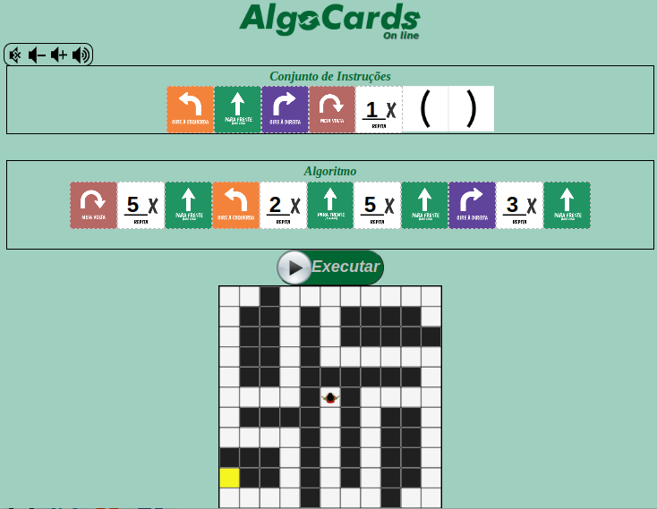Faça Algorítimos para danças, sair de labirintos, desenhar, etc.
AlphaMathics
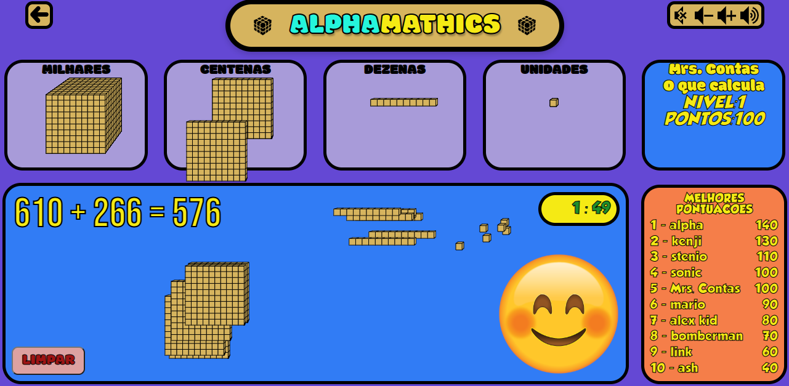Material Dourado para treinar o ensino de operações aritméticas em forma de um jogo muito desafiador.
Alternador e dínamo

Mostra a geração de corrente elétrica atráves de variação do fluxo magnético atraves de uma espira.
Amperímetro

Esta simulação permite estudar o funcionamento da função amperímetro de um multímetro digital. Na simulação somente a função amperímetro está ativa.
Ampola de raios X

Mostra o funcionamento de um aparelho de raio X e seu principio basico como o espalhamento bremsstrahlung.
Analogias Elétricas

Simula o funcionamento de uma roda d'agua para gerar eletrícidade. Pode-se projetar varias configurações, como geradores em série e paralelos, variar a resistência do consumidor, etc.
Ande na corda bamba

Compreenda o conceito de inércia rotacional analisando o movimento de um equilibrista na corda bamba.
Anéis de Newton
Um vidro curvo em cima de um pedaço de vidro plano com uma fina película de ar está entre os dois com espessura zero onde os dois pedaços de vidro se tocam e aumenta gradualmente à medida que você se afasta desse ponto. A luz de um único comprimento de onda brilha de cima, quando refletida nas superfícies do filme fino interfere, levando a um padrão de alvo - essas ondas mostram a interferência, que pode ser construtiva ou destrutiva.
Ângulo Inscrito numa Semi-Circunferência
Mova um ponto numa semi-circunfêrencia e veja como um triângulo inscrito numa semi-circunferência é sempre rectângulo.
Ângulos ao Centro e Ângulos Inscritos
Regule os ângulos de um triângulo inscrito.
Ângulos em Retas Paralelas
Mova dois pontos e acompanhe os valores dos ângulos entre as retas paralelas e secante que passam pelos pontos.
Animação de Movimento Harmônico Simples de Oscilações

Relacionando MHS ao movimento circular uniforme.
Animação de um ímã e um loop
Observe um imã passando por uma bobina com velocidade constante. Os gráficos mostram o fluxo magnético através de cada espira da bobina, em função do tempo, bem como a fem induzida na bobina em função do tempo.
Ao redor do mundo

Simula a ebulição da água em diversas altitudes e locais ao redor do mundo.
Aprendizado de movimento circular

Apresenta alguns dos termos básicos do movimento circular como: rpm, frequência, período, frequência angular, velocidade e velocidade angular.
Aproximação mais próxima entre as partículas

Observe a distância mais próxima possível entre duas partículas quando uma delas é disparada contra a outra de uma certa distância a uma certa velocidade. Ajuste parâmetros como velocidade, carga e massa.
Arco e flecha
Aprenda mais osbre a força elástica, lei de Hooke e sobre a energia armazenada em um sistema elástico tendo como contexto um arco e flecha.
Arco elétrico

Mostra a geração de um Arco elétrico (faísca), atráves do aumento de tensão usando um transformador elátrico.
Aritmética

Explica como a tabuada ajuda a entender a multiplicar, fatorar e dividir. Desenvolve múltiplas estratégias para problemas aritméticos.
Armadilha magneto-óptica

Apresenta o funcionamento de uma armadilha magneto-óptica para aprisionar e resfriar átomos até poucos milikelvins de temperatura. O modelo é baseado em um ensemble de gás não interagente que estão sujeitos às forças dos seis feixes de luz, sendo três pares contra-propagantes.
Art Maker

Uma maneira simples e divertida de fazer arte simétrica.
Assistência gravitacional (estilingue)
Um modelo simples de como funciona uma assistência gravitacional (também conhecida como estilingue gravitacional). Observe como isso muda o caminho da sonda e aumenta significativamente sua velocidade.
Associação de resistências
Permite associar até 3 resistências em série e em paralelo, podendo definir o valor de cada resistência e da tensão.
Associação de Resistências, Bobinas e Condensadores
Defini diversos tipos de associações de componentes num circuito elétrico (bobinas,resistências e condensadores) até um total de 9 componentes, calculando os diferentes valores das grandezas associadas.
Associe Frações

Encontrar frações correspondentes usando números e imagens.
Assuntos Aéreos

Mostra a composição quimica do ar atmosférico.
Atirando balas verticalmente para cima em dois blocos de madeira

Duas armas idênticas disparando balas verticalmente para cima em blocos de madeira idênticos. Uma arma atira diretamente no centro de massa do bloco de madeira, a outra arma pode atirar em qualquer lugar do bloco. Então, um bloco sobe sem girar, o outro gira enquanto sobe.
Atividade óptica
Mostra o que acontece quando a luz polarizada passa por um material opticamente ativo (filtro). A luz que pelo filtro polarizador tem sua direção de polarização girada, mas cores diferentes são giradas em quantidades diferentes. Ajuste o ângulo do eixo de transmissão de cada polarizador.
Atmosfera terrestre

Acompanha a pressão e a temperatura em função da altitude em varias camadas da atmosfera.
Átomo de Bohr

Mostra a órbita e o numero quântico de um eletrom em diversos niveis de energia para o atômo de hidrogênio, tais como seus saltos quânticos.
Atração mutua

Simula a trajetória de varios corpos que se atraem gravitacionalmente.
Atrito

Descreve um modelo de atrito a nível molecular.
Atrito

Descreve um modelo de atrito em função da força normal.
Atrito (fricção)

Investigue a diferença entre atrito estático e atrito deslizante. Mude a massa do objeto que está sendo puxado em diferentes superfícies e veja o gráfico de força fricção (atrito) versus normal.Use a inclinação desse gráfico para determinar o coeficiente de atrito de sua superfície.
Atrito Circular

Encontrem as relações que afetam a velocidade máxima que um carro pode fazer em uma curva. Modifique os pneus, a superfície da estrada, a massa do carro, o raio da curva e a velocidade inicial do carro.
Atrito com laboratório de previsão

Obtenha um par de superfícies com um coeficiente de atrito gerado aleatoriamente. Ajuste a massa, calcule a força normal e meça a força de atrito para obter o coeficiente de atrito e fazer previsões.
Atrito e arrasto

Demonstra como atuam as forças de atrito e arrasto em um movimento num plano inclinado com diferentes grandezas relacionadas.
Atrito em uma inclinação
Ajuste o ângulo da inclinação e veja o que acontece com os vários componentes de forças sobre um corpo. Observe o atrito estático necessário para manter o bloco em repouso em cada inclinação.
Atrito Estático - Diagrama de forças
Em uma caixa sobre uma mesa, ajuste o peso da caixa e a força aplicada sobre ela. Observe o diagrama de forças.
Atrito estático e cinético em um plano inclinado

Uma caixa sendo puxada ao longo de um plano inclinado por uma corda. Os alunos podem usar a simulação para explorar os efeitos do atrito estático e cinético e sua relação com a inclinação do plano.
Atrito: puxando uma caixa em uma superfície horizontal

Uma caixa sendo puxada ao longo de uma superfície horizontal por uma corda. Os alunos podem usar a simulação para explorar os efeitos do atrito estático e cinético e sua relação com a força normal da superfície.
Atwood's Machine / Atwood's Incline

Dois objetos presos um ao outro por uma corda sem massa. A corda passa por uma polia sem massa e sem atrito. Pode-se ajustar as massas dos dois objetos, o ângulo da inclinação e o coeficiente de atrito entre a massa m e a inclinação.
Aula de Marie Curie

Analise o decaimento radioativo de varios elementos e isotópos. veja o tempo de meia-vida, as particulas emitidas e os subprodutos formados.
Avião

Explore as diferentes forças que agem em um avião em vôo, como sustentação, arrasto, força impulsora e peso.
Balançando

Utiliza conceitos de torque (Momento de uma força) para prever como objetos de massas diferentes podem ser usados para equilibrar uma gangorra.
Balanceamento de Equações Químicas

Balanceia equação química reconhecendo que o número de átomos de cada elemento é conservado em uma reação química.
Balanceamento de Equações Químicas

Balanceia equação química reconhecendo que o número de átomos de cada elemento é conservado em uma reação química.
Balão de ar quente

A simulaçao tem como objetivo reforçar o aprendizado a respeito da segunda lei de Newton, que trata da relação entre força, massa e aceleração tendo como plano de fundo um balão de ar quente.
Balão fugitivo

Aprenda sobre a lei de combinação de gases e como ela pode ser usada para entender o comportamento de um balão.
Balões e Eletricidade Estática

Descreve um modelo para conceitos comuns de eletricidade estática (transferência de carga, indução, atração, repulsão e aterramento)Prevendo a força de acordo com a distância em várias configurações de carga
Barco fluvial

Um barco atravessando um riacho, você pode controlar o rumo e a velocidade do barco, bem como a força da corrente. Clássico problema do vetor de velocidade, completo com um rio corrente e um barco.
Bateria

Simula o funcionamento de uma batéria quimica para gerar eletricidade e fazer uma lanterna funcionar. Pode-se escolher e comparar os materias usados na bateria.
Bateria em um circuito básico
Mostra o fluxo de cargas (convencionáis ou reais) em um circuito simples, dentro e fora da bateria.
Bateria real

Observe a mudança na tensão nos terminais de uma bateria quando muda corrente fornecida pela bateria. Examine como uma bateria real é diferente da bateria ideal que usamos ao resolver problemas simples de física.
Batidas
Visualizar a formação de batidas e a relação entre o número de batidas por segundo e a frequência de batidas ouvida pelo observador.
Batidas

Visualizar a formação de batidas e a relação entre o número de batidas por segundo e a frequência de batidas ouvida pelo observador.
Batimento de Ondas
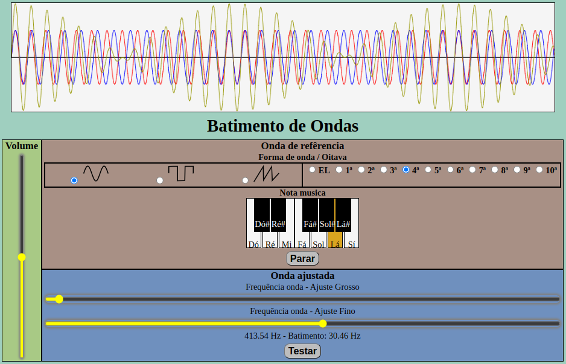Ondas sonoras interferindo, demostrando o o fenômeno de batimento, usado para afinação de instrumentos musicais.
Berço de Newton

Mosta o movimento oscilatório, com gráficos, de uma combinação popular de pêndulos conhecida como berço de Newton, evidenciando a conservação do momento linear e da energia.
Bilhar

Simula o movimento de varias bolas de bilhar quando interagem entre si, com as paredes e com a mesa. É possivel alterar varios parâmetras, como atrito e elasticidade.
Bimetal

Mostra o encurvamento de uma lamina bimetálica ocosionado pela dilatação térmica.
Blindagem Radioativa

Invstigue a quantidade de radiação que é bloqueada por diferentes materiais. Altere o tipo de radiação, o material e a espessura do material de blindagem.
Blocos em colisão

Simula um experimento em que dois blocos, um livre e um presso a uma mola, podem interagir e obterem movimentos oscilatórios e aleatórios.
Bobina de Helmholtz

Simula o experimento de Helmholtz em que um feixe de eletróns dentro de um campo magnético pode ter uma trajétoria circular.
Bobina de indução

Simula uma bobina de indução funcionando continuamente com a produção de arco elétrico e som de estralo.
Bobina Girando em Campo Magnético

Mapeie o fluxo em função do tempo em uma bobina girando em um campo magnético e a força eletromotriz.
Bobina girando em campo magnético com gráfico

Observe os gráficos de fluxo magnético e força eletromotriz versus tempo para uma bobina girando em um campo magnético. Variar o tamanho da bobina, a taxa na qual a bobina gira e a intensidade do campo magnético.
Bobsled

Aprenda mais sobre movimento circular numa situação envolvendo uma competição de Bobsled.
Bola caindo em um fluido viscoso
Observe a gravidade específica e a viscosidade de diferentes matériais. A gravidade específica é a razão entre a densidade desse material e a densidade da água.
Bola em uma rampa
Observe o tempo de descida de uma bola em uma rampa com varias inclinações.
Bolinhas De Darwin
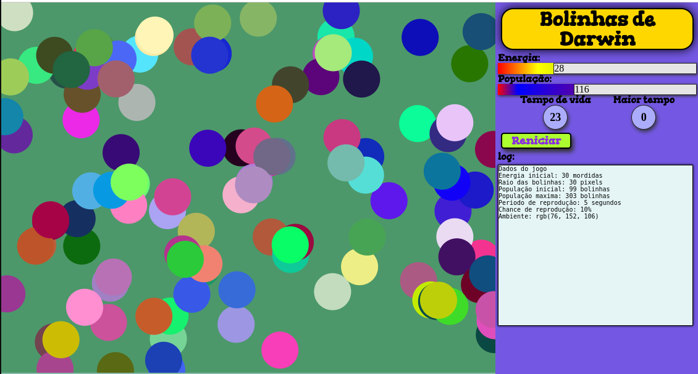Você é um predador e as bolinhas são as presas. Observe a evolução natural das bolinhas que com o tempo melhoram sua camuflagem e enganam o predador.
Bolinhas De Darwin AU
Você é um predador e as bolinhas são as presas. Observe a evolução natural das bolinhas que com o tempo melhoram sua camuflagem e enganam o predador. Arquivo HTML unico para baixar.
Bomba

Mostra o funcionamento de dois modelos de bombas hidraulicas manuais.
Boneco de teste de colisão

Aprenda como a relação entre força, tempo, impulso e quantidade de movimento afetam o resultado de uma colisão em um teste de colisão de veículos.
Braquistócrona

Dados dois pontos, ao longo de qual caminho você pode deslizar mais rápido? Veja se consegue escolher o caminho mais rápido nesta simulação do famoso problema da Braquistócrona.
Brownian Motion
Brinque com o movimento majestoso das partículas brownianas.
Buraco negro

Observe um relógio desacelerar na presença do campo gravitacional massivo de um buraco negro.
Caçamba de Força da Gravidade

Permite coletar dados de Força da Gravidade (peso) vs Volume para materiais e locais que não podemos fazer em sala de aula. Encha o balde em diferentes níveis e registrar a força no balde e use os dados para encontrar a densidade do material no balde e a massa do balde.
Cadeia de decaimento

Mostra a cadeia de decaimento nuclear de isotopos radioativos.
Cadeia de molas

Mostra uma cadeia de molas e massas com pontos de fixação fixos. Pode-se mover os ponto de fixação e alterar o número de elos da corrente, gravidade, massa, rigidez da mola e amortecimento (atrito). Tambêm pode arrastar uma massa individual.
Caixas de Energia - Circuito de Combinação
Mostra caixas de energia para um circuito com três resistores e duas chaves. Abra e feche as chaves, regule a tesão da fonte e as resistências dos resistores.
Caixas de Energia - Circuito Paralelo
Mostra caixas de energia para um circuito com três resistores em paralelo. Regule a tesão da fonte e as resistências dos resistores.
Caixas de Energia - Circuito RC Série
Mostra caixas de energia para um circuito RC Série (resistor e capacitor em série). Regule a tesão da fonte e a resistência dos resistores e a capacitância do capacitor.
Caixas de Energia - Circuito Série
Mostra caixas de energia para um circuito com três resistores em série. Regule a tesão da fonte e as resistências dos resistores.
Caixas de energia - Introdução
Visa familiarizá-lo com o conceito de caixas de energia. Uma maneira de calcular a potência é multiplicar a tensão e a corrente. Nesta simulação a tensão é plotada no eixo vertical e a corrente no eixo horizontal, o que significa que a área retangular mostrada na caixa representa a potência daquele elemento de circuito específico. Regule a tesão da fonte e a resistência do resistor.
Calor Específico de um Líquido (Guiado)

Como calcular o calor específico de um líquido com base nas mudanças de temperatura que ocorrem quando a água quente é adicionada ao líquido.
Calor Específico de um Sólido (Guiado)

Como calcular o calor específico de um sólido com base nas mudanças de temperatura que ocorrem quando um sólido quente é adicionado à água fria.
Calor Específico do Fluido a partir da Energia Elétrica

Colete dados sobre tempo e temperatura à medida que a energia elétrica é convertida em calor dentro de um fluido e assim determine o calor específico do fluido.
Calor por Condução
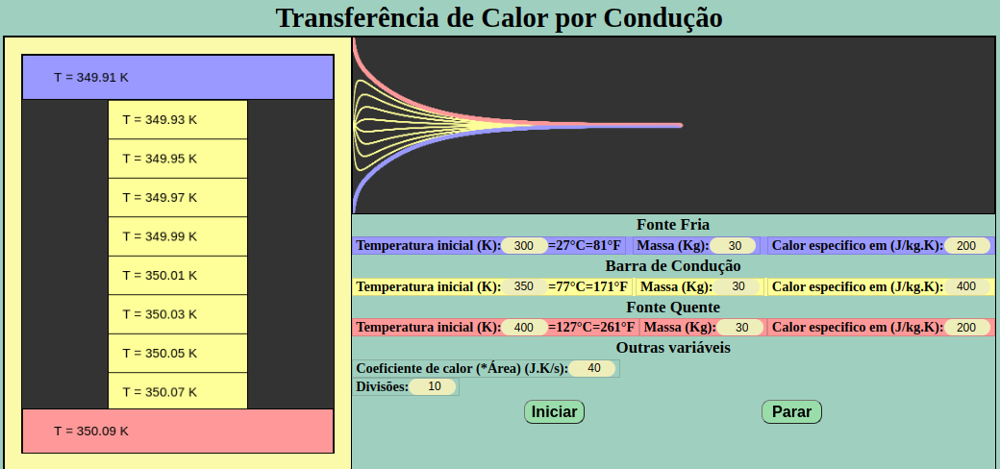Simula a transferência de calor por condução com acompanhamento da temperatura e controle de vários parâmetros.
Calor por Convecção
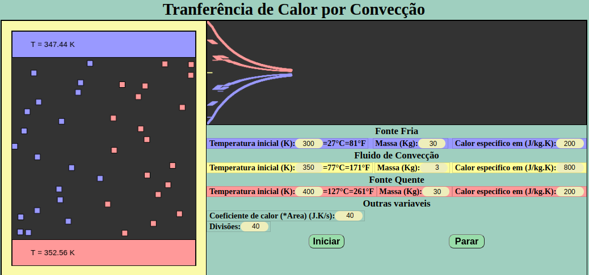Simula a transferência de calor por convecção com acompanhamento da temperatura e controle de vários parâmetros.
Calor por Radiação
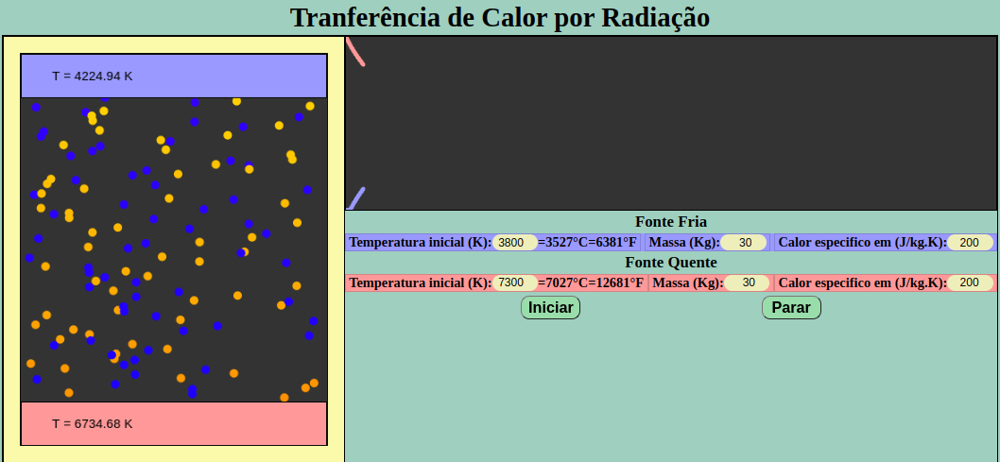Simula a transferência de calor por radiação com acompanhamento da temperatura e controle de vários parâmetros.
Calorímetro

Simula o uso de um calorimetro para medir o calor perdido durante o resfriamento de várias amostras de materiais.
Câmara de Treinamento de Astronautas

Descubra a relação entre peso e massa na Terra e além dela.
Caminhada Aleatória

Simula a caminhada aleatória(tambem chamada de "Andar do bebado") de uma ou mais partículas em duas dimensões. Esse tipo de trajetória e caracteristica do movimento browniano.
Campainha

Compreenda como o campo magnético produzido por uma bobina pode ser utilizado para criar um sistema de uma campainha.
Campo elétrico

Permite ajustar uma carga elétrica e mapear o campo elétrico a sua volta.
Campo elétrico e potencial

A simulação mostra o campo elétrico e o potencial elétrico ao redor de uma distribuíçao de cargas.
Campo elétrico e potencial elétrico em 1D
veja os gráficos do campo e do potencial elétrico ao longo da reta que passa por duas cargas eletricas. Regule o valor das cargas.
Campo elétrico perto de duas cargas
Regule o valor e a posição de duas cargas elétricas e veja como muda o campo elétrico na região em volta.
Campo gravítico

Permite mapear o campo gravitacional em volta da Terra.
Campo gravítico homogéneo

Permite mapear o campo gravitacional proximo a superficie da Terra mostrando que nesta situação pode ser considerado uniforme.
Campo magnético - dois fios condutores de corrente
Mostra o campo magnético perto de dois fios condutores de corrente longos e retos. Ajuste a posição dos fios e os valores das correntes.
Campo magnético em 1 dimensão
Veja o gráfico do campo magnético em função da posição de um fio percorrido por uma corrente. Você pode ajustar os valores das correntes e as posições dos fios.
Campo magnético em um fio condutor

Observe a direção do campo magnético de cargas em movimento em um fio com base na intensidade dos círculos ao redor do fio. Reguele deversos parâmetros.
Campo magnético num condutor percorrido por uma corrente linear
Simula uma experiência relativa ao campo magnético gerado por uma corrente eléctrica num condutor retilineo. Sabendo que uma corrente elétrica produz um campo magnético, faz-se passar uma corrente de grande intensidade através de um fio vertical.
Campo magnético num ima em barra
O campo magnético de um ima em barra investigado com uma agulha de uma bússola. Os pólos magnéticos da barra magnética e da agulha se orientam mutualmente.
Canhão de bola de tênis

Dispare uma bola com um canhão para achar a distância, usa o modelo clássico de arrasto (resistência) do ar (força proporcional à velocidade) e valores padrão realistas para uma bola de tênis, ajuste a velocidade e ângulo de lançamento e o coeficiente de arrasto
Canhão de Newton

Reproduz o experimento mental de Newton mostrando como colocar uma bola de canhão em orbita atraves do seu disparo com velocidade ideal. Encontre essa velocidade.
Canhão de Newton

Reproduz o experimento mental de Newton mostrando como colocar uma bola de canhão em orbita atraves do seu disparo com velocidade ideal. Encontre essa velocidade.
Canhão Eletromagnético
Mostra um canhão eletromagnético. O projétil desliza sem atrito nos trilhos que consiste em um circuito elétrico. A corrente nos trilhos gera um campo nagnetico uniforme, que gera uma força que direciona e sustenta o projétil.
Canhão Eletromagnético

testem os fatores que afetam a aceleração de uma barra de metal que transporta uma corrente através de um campo magnético.
Capacitor

Permite ajustar a área, distância, e material e tesão de um capacitor de placas paralelas para acompanhar a capacitância e a carga armazenada.
Capacitores

Esta simulação permite estudar a capacitância de um capacitor de placas paralelas e o funcionamento de um capacímetro digital.
Característica de descarga de gás

Mostra a ionização de uma gás por irradiação e em seguida a descarga elétrica num detector de radiação.
Carga elétrica em campo elétrico
Simula uma partícula carregada sendo lançada perpendicularmente em um campo elétrico uniforme mostrando sua trajetória. Ajuste a intensidade do campo e da carga.
Carga em uma corda em um campo elétrico
Mostra a posição de equilíbrio de uma esfera carregada pendurada em uma corda numa regição com campo elétrico uniforme. Ajuste o valor do campo, da carga e a massa da esfera para encontrar o ângulo de equilibio.
Carga no Campo Magnético

Teste os fatores que afetam o caminho da partícula carregada em um campo magnético. Ajuste a massa e a carga da partícula e a intensidade do campo magnético.
Carga se movendo através do campo magnético básico

Investigue a fórmula da força sobre uma carga que se move através de um campo magnético e veja como a direção da força depende da direção do movimento da carga e da direção do campo magnético.
Cargas e campos

Mapeia o campo elétrico em volta de, e entre, um conjunto de cargar. Permitindo mover as cargas.
Cargas e Campos

Determina variáveis que afetam o modo como corpos carregados interagem por meio do campo elétrico.
Cargas em um condutor

Simula a dinâmica de cargas livres em um condutor. É possível observar a tendência das cargas se acumularem na superfície do condutor, levando a uma densidade de cargas nula dentro do condutor.
Carnaval em mols

Veja quantos atômos há em certa quantidade massa em varios matériais do nosso cotidiano, converta unidades e veja a equivalência.
Carregamento do Capacitor no Circuito RC

Monitore a tensão, a corrente e a carga em um circuito RC que tenha o capacitor carregando ou descarregando.
Carregando um capacitor em um circuito DC

Investigue os fatores que afetam a taxa na qual um capacitor é carregado. Alterar a resistência e a capacitância no circuito e monitorar a corrente, tensão e carga no capacitor.
Carrinho + Pêndulo

Mostra o movimento combinado de um pêndulo e uma mola horizontal, pode-se alterar a posição inicial, a gravidade, a massa, o comprimento do pêndulo, a rigidez da mola ou o atrito (amortecimento).
Carrinho + Pêndulo com Motor de Física

Simula um carrinho se movendo ao longo de uma pista horizontal com um pêndulo suspenso nela. Controle exercer uma força de sobre a mola, pode-se alterar a gravidade, rigidez da mola, elasticidade e amortecimento (atrito).
Carro em uma curva inclinada
Mostra um carro fazendo uma curva inclinada. O carro deve experimentar um movimento circular uniforme, movendo-se em um círculo horizontal. Você vê a visão traseira e aérea do carro, bem como o diagrama de corpo livre. Ajuste a velocidade, o angulo, o atrito e o raioda curva e veja em que condições o carro derrapa ou não.
Carro sem motorista

A simulação interativa tem o objetivo de contribuir com o aprendizado sobre adição de vetores em um contexto de um mapa no estilo dos GPS.
Carros bate-bate

Aprenda sobre a relação entre força, tempo, impulso e quantidade de movimento em colisões.
Carrossel (Força centripeta)
Mostra forças vetoriais em um carrossel de pendulo, podendo ajustar periodo, raio, comprimento dos cabos e massa dos pêndulos.
Casa de Boneca

Aprenda sobre a análise de um painel de circuitos no contexto de uma casa de bonecas realista.
Cavalo e carroça

Aprenda mais sobre a terceira lei de Newton em duas dimensões e sobre a interação de múltiplos objetos ou corpos.
Cavidades Ópticas

Conheça a estabilidade de cavidades ópticas a partir de parâmetros como distância entre os espelhos e seus raios de curvatura.
CentriSpace
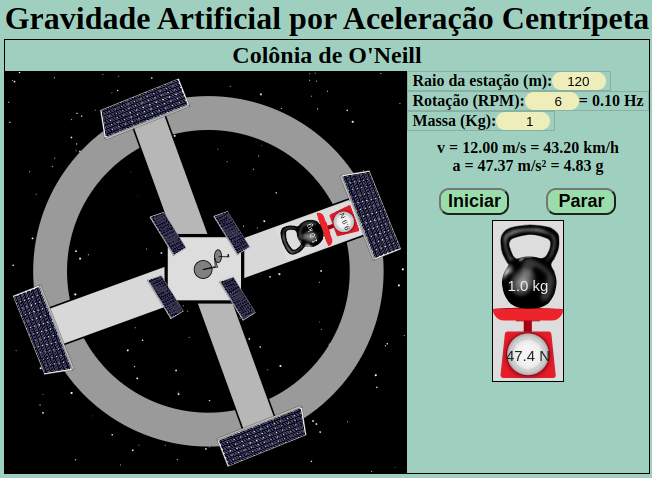Simula o funcionamento de uma Colônia de O'Neill onde a pseudo-força centrifuga é usada para criar gravidade artificial.
Centro de gravidade

Simula um brinquedo onde um cilindro ou um cone duplo rola apoiado em duas rampas em V. Dependendo das condições de inclinação o cone duplo rola para cima apesar do centro de massa rolar para baixo.
Centro de massa
Dado três particulas, com massas ajustáveis mas posições fixas, mostra a posição do centro centro de massa.
Centro de massa: pessoa em uma jangada flutuante

Uma pessoa caminhando em uma jangada flutuante. Pode-se ajustar a massa da jangada, a massa da pessoa e a velocidade da animação.
Centro e Variabilidade

Descrever como a mediana é derivada. Prever os efeitos de um ponto fora da curva na média e na mediana.
Chaotic Pendulum
Crie seu próprio caos bonito.
Chaotic Planets
Construa seu próprio sistema planetário caótico.
Chemthink – A Natureza Particulada da Matéria

Você explorará a natureza particulada da matéria e responderá a um pequeno questionário sobre: elementos, compostos e misturas, Sólidos, líquidos e gases, Átomos e moléculas
Chemthink – Estrutura Atômica

Você explorará a estrutura atômica e responderá a um pequeno questionário sobre: massa, carga, função das partículas subatômicas, prótons, nêutrons e elétrons.
Chemthink – Formação de íons

Você explorará a formação de íons e responderá a um pequeno questionário sobre: contando prótons, nêutrons e elétrons, estrutura de pontos de Lewis para íons.
Chemthink – Formas Moleculares

O tutorial explora o conteúdo de formas moleculares e a Teoria da repulsão dos pares de elétrons da camada de valência.
Chemthink – Fórmulas Iônicas

Neste pequeno tutorial você irá explorar fórmulas iônicas e no final poderá responder a um quiz.
Chemthink – Isótopos

O tutorial explora o conteúdo relacionado a isótopos e traz um quiz ao final.
Chemthink – Ligação Covalente

Nesse tutorial é possível explorar a ligação covalente e no final responder a um quiz para testar seu aprendizado.
Chemthink – Ligação Iônica

Você explorará a ligação iônica e fará um breve teste sobre: como os íons se formam e por que eles se unem a forma tridimensional de um cristal iônico, contando íons em um cristal para determinar a fórmula iônica.
Chemthink – O Comportamento dos Gases

O tutorial explora algumas das leis relacionadas aos gases e oferece um pequeno quiz ao final.
Chemthink – Reações Químicas

O tutorial explora reações químicas e oferece um pequeno quiz ao final.
Chute - Futebol com Laboratório de Previsão

Chute uma bola de futebol em vários ângulos diferentes para encontrar a relação entre o ângulo e a distância horizontal percorrida pela bola.
Ciclo de Carnot

Simula um gás em uma câmara de combustão passando sucessivamente por transformações isotermicas e adiabáticas, realizando o Ciclo de Carnot.
Ciclotron
Simula de um ciclotron, que é um acelerador de partículas muito compacto. Nas seções em forma de D (chamadas dees) existe um campo magnético uniforme que faz com que a partícula carregada positivamente siga um caminho que é um semicírculo no espaço entre os dees existe um campo elétrico que acelera a partícula.
Cinemática 1D: gráficos de velocidade x tempo

Esta simulação mostra o gráfico de velocidade x tempo para um objeto que se move ao longo de uma linha reta. Ajuste as velocidades e o intervalo de tempo.
Cinemática em uma dimensão: sistema de dois objetos

Esta é uma simulação de dois carros se movendo em uma dimensão. Pode ajustar a posição inicial, velocidade inicial e aceleração, assistir a uma animação do movimento dos carros e também ver o gráfico de posição versus tempo.
Cinemática Relativística
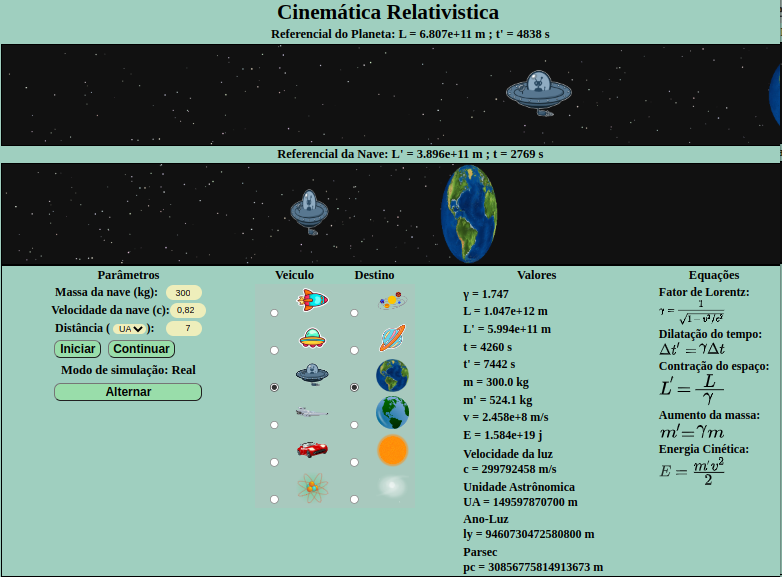Simulador de viagem em velocidade relativística, pode-se controlar a velocidade da Luz e vários outros parâmetros.
Circuito electromagnético oscilante

Esta simulação mostra um circuito eletromagnético oscilante, constituído por um condensador (centro) e um indutor (ou seja, uma bobina, à direita).
Circuito elétrico

Permite conectar varios componentes eletricos, incluindo lâmpadas,pilhas, resistores, multimetros, chaves e outros.
Circuito Elétrico com Quatro Lâmpadas Idênticas

Essa é uma simulação de um circuito com uma fonte de tensão, quantro lâmpadas idênticas e três interruptores.
Circuito eletromagnético oscilante
Esta simulação mostra um circuito eletromagnético oscilante, constituído por um condensador (centro) e um indutor (ou seja, uma bobina, à direita).
Circuito em Série Simples e a Corrente

Encontrem rapidamente a relação entre o número de resistores em um circuito em série e a corrente através desse circuito.
Circuito RC

Esta simulação permite o estudo do circuito RC formado por um resistor e um capacitor ligados em série a uma fonte de tensão contínua.
Circuito Resistor-Capacitor (RC)
Um circuito RC em série (resistor-capacitor), envolvendo um resistor, um capacitor, uma bateria e um interruptor. Observe no gráfico a tensão no resistor e no capacitor.Ajuste os valores da resistência e da capacitância. Mova a chave para posições de carga e descarga e veja o que muda.
Circuito retificador

Mostra o funcionamento de uma fonte retificadora de corrente através da representação gráfica da tensão oscilante no fio.
Circuito RLC
Mostra várias representações matématicas para um circuito RLC Série como: Triângulo de impedância; Gráfico de tensão versus tempo e Gráfico da corrente de pico em função da frequência. Ajuste resistência, capacitância, indutância e frequência.
Circuito RLC

Simula a dinâmica das cargas e das correntes elétricas em um circuito RLC.Altere os valores da fonte de tensão, do capacitor C, do resistor R e do indutor I. Veja os gráficos das cargas ou correntes em função do tempo.
Circuito RLC em paralelo

Simula a resposta graficamente em um circuito RLC (resistor, indutor e capacitor) paralelo, onde é possivel mudar a frequencia de entrada, a capacitância, a indutância e a resistência.
Circuito RLC em série

Simula a resposta graficamente em um circuito RLC (resistor, indutor e capacitor) série, onde é possivel mudar a frequencia de entrada, a capacitância, a indutância e a resistência.
Circuitos AC simples
Mostra um circuito simples, constituído por uma fonte de tensão alternada e uma resistência, um condensador ou uma bobina ideal (sem resistência). Além disso, existem aparelhos de medida para a tensão U (azul) e intensidade I (vermelho).
Circuitos AC simples

Mostra um circuito simples, constituído por uma fonte de tensão alterna e, dependendo da opção seleccionada, uma resistência (sem indutância), um condensador ou uma bobina ideal (sem resistência). Além disso, existem aparelhos de medida para a tensão U (azul) e intensidade I (vermelho).
Circuitos em série

Investigue as relações entre tensão, resistência e corrente em um circuito em série com até três componentes passivos. Regule os valores das resistências e escolha entre baterias ideais e baterias contendo resistência interna.
Circuitos Paralelos

Investigue as relações entre tensão, resistência e corrente em um circuito paralelo com até três componentes passivos. Ajuste as resistências e escolha entre baterias ideais a baterias contendo resistência interna.
Circuitos RC

Investigue os fatores que afetam a taxa de descarga de um capacitor. Altere a resistência e a capacitância no circuito e monitore a descarga do capacitor e encontrer a meia-vida do capacitor.
Circuitos Simples

Investigue as relações entre tensão, resistência e corrente em um circuito com apenas um componente passivo. Ajuste a resistência e escolha entre baterias ideais e baterias contendo resistência interna.
Círculo unitário

Mostra gráficos das funções trigonométricas (seno, cosseno, tangente e cotangente) em comparação com a posição no circulo unitário.
Círculos Gêmeos de Arquimedes
Mova semi-circulos menores inscrito em um maior e percebe os Círculos gêmeos de Arquimedes.
Círculos Osculadores ao Gráfico de uma Função
Desenha o gráfico de uma equação e círculos osculador a ela.
Circunferências Tangentes
Relaciona pontos, retas e circulos.
Cliff Diver

Com que velocidade o mergulhador do penhasco está se movendo quando atinge a água? simule o movimento considerando a aceleração da gravidade e a resistência do ar.
Coeficiente de temperatura

Mostra a influência da temperatura sobre a resistividade eletrica em vários materiais.
Colisão de carro

Explore como a velocidade, a energia e o momento mudam durante colisões de carros simulados.
Colisões

Descubra a lei de conservação da quantidade de movimento examinando uma variedade de colisões entre carrinhos de batida.
Colisões de corpos rígidos

Mostrar objetos colidindo em 2 dimensões. Pode-se controlar quatro "propulsores". em dois dos blocos. As teclas J,K,L,I (e também as setas) controlam o empuxo no bloco2. Também pode-se definir a gravidade, elasticidade (salto) e amortecimento (atrito) e a massa de um dos blocos.
Colisões elásticas

Permite simular o choque de moedas de diferentes tamanhos e massas e verificar a composição das velocidades em decorrência das colisões.
Colisões elásticas e inelásticas
Simula colisões elásticas e inelásticas pelo choque entre dois vagões mostrando a conservação do momento linear.
Colisões em 1 Dimensão
Observe a colisão entrer dois carrinhos, varie massa, velocidade e elasticidade e acompanhe o momento (quantidade de movimento) dos carrinhos pelo gráfico.
Colisões em 1 dimensão, com gráficos de barras
Observe a colisão entrer dois carrinhos, varie massa, velocidade e elasticidade e acompanhe o momento (quantidade de movimento) dos carrinhos pelo gráfico.
Colisões inelásticas

Mostra uma situação de colisão na qual após o choque os corpos permanecem presos um ao outro, situação conhecida como colisão inelástica.
Como funciona um carro com tração dianteira
Mostra o papel do atrito na condução de um carro. Neste caso, um carro de tração dianteira. Sem nenhum atrito, o motor gira as rodas dianteiras, mas as rodas dianteiras simplesmente escorregam na estrada sem atrito e o carro não se move. Se houver atrito atuando apenas nas rodas dianteiras, a força de atrito estático atua para evitar que as rodas dianteiras deslizem - essa é a força que impulsiona o carro para frente. Para as rodas traseiras, o atrito estático só precisa fornecer o torque necessário para manter as rodas traseiras rolando sem escorregar.
Como um espelho côncavo funciona

Investigue a relação entre o raio de curvatura e a localização do ponto focal para espelho côncavos real e ideal.
Como um espelho plano funciona

Investigue a relação entre o ângulo de uma prancha e um disco de hóquei incidente e refletido, simulando o que acontece em um espelho plano.
Comparando rampas
Compara o tempo que duas bolinhas demorar para percorrer uma mesma distância horizontal, sendo aceleradas inicialmente pela descida em rampas. Mude as alturas e comprimentos das rampas para analisar o efeito da inclinação.
Comparar Números

Varias representações de um número: palavra escrita/falada, numeral, quadro de dez, unidades e objetos. Comparando quantidades.
Comparar Pêndulos Duplos

Mostra o movimento de dois pêndulos duplos quase idênticos. Voce pode reparar que os movimentos inciam quase iguais e com o tempo se diferenciam caóticamente.
Componentes de um Vector
Introduz em um gráfico as coordenadas de um vector.
Componentes do Vetor

Esta é uma simples simulação que permite ao estudante informar a intensidade e a direção do vetor e com base nessas informações mostrar as componentes x e y desse vetor numericamente e graficamente.
Comprimento de onda

Investigue a relação entre a velocidade, a frequência e o comprimento de onda da onda bidimensional se propagando radialmente.
Concentração

Descreve as relações entre volume e quantidade de soluto na concentração da solução.
Condição de imponderabilidade

Mostra um experimento simples que possibilita constatar que em situação de queda livre o peso aparente dentro do sistema é nulo.
Conectando Força e Energia - Campo e Potencial
Na representação de um espaço no qual existe um campo uniforme direcionado para baixo. Se você escolher uma bola, o campo é um campo gravitacional. Se você usar uma carga, o campo é um campo elétrico. No gráfico. Você pode plotar seis coisas diferentes no eixo vertical, em função de x ou y.
Conectando movimento harmônico simples e movimento circular uniforme
Compara o movimento de uma bola experimentando um movimento circular uniforme com dois movimentos harmônicos simples diferentes, um vertical e outro horizontal. Também mostra que os gráficos de posição versus tempo desses movimentos são senoidais.
Conservação da Energia Mecânica: Massa em uma Mola Vertical

Mostra uma massa oscilando na extremidade de uma mola. As energias cinética, gravitacional e potencial elástica são apresentadas em gráficos. Ajuste a massa e a constante da mola.
Conservação de energia mecânica

Mostra as transformações entre as energias potencial gravitacional, cinética e potencial elástica.
Constelação

Mostra o céu de um ponto na Terra, em data e hora determinada pelo usuário, com o desenho e nome das constelações no momento, se permitir acessar sua localização ela será usada.
Construindo pontes

Mostra a dilatação termica em um junta de dilatação de uma ponte para temperaturas de -50ºC a 100ºC, bem como o que acontece quando não há junta de dilatação.
Construir uma Fração

Monta frações usando números e círculos e mostra como numerador e denominador mudam o resultado da fração.
Construtor de Área

Encontre a área e perímetro de uma forma contando quadrículas.
Construtor de centro de massa

Desenhe formas diferentes e observe a mudança do centro de massa!
Construtor de circuito DC

Crie e simule o funcionamento de circuitos com lâmpadas, baterias, fios, resistóres, chaves,voltimetros e amperimetros
Construtor de Funções

Defini uma função como uma regra relativa a cada entrada para exatamente uma saída e previsivelmente agindo em entradas.
Construtor de Funções: Básico

Defini uma função como uma regra que relaciona cada entrada para exatamente uma saída e agindo de forma previsível nas entradas.
Consumo de energia elétrica

Calcula o consumo de energia elétrica, e o valor monetário, de eletrodomésticos e o total residencial.
Continuidade - Fluido em um tubo
Mostra um tubo com diâmetro variavel sendo precorrido por um fluido. podemos ver que elementos deste fluido se movem mais rapido quando a área é menor, de forma que a vasão é a mesma em qualquer parte do tubo.
Contração do espaço

Simula o experimento mental da reflexão da luz dentro de um veiculo em movimento para deduzir a contração do espaço.
Conversão de Unidades
Converta valores em diferentes unidades para fazer a roda gigante girar.
Convex Lenses
Uma rápida demonstração de lentes convexas.
Corda

Simula um pulso de onda se propagando em uma corda sob tensão. Altere a densidade, tensão, amortecimento (atrito), número de pontos e intervalo de tempo.
Cores atômicas

Explore o modelo atômico de Bohr ao estudar a absorção e emissão de luz por gases simples.
Corner Reflectors
Saiba como funcionam os refletores de canto
Corpo negro

Mostra o gráfico da radiancia de um corpo negro em função do comprimento de luz para temperatura ajustável.
Correndo na Esteira

Defina a massa e a velocidade de uma pessoa na esteira. Altere a velocidade quando a pessoa estiver correndo. Alterne entre unidades métrica e imperial. Você visualiza a tela da esteira. Obtenha dados sobre tempo, distância e calorias queimadas.
Correndo no resistor

Em manutenção - Explore resistores e circuitos como analógia com água correndo por canos.
Corrente Alternada (CA) em circuito RC

Entenda a diferença entre circuitos alimentados por corrente continua (CC) e por corrente alternada (CA). Veja como mudanças simples na frequência levam a mudanças na diferença de potencial entre os componentes de um circuito RC.
Corrente Alternada (CA) em circuito RL

Entenda a diferença entre circuitos alimentados por corrente continua (CC) e por corrente alternada (CA). Veja como mudanças simples na frequência levam a mudanças na diferença de potencial entre os componentes de um circuito RL.
Corrente Alternada (CA) em circuito RLC

Encontre a frequência de ressonância de um circuito RLC em série (resistor, capacitor e indutor) alterando a frequência para obter a tensão máxima para o resistor.
Corrente de Pappus
Circulos inscritos em circulos.
Corrente Induzida e barra rolante

Teste os fatores que determinam quanta corrente é induzida em um circuito quando a área do circuito é alterada. Ajuste o campo magnético, a separação entre os trilhos e a velocidade da barra
Corrente Pendurada

Vários corpos rígidos conectados por juntas flexíveis formando uma corda,Mova as peças individualemnte, altere a gravidade, elasticidade (salto) e amortecimento (atrito).
Correspondência de gráfico

A aplicaçao é uma introdução ao clássico problema físico de correspondência no gráfico onde você deverá andar para frente ou para trás para encontrar a posição correspondente no gráfico de posição por tempo.
Correspondência de gráficos (posição x tempo + velocidade x tempo)
Mosta, para um mesmo movimento, os gráficos posição vs tempo e velocidade vs tempo.
Corrida entre uma bola solta e uma lançada horizontalmente
Compara gráficamente os movimentos horizontais e obliquos de dois corpos lançados da mesma altura.
Corridas pré-escolares

Aprenda sobre a relação entre energia cinética rotacional e translacional e como há conversão entre ambas quando um objeto descem uma rampa rolando.
Corte de diamante

Aprenda sobre refração, reflexão e reflexão total no contexto de um raio de luz atravessando um cristal diamante ou de outros materiais.
Criador de gráficos

Fazer gráficos de alta qualidade. Muitas opções estão disponíveis, incluindo linear, senoidal, exponencial, inversa, parabólica e muito mais.
Ctesíbio - Engine de bombeiros

Mostra o funcionamento de uma bomba d'agua manual de bombeiros usada para apagar incêndios.
Curva de Ressonância em circuito RLC

Investigue curvas de ressonância para diferentes circuitos RLC. Varie a frequências para ver como a resistência muda a forma da curva de ressonância. Observar o efeito de L e C na localização dessa curva.
Curvas de Lissajous

Mostra a formação de curvas de Lissajous, que são figuras formadas quando um ponto oscila na vertical e na horizontal com frequências resoonantes porem diferentes.
Curvas Elípticas
Gerá o gráfico de uma elipse degenerada movendo seus coeficientes.
Datação por radiocarbono

Aprena como funciona a datação por radiocarbono feita por arqueologistas e antropólogos.
Decaimento radioactivo

Logo que se inicia a simulação começa o "decaimento" de isotopos radioativos observando-se a transformação de pontos na cor vermelha para a cor preta.
Decaimento radioativo
Mostra o número de núcleos não transformados de uma dada substância diminuindo com o tempo segundo a expressão de decaimento radiotivo. Utiliza tanto uma figura de diversos circulos represetando os atômos mudando de cor, além do gráfico N X t
Declive de uma Secante / Reta Tangente
Mostra a reta tangente a uma parábola e sua inclinação.
Decomposição de uma força nas suas componentes
Mostra gráficamente como decompor vetores em retas linearmente independentes.
Defeitos de visão

Mostra feixes de luz ao passar por lentes e chegar ao olho com Hipermetropia, Miopia e Astigmatismo. permite ajusta a diopitria das lentes.
Deixando cair uma massa sobre outra massa oscilante

Uma massa oscilando na ponta de uma mola, então tem outra massa caindo sobre ela. Pode escolher que a massa caia quando a massa oscilante estiver em sua posição de equilíbrio ou em seu deslocamento máximo do equilíbrio e ajustar a massa do objeto que está sendo solto.
Densidade

Descrever como o conceito de densidade relaciona a massa de um objeto a seu volume. Medir o volume de um objeto, observando a quantidade de líquido que ele desloca. Identificar um material desconhecido por meio do cálculo de sua densidade e comparando-a com uma tabela de densidades conhecidas.
Desafio do Construtor de Átomos

Adcioone Protons, Eletrons e Neutrons para montar os átomos faltantes na tabela periódica.
Descarga de fluido através de um orifício

Apresenta uma situação na qual um fluido escoa através de um orifício sujeito à pressão da coluna desse mesmo líquido.
Descarga elétrica em gases

Mostra como, devido a ionização, um gás pode passar de isolante a condutor com o aumento da temperatura.
Descendo uma rampa
O objeto rola sem escorregar pela rampa. O gráfico mostra a energia mecânica total, a energia potencial gravitacional, a energia cinética translacional e a energia cinética rotacional em função do tempo ou da posição.
Desvio da Luz

Explica como a luz se desvia na interface entre dois meios ( refração ) e o que determina o ângulo ( Lei de Snell ).
Detecção de Radiação

Investigue como a distância de uma fonte radioativa afeta a quantidade de radiação detectada. Altere a fonte de radiação.
Determinação da Razão Carga/Massa do Elétron

Nesta simulação um feixe de elétrons é lançado em uma região onde há um campo magnético (a velocidade de lançamento dos elétrons é sempre perpendicular ao campo magnético). A trajetória dos elétrons pode ser visualizada por uma linha azul. A velocidade dos elétrons pode ser variada, alterando o potencial de aceleração (V).
Diagrama de Hertzsprung-Russell

Em astronomia, o diagrama de Hertzsprung-Russell é um gráfico de distribuição que mostra a relação entre a magnitude absoluta ou luminosidade versus o tipo espectral ou classificação estelar e a temperatura efetiva. Aqui vemos várias estrelas reais pocisionada neste gráfico
Diagrama PV - isoterma
Apresenta o diagrama PV (pressão-volume). Veja o que acontece quando a temperatura do gás ideal ou o volume é alterado (a temperatura constante). Veja o gráfico de pressão versus volume para uma determinada temperatura, escolha a temperatura.
Diagramas de movimento
Defina a posição, velocidade e aceleração de dois corpos e compare seus movimentos.
Diagramas de Voronoi usando cones

Um tipo de mapa é chamado de diagrama de Voronoi ou mosaico de Voronoi. Onde um plano pode ser dividido em regiões onde cada região mostra a parte do plano que está mais próxima de um dos pontos designados.
Difração da Luz

Permitir investigar os fatores que determinam os locais de interferência construtiva em um padrão de difração causado por fenda dupla.
Difração da luz numa fenda simples
Mostra a difração da luz numa fenda, permitindo controlar a frequência, a largura da fenda e o ângulo de observação.
Difração de Bragg
Mostra a diferenciação de fase de onda eletromagnetica refletica em varias camadas de um cristal.
Difração de Elétrons

Na simulação Difração de Elétrons um círculo representa a visão frontal do globo de vidro de um tubo de difração de elétrons. Uma fonte de 6.3 V representa a fonte que alimenta o filamento do tubo que, quando aquecido, libera elétrons pelo efeito termiônico, também chamado de efeito Edson.
Difração de uma única fenda
Demonstra a difração de ondas por uma única fenda. Altere a largura da abertura. Observe que a amplitude da onda não diminui com a distância da fonte, como aconteceria com as ondas físicas.
Difração e interferência de fenda dupla

A luz sendo difratada por uma fenda dupla. Altere o comprimento de onda, a distância entre as fendas, a distância até a tela e a altura do ponto onde as ondas se juntam. Procure pontos de interferência construtiva ou destrutiva.
Difração e padrão de interferência de fenda simples e dupla
Reproduz o padrão de interferência causado ao passar um feixe de luz monocromatica por fendas duplas. pode-se ajustar a largura das fendas, distância entre as fendas e distância das fendas à tela.
Difração em uma Fenda

Esta simulação permite estudar a difração da luz em uma fenda simples. Há três opções de comprimentos de onda (cores) e somente o comprimento de onda da luz vermelha é conhecido.
Difusão

Explica como dois gases se misturam. Projeta um experimento para encontrar fatores que afetam a taxa de difusão.
Difusão
Explica como dois gases se misturam. Projeta um experimento para encontrar fatores que afetam a taxa de difusão.
Difusão molecular

Mostra a difusão molecular em uma amostra com dois gases cada um com dez moleculas. É possivel ajustar a temperatura numa escala arbitrária de 0 a 10.
Dilatação do tempo

Simula o experimento mental da reflexão da luz dentro de um veiculo em movimento para deduzir a dilatação do tempo.
Dilatação térmica

Simula o experimento de aquecimento e resfriamento de esferas de diferentes materiais afim de comparar a dilataçao térmica, inclusive utilizando anel de Gasevante.
Dilatação Térmica

Esta simulação representa um Dilatômetro Linear que permite o estudo da dilatação térmica de 5 materiais diferentes em função da variação da temperatura com a utilização de um BANHO TÉRMICO. O BANHO TÉRMICO, faz circular um líquido (representado em azul) no interior de um tubo oco (amostra), aquecendo-o.
Dinâmica de dois gases

Apresenta a dinâmica de dois gases separados por uma barreira que pode ser mantida fixa ou móvel. As velocidades iniciais são geradas de forma aleatória a partir da distribuição de Maxwell-Boltzmann, de forma que as temperaturas iniciais serão próximas às escolhidas, mas não exatamente iguais.
Dinâmica dos Fluidos e a Equação de Bernoulli

Um fluido incompressível fluindo através de um tubo. Ajuste a altura, pressão, velocidade e raio do tubo. A velocidade e a pressão podem ser calculadas usando a equação de Bernoulli.
Diodo semicondutor

Mostra o funcionamento microscópico de uma junção de semicondutores, permitindo a corrente somente em um sentido.
Disco de Newton

Mostra a mistura de cores ao girar um disco multi-colorido com diferentes velocidades.
Disparo de canhão

Em manutenção - Tente acertar um alvo controlando a velocidade x e y com a qual um canhão dispara.
Dispersão de luz

Prima de dispersão de cores ala Pink Floyd. Ajuste o angulo de incidencia e os indices de refração para luz vermelha e violeta.
Dispersão de Rutherford
Mostra o desvio de uma particula alfa ao ser disparada contra um nucleo atômico.
Dissociação

Mostra o efeito da dissassociação do sal NaCL na
Dissolvendo um Cristal de Sal

Mostra como um cristal de cloreto de sódio se dissolve.
Distância de parada

Encontre as relações que afetam a distância de parada de um carro em uma estrada. Modifique os pneus, a superfície da estrada, a massa do carro e a velocidade inicial do carro e teste seu tempo de reação.
Distância de parada avançado

Encontre as relações que afetam a distância de parada de um carro em uma estrada. Modifique os pneus, a superfície da estrada, a massa do carro e a velocidade inicial do carro e teste seu tempo de reação.
Distância de Parada do Tênis

Investige a relação entre a velocidade inicial de um objeto e a distância que ele percorrerá antes de parar.
Distância de rolagem com previsão

Permite que você estude a relação entre o raio da roda e a distância linear que ela cobre em uma rotação. Depois tente encontrar a relação.
Distância Esférica entre Dois Pontos
Calcula a distância entre dois pontos na superficie de uma esfera.
Distância focal

Simula um experimento montado numa bancada óptica para medir a distância focal de uma lente convergente usando o Método de Abbe e o Método de Bessel.
Distância para Destruição ou Construção

Visuale a distância entre duas fontes de ondas sincronizadas que levarão a interferências construtivas e destrutivas. As curvas senoidais representam as flutuações de pressão (ondas sonoras).
Distância rolante

Descubram a relação entre a distância que um objeto circular percorre em função do ângulo pelo qual ele gira. Estude as relações entre ângulo girado, distância percorrida, velocidade angular e velocidade linear.
Distância rolante, Diamêtro, Raio e Pi (π)

Encontre a relação entre o raio da roda e a distância linear que ela cobre em uma rotação e obtenha o valor de Pi (π).
Distribuição de Boltzmann

Simula a distribuição de átomos ou moléculas entre níveis de energia em uma certa temperatura T, no equilíbrio térmico com base na distribuição de Boltzmann.
Distribuição de moléculas de gás pela velocidade

Mostra a distribuição de moleculas por velocidade em uma amostra de gás, tanto gráficamente quanto visualmente.
Distribuição Maxwell

Explore as distribuições de velocidades de partículas em um gás ideal sob diferentes condições.
Dois Pêndulos Caóticos

Dois pêndulos acionados que começam quase de forma idêntica demonstrando a sensibilidade às condições iniciais de sistemas caóticos. A princípio parece um único pêndulo, mas espere um minuto e você verá que os dois pêndulos divergem em seu comportamento. Ajuste parâmetros como: diferença de ângulo inicial, amplitude de acionamento, frequência, massa, gravidade e amortecimento e posição inicial.
Drude Modelo de Condução

Simula o movimento de eletróns em um condutor utilizando o Modelo de Drude
Eco de Fótons

Modela o fenômeno do eco de fótons em um gás de átomos. Cada bolinha representa um grupo de átomos com uma certa velocidade. Cada grupo interage de forma diferente com os pulsos laser, devido ao deslocamento Doppler da luz. Uma vez excitado, cada átomo se comporta como um dipolo elétrico, oscilando em uma dada frequência.
Efeito Compton

Mostra o espalhamento de um fóton por um elétron, que resulta em uma diminuição da energia do fóton espalhado gerando raios-X ou de raios gama.
Efeito da Força no Movimento ao longo do Tempo

Apresentar a ideia de como a direção da força em relação ao movimento determina o movimento futuro do objeto. Também pode explorar os fatores que determinam as propriedades do movimento em um campo de hóquei.
Efeito Doppler

Reproduz o efeito de mudança de frequência aparente do som produzido por um carro de som ouvido por três observadores diferentes.
Efeito Doppler

Investigue as mudanças no comprimento de onda, período e frequência que ocorrem quando uma fonte de ondas é móvel.
Efeito Doppler com previsões

Encontre a relação entre a velocidade de um objeto (avião) que cria ondas sonoras e o comprimento das ondas na frente do objeto.
Efeito Doppler para Ondas Eletromagnéticas
Explora o conceito do deslocamento Doppler para ondas eletromagnéticas. Compare o espectro de absorção do hidrogenio para um corpo a uma distância fixa (Sol) para um corpo com alta velocidade (se afastando ou se aproximando) e veja o Efeito Doppler (Redshift e Blueshift). Defina a velocidade da estrela em relação a nós em fração da velocidade da luz.
Efeito Estufa

Descrever o efeito dos gases do efeito estufa e das nuvens sobre a luz solar, na radiação infravermelha e na temperatura da superfície. Explicar por que os gases de efeito estufa afetam a temperatura.
Efeito fotoelétrico
Mostra o esquema de um circuito que simula uma experiência realizada para a determinação da constante Planck e da energia de remoção de um eletrom. é possivel escolher o material, a cor da luz e a tensão.
Efeito fotoelétrico

Mostra o esquema de um circuito que simula uma experiência realizada para a determinação da constante Planck e da energia de remoção de um eletrom. é possivel escolher o material, a cor da luz e a tensão.
Efeito fotoelétrico Lab

Investigue os fatores envolvidos no efeito fotoelétrico (quando um elétron é ejetado de um metal pela luz). Selecione entre uma variedade de metais, comprimentos de onda e intensidade de luz. Controle do número de fótons por minuto e da tensão de parada para encontrar a energia dos elétrons.
Eficiência de um Motor Ideal

Veja como as temperaturas de operação de um motor ideal afetam sua eficiência. Ajuste as temperaturas das fontes quente e fria e veja como a quantidade de trabalho útil irá mudar.
Eletrólise

Simula um experimento de decomposição da agua em oxigenio e hidrógenio através da passagem de corrente eletrica (eletrólise).
Eletroscópio
Veja um eletroscópio descarregado, carregado positivamente e carregado negativamente.
Eletroscópio e uma barra carregada
Veja como um eletroscópio reage ao se aproximar e se afastar de uma bara carregada, tanto positivamente e quanto negativamente.
Elevador

Mostra os efeitos causados durante o movimento de elevadores subindo e descendo.
Elevador

Mostra os efeitos causados durante o movimento de elevadores subindo e descendo.
Elevador hidráulico

Mostra de forma interativa o funcionamento de um elevador hidráulico que amplia força por meio do principio de Pascal.
Embaralhamento perfeito de cartas

Mostra a posição de qualquer carta em um baralho padrão de 52 cartas após um certo número de embaralhamentos "perfeitos".
Emissão Radiante de Luz - Radiação de Corpo Negro

Observe as intensidades relativas de diferentes comprimentos de onda de luz com base na temperatura das estrelas (radiação de corpo negro).
Emissões Veiculares de Dióxido de Carbono
Permite calcular as emissões anuais de CO2 (dióxido de carbono) de um carro movido a gasolina, bem como observar as emissões anuais totais aproximadas de todos os 250 milhões de veículos de passageiros nos Estados Unidos. Altere o total de milhas dirigidas por ano e a eficiencia do veiculo para ver como altera esse valor total.
Encargos e Campos

Adcione cargas e veja seus campos elétricos.
Energia Cinética e Trabalho
Aplique uma força em um objeto que está em movimento e veja como altera a energia cinética e a quantidade de movimento (momentum).
Energia Cinética no Espaço

Descubram a relação entre o trabalho realizado por uma força e a velocidade adquirida pelo objeto que experimenta a força. Ajustar a intensidade da força, a distância em que a força será aplicada, a massa do objeto a energia máxima adquirida e a velocidade máxima para o objeto.
Energia Cinética no Espaço com previsões

Descubra a relação entre a energia dada a um objeto (astronauta) e a velocidade alcançada por ele.
Energia Gravitacional Universal

Investigue a energia adicionada a um objeto quando ele se afasta de outro objeto. Entenda o conceito de energia gravitacional universal.
Energia interna

Simula a interação entre atômos de um pequeno solido com 3x3x3 atômos, adcionando calor e pressão.
Energia na Pista de Skate

Explicar o conceito de Conservação de Energia Mecânica usando energias cinética, potencial gravitacional e térmica.
Energia Potencial entre Cargas Elétricas
Investigue a energia potencial eletrostática associada a duas partículas carregadas em interação e como essa energia potencial varia com a distância entre as partículas.
Ensaio de Fogos de Artifício - Movimento vertical

Permite testar como a velocidade de lançamento e o tempo de voo afetam a altura de uma explosão e a velocidade no momento da explosão. Controle a velocidade de lançamento e o tempo de pavio que determinará quando o fogo de artifício explodirá.
Entregas com Drones

Encontre as relações que determinam o comportamento de um pacote que foi lançado por um drone que está voando horizontalmente. Controle a altura e a velocidade horizontal do drone, bem como o campo gravitacional, e veja a tragetória que o pacote ira cair.
Epicicloides e Hipocicloides
Mostra figuras que se formam a girar circulos que se tocão.
Equação do pêndulo

Mostra um pêndulo com comprimento ajustavel e permite acompanhar gráficamente a posição, velocidade e aceleração do pingente.
Equação do pêndulo - Helicóptero

Simula o movimento pendular de uma pessoa sendo erguida por um helicóptero, podendo variar a amplitude e o comprimento do pêndulo.
Equação do pêndulo - Prego

Simula o movimento de um pêndulo quando tem a trajetória interrompida por pregos no caminho da corda.
Equação Vectorial de uma Reta no Espaço
Escolha as coordenadas de dois pontos observa a reta formada e a respectiva equação vectorial. Gire o referencial para visualizar melhor.
Equações do Movimento

Estabeleça relações entre tempo e distância objetos que se movem com velocidade constante e com aceleração constante.
Equílibrio de um Corpo Extenso

Permite o estudo de torque em um corpo estático. Uma barra é apoiada sobre duas balanças que fornecem suas leituras em gramas. Trocando a barra, movendo o peso sobre ela e as balanças de apoio pode-se fazer vários experimentos.
Equilibrio entre três forças
Mostra, atravez de pesos e fios, como tres forças podem se equilibrar utilizando a regra do paralelograma.
Equilíbrio estático - haste articulada
Simula uma haste articulada em equilíbrio estático. Mostra o diagrama de corpo livre estendido da haste, mostrando todas as forças que atuam na haste e onde são aplicadas. Veremos três maneiras equivalentes de encontrar o torque devido à tensão. Você pode controlar a posição e o ângulo da força, bem como o peso da haste.
Equilíbrio estático - três maneiras de calcular o torque
Simula uma haste articulada em equilíbrio estático. Mostra o diagrama de corpo livre estendido da haste, mostrando todas as forças que atuam na haste e onde são aplicadas. Veremos três maneiras equivalentes de encontrar o torque devido à tensão. Você pode controlar a posição e o ângulo da força, bem como o peso da haste. Escolha ente calcular pelo metodo da 'Equação do torque', 'Componentes das forças' ou 'Braço de alavanca'.
Equilíbrio estático - Viga equilibrada
Simula uma viga apoiada em dois suportes. Mostra o diagrama de corpo livre da viga indicando se a situação é instável ou estável. Mova a posições dos suportes e de uma massa sobre a viga.
Equilíbrio mecânico 1

Demonstra as três condições de equilíbrio, estável, indiferente e instável e como esses sistemas são afetados por estímulos externos como o contato com uma pequena mosca.
Equilíbrio mecânico 2

Por meio de uma simulação interativa mostra corpos em diferentes posições permanecerão em repouso ou não mediante o aumento da inclinação do plano onde são colocados.
Equilíbrio mecânico 3

Mostra de forma interativa o limite de estabilidade para um corpo ao ser inclinado e compara esse equilíbrio ao da torre de Pisa na Itália.
Equipotenciais e campo elétrico de duas cargas

Nessa simulação é possível visualisar as superfícies equipotenciais e o campo elétrico de duas cargas elétricas putinformes. Suas posições e cargas podem ser alteradas.
Equivalente Elétrico de Calor

Simula um experimento que permite a conversão de energia elétrica em energia térmica. Controle a quantidade de água calorimetro, a tensão da fonte de alimentação e o tempo. Calcule a energia elétrica e a térmica.
Equivalente Mecânico de Calor

Simula uma versão bastante simplificada do experimento de James Joule, mostrando a conversão de energia mecânica em calor.
Equivalente mecânico do calor

Simula o experimento de Joule, na qual um calorimento é conectado uma pás movimentadas pela queda de pesos afim de medir o equivalente mecânico do calor.
Escala de pH

Descreve em uma escala molecular, com ilustrações, como o equilíbrio da água varia com o pH
Escala de temperatura

Compara a medida da temperatura em três termometros, cada um com uma escala termométrica diferente (Celsius, Kelvin e Fahrenheit).
Espaço ao redor de uma carga

Observe os fatores que determinam o campo elétrico e a tensão em torno de uma carga. Mova o sensor Pacman pelo espaço, mas não se aproxime muito da carga central ou você será ejetado para os confins do seu espaço.
Espalhamento de Rutherford

Descreve a diferença qualitativa entre o espalhamento por núcleo carregado positivamente e átomo pudim de passas eletricamente neutro
Espectro Atômico
Mostra o espectro de emissão de luz para varios elementos tais como Hidrogênio, Hélio, Litio, Sódio, Mercúrio e Neon. compara com o espectro continuo.
Espectro de Corpo Negro

Descreve o que acontece com o espectro de corpo negro à medida que aumenta ou diminui a temperatura.
Espectro Eletromagnético com Grade de Difração

Observe os fatores que afetam a localização de diferentes cores formadas pela grade de difração. Mova um filamento de luz branca através de uma grade de difração. Observe como os diferentes parâmetros afetam a distância entre as cores projetadas.
Espectro Visível com escala de comprimento de onda
Representa o espectro visível da luz (entre 400 nm e 700 nm). Não é uma simulação interativa
Espectrometria de massa

Simula um dos processos de separação isotópica, é usado para acelerar íons de isótopos diferentes de um mesmo elemento químico. Um campo magnético perpendicular ao vetor campo elétrico age nesses isótopos, que terão diferentes velocidades fazendo esses isótopos desenvolverem trajetórias distintas, o que usado para separá-los.
Espectrômetro de massa
Mostra as três fases em um espectrômetro de massa. Na fase de aceleração, uma partícula carregada é liberada do repouso perto da placa carregada de um capacitor de placas paralelas. Na fase de seletor de velocidade há um campo elétrico e um campo magnético perpendicular. Na fase do separador de massa um campo magnético uniforme faz a particula passar por uma trajetória circular cujo o raio é proporcional à massa da partícula.
Espectros de emissão

Observem os espectros de luz criados por diferentes elementos. Ajuste a grade ou rede de difração.
Espectroscópio

Mostra o funcionamento de um espectrógrafo e as linhas de emissão de diversos elementos.
Espelho côncavo

Mostra o caminho percorrido por feixes de luz notáveis (e seus prolongamentos) ao serem refletidos num espelho côncavo e a consequente formação de imagem.
Espelho Côncavo

Esta simulação permite determinar a distância focal de um espelho côncavo pela localização da posição da imagem real que pode ser visualizada somente quando projetada sobre o anteparo.
Espelho convexo

Mostra o caminho percorrido por feixes de luz notáveis (e seus prolongamentos) ao serem refletidos num espelho convexo e a consequente formação de imagem.
Espelho plano - quão alto?
Qual a altura que um espelho deve ter para que você possa se ver por inteiro?
Espelhos

Mostra a formação de imagens em espelhos angulados, permite a regulagem a posição do objeto, do observador e do ângulo entre os espelhos.
Espelhos (convergente, divergente ou plano com Diagrama de raios)
Simule a formação de imagens usando espelhos, varie a posição e altura do objeto e a distancia focal do espelho.
Espelhos Côncavos e Convexos

Formação de imagens em espelhos côncavos e convexos. Mova a ponta da seta Objeto ou o ponto marcado como foco.
Espelhos Convergentes

Encontre rapidamente as propriedades de uma imagem criada por um espelho convergente. Ajuste a posição e tamanho do objeto e a curvatura do espelho.
Espelhos e Tempo (o papel do tempo na formação da imagem)
Mostra diagramas de raios e formação de imagens usando um espelho mostrando que o papel do tempo. Uma frente de onda é enviada do objeto.
Espelhos e Tempo (o papel do tempo na formação da imagem) - Arrastável
Mostra diagramas de raios e formação de imagens usando um espelho mostrando que o papel do tempo. Uma frente de onda é enviada do objeto. É possivel mover o objeto arrastando-o.
Espelhos e Tempo (o papel do tempo na formação da imagem) - Gráfico
Mostra diagramas de raios e formação de imagens usando um espelho mostrando que o papel do tempo. Uma frente de onda é enviada do objeto. O gráfico mostra a diferença no tempo de viagem para caminhos que vão do objeto à imagem através de diferentes pontos no espelho.
Espelhos planos

Formação da imagem em um espelho plano. Mova a parte superior ou inferior da seta vermelha para ver o efeito na imagem.
Espira em movimento em campo magnético
Observe uma espira passando por uma região de campo magnético. Os gráficos mostram o fluxo magnético através da espira bem como a corrente induzida na espira em função do tempo.
Espirobol

Aprenda mais sobre o movimento circular no contexto de um jogo de espirobol.
Estação Espacial

Aprenda mais sobre órbitas em um contexto que aborda a próxima geração de estações espaciais.
Estados da matéria

Observe o comportamento de molecúlas de agua quando em pedras de gela, em água liquida e quando em vapor d'agua.
Estados da Matéria

Descreve como aquecimento ou resfriamento altera o comportamento das moléculas em ólidos, líquidos e gases.
Estados físicos da matéria

Simula o aquecimento de uma amostra de gela, de -10ºC até a evaporação completa a 100ºC, mostrando o gráfico de temperatura e o calor recebido em cada etapa.
Estados físicos da matéria - água

Simula a movimentação de moleculas de agua nos três estados física (solido, liquido e gasoso).
Estimativa de PI (π)

Apresenta um método de Monte Carlo usado para estimar o valor de π de forma aproximada. Pontos são sorteados dentro de um quadrado com um círculo inscrito. Como as áreas dessas formas geométricas são proporcionais à quantidade de pontos dentro de suas fronteiras, o valor de π pode ser estimado a partir do numero de pontos dentro do circulo em relação ao total.
Estradas Salgadas

Mostra, por meio de animação de moleculas, como adicionar sal (cloreto de sódio ou de calcio) pode derreter o gelo sem aumentar a temperatura.
Estrofoide Reta
Mostra a figura que se forma ao mover a reta que corta duas retas paralelas e um ponto fixo.
Evolution Simulator
Observe as pequenas criaturas de bolhas evoluírem sob a seleção natural!
Expansão Térmica
Mostra um anel com o diâmetro entre o raio interno e externo amplificado. Variando a temperatura de -200 a 200 ºC podemos ver a expansão ou contração do anel.
Experiência da dupla fenda

Simula o experimento da difração com fendas duplas para a luz visivel com varios ajustes.
Experiência da gota de óleo

Reproduz o experimento de Milikan, que determina a carga do elétron a partir de gotas de óleos eletrizadas e suspensas por campo elétrico.
Experiência de Michelson-Morley

Simula o interferômetro de Michelson-Morley para situação em que a luz nescessita do Éter luminífero e não.
Experimento da folha de ouro de Rutherford

Reproduz o experimento de Rutherford, com ampliação mostrando a interação entre as particulas e os atómos da folha de ouro.
Experimento da Gota de Óleo de Millikan

Na experiência de Millikan, gotas de óleo produzidas por um pulverizador, são lançadas em uma região onde existe um campo elétrico que é produzido aplicando-se uma diferença de potencial elétrico entre as placas paralelas de um capacitor.
Experimento de Davisson–Germer

Simula um detector de luz em função do ângulo entre o feixe incidente e refletido e da tensão do colimador do emissor.
Experimento de Franck-Hertz

Mostra um feixe de elétrons interagindo com um gás em uma ampola.
Experimento de Franck-Hertz

Esta simulação apresenta um tubo evacuado contento mercúrio (ou argônio ou neônio). No interior do tubo elétrons são liberados no catodo e acelerados pelo potencial positivo de um anodo, ou grade aceleradora (situado em uma posição intermediária dentro do tubo).
Experimento de Rutherford

Mostra o desvio de uma particula alfa ao ser disparada contra uma folha de ouro.
Exploração Vetorial com Previsões

Observará a relaxão entre a magnitude de um vetor de velocidade e os componentes x e y desse vetor. Você poderá alterar a magnitude do vetor e estará medindo os componentes x e y para cada uma das diferentes magnitudes.
Explorador da Igualdade

Resolve e manipula equações algébricas aplicando propriedades de números reais e de igualdades.
Explorador da Igualdade: Básico

Usa modelo com balanças e pesos para resolver equação com valor desconhecido e justifica suas estratégias para resolver.
Explorador da Igualdade: Duas Variáveis

Resolver e manipular equações algébricas substituindo valores diferentes por uma variável. Usar um modelo de balança para resolver uma equação para um valor desconhecido e justificar suas estratégias para resolver.
Explorando os conceitos de movimento de projéteis

Quatro projéteis são lançados sobre o nível do solo em ângulos de 20, 30, 45 e 60 graus. Os alunos podem explorar vários tipos de movimento de projéteis e responder a questões conceituais sobre o tempo no ar, velocidade inicial horizontal e vertical e resultante.
Expressões

Interpreta uma expressão em representações abstratas e concretas e simplifica expressões combinando termos semelhantes
Fase

Na aplicação é mostrada ondas de diferentes fases bem como o diagrama fasorial correspondente a essas ondas.
Fases da lua

Aprenda como movimento contínuo da Lua ao redor da Terra e como as fases da Lua criadas pelas posições relativas da Terra, Lua e Sol nos permitem calcular o tempo simplesmente observado a forma e a orientação da Lua.
Fases da Lua

Mostra o movimento do Sol, da Lua e da Terra sob vários referenciais explicando o ciclo lunar de iluminação.
Fazendo malabarismo com 13 bolas

Uma animação muito simples de como seria fazer malabarismo com 13 bolas em um padrão de cascata padrão.
Fazendo um arco-íris
Uma representação de como um arco-íris é formado.Quando a luz branca do Sol entra em uma gota, ela se refrata na gota, sofre uma reflexão interna total na parte de trás da gota e depois se refrata de volta para o ar, resultando em dispersão
Ferramentas básicas para desenho de circuitos elétricos

Montar diagramas de alta qualidade de circuitos elétricos básicos.
Ferramentas de Desenho de Mecânica

Criar diagramas relacionados a várias situações de mecânica. Massas, polias, inclinações, molas, polias e muito mais.
Ferromagnetismo

Compara o comportamento de um material ferromagnetico com um paramagnético ao se aproximar e afastar um imã permanente, mostrando o alinhamento dos dominios magneticos internos.
Filtro polarizador

Mostra o efeito de filtros polarizadores sobrepostos, podendo regular a fração de luz que passa atráves do ângulo entre seus eixos.
Filtros coloridos

Use diferentes combinações de filtros para permitir a passagem de diferentes combinações de luz vermelha, verde e azul.
Física do elevador
Ilustra a situação de uma pessoa em um elevador, mostrando o diagrama de corpo livre para a pessoa, para o elevador e para o conjunto ao longo do tempo.
Fita de Möbius

Mostra um bolinha rolando infinitamente numa fita de Möbius.
Flashes fotográficos - Capacitores

Aprenda sobre circuitos RC e como os capacitores desempenham uma importante função em flashes de câmeras fotográficas.
Flauta de Pan

Aprenda sobre harmônicos sonoros numa coluna de ar ao observar de perto o som produzido por uma flauta de Pan.
Flight Speed
Compare a velocidade de vôo de pássaros, aviões e dragões!
Fluidos em Tubo em U

Investigue a posição de equilíbrio de um pistão que separa dois fluidos de densidades diferentes em um tubo em forma de U. Ajuste os diâmentros de cada lado do tubo e o nivel inicial dos liquidos.
Flutuabilidade

Ajuste a densidade do fluido, a densidade do objeto e a viscosidade do fluido. e veja a animação de flutuar ou afundar.
Flutuabilidade

Determine os fatores e a relação da força de empuxo em um objeto. Altere a massa da garrafa, o volume da garrafa, o tipo de fluido e o planeta.
Flutuabilidade de Doces

Procure a relação entre o volume submerso e a massa do doce em um recipiente. Determine os fatores e a relação da força de empuxo em um objeto.
Fluxo de água com velocidade constante

Explore a relação entre o raio e a vazão de uma torneira, onde a velocidade da água é constante.
Fluxo de Elétrons do Circuito

simula o fluxo de elétrons através de um fio causado por campos elétricos criados por cargas de superfície.
Fluxo de energia em refrigeradores
Mostra o fluxo de energia para uma geladeira ou ar condicionado. É preciso uma certa quantidade de trabalho (W) para remover energia de um local de temperatura mais fria para região de temperatura mais alta. A quantidade mínima de trabalho depende das duas temperaturas entre as quais o dispositivo está operando. Dispositivos reais são menos eficientes do que o caso ideal.
Fluxo de energia em uma máquina térmica
Mostra o fluxo de energia em um motor térmico, do calor gerado pela queima de combustível a uma temperatura mais alta, apenas uma fração pode ser usada para realizar trabalho útil (W). O resto é desperdiçado quando o motor térmico é redefinido para uma temperatura mais baixa, pronto para outro ciclo. A eficiência de Carnot é a máxima eficiência possível que a máquina térmica pode ter e depende das temperaturas entre as quais o motor opera.
Fluxo de uma torneira

Modifique a altura de um fluido em um recipiente. veja como isso afeta o fluxo e a velocidade do fluido que sai do recipiente.
Fluxo de uma torneira de varios fluidos

Descubra a fórmula que associa a vazão às propriedades da torneira, fluido, planeta e altura.
Fluxo luminoso

Mostra a luminosidade, total e em função da frequência, de varios fontes de luz (tipo de lâmpadas).
Fluxo Solar - Painel Solar

Investigue os fatores que determinam a quantidade de energia coletada por um painel solar quando a luz do sol incide verticalmente. O tamanho e o ângulo de inclinação do painel podem ser alterados.
Fogo-de-santelmo

Mostra o fenômeno "Fogo-de-santelmo" que corresponde a ionização do ar, formando faiscas semelhantes ao fogo, pelo "pode das pontas" em navios durante tempestades.
Foguete de 2 estágios

A simulação demonstra o lançamento de um foguete a partir do solo. É possível acompanhar a posição em relação ao tempo em um gráfico.
Fonte da garça

Apresenta um experimento hidrostático, relacionando diversas variáveis relevantes no contexto.
Fonte de água

Descubra qual a relevância do movimento de lançamento de projéteis na forma adquirida por um jato de água.
Força Centripeta -Experimento Clássico do movimento circular

Examine as relações entre a força, a massa e o raio de um objeto que se move em uma trajetória circular e a velocidade que ele deve manter para permanecer nessa trajetória.
Força Centripeta Clássica com Previsões

Modele a relação entre o número de arruelas de massa igual e a velocidade necessária para manter o objeto em movimento circular. O raio e a massa da rolha são fixos e cada arruela tem a mesma massa.
Força de Lorentz
Mostra a força de Lorentz (força de Laplace) exercida sobre um condutor em oscilação colocado no campo magnético de um ímã em ferradura.
Força e Energia Eletrostática para duas cargas
Investigue a energia potencial eletrostática associada a duas partículas carregadas interagindo, bem como a força entre elas.
Força e movimento em 1D
Mostra a relação entre força e movimento atraves de uma caixa sobre uma superfície horizontal sem atrito. Ajuste a massa da caixa e a força horizontal aplicada. Observe que o diagrama de corpo livre é mostrado e controle o movimento.
Força e movimento em 1D, com atrito
Mostra a relação entre força e movimento, com atrito em uma caixa sobre uma superfície horizontal. Ajuste a massa da caixa, a força horizontal aplicada à caixa e o coeficiente de atrito (o mesmo valor para atrito estático e atrito cinético). Observe o diagrama de corpo livre.
Força Elástica

Teste a relação entre a força aplicada a uma mola e o comprimento da mola. Escolha entre 7 molas diferentes.
Força Elétrica - Minilaboratório

Ilustra visualmente as relações entre a força da eletrostática e os fatores que determinam sua resistência (cargas e distância).
Força Elétrica - Minilaboratório com números

Obtenha rapidamente, e numericamente, as relações entre a força da eletrostática e os fatores que determinam sua resistência.
Força Eletromotriz (f.e.m.) de Movimento
Quando uma força constante é aplicada numa haste rolante sobre trilhos sem atrito podemos pensar que resultaria em movimento com aceleração constante, mas se houver um campo magnético uniforme não é isso que vemos.
Força fictícia

Monstra movimentos causados por forças que do ponto de vista da mecânica Newtoniana, não são forças de fato, pois só existem em referenciais não inerciais.
Força inercial centrífuga

Mostra a origem do que é conhecido como "Força centrífuga" sob o ponto de vista de dois observadores em condições diferentes.
Força inercial de Coriolis

Demonstra os efeitos da força de coriolis sob o ponto de vista de dois observadores distintos.
Força Magnética

Nesta simulação uma partícula com carga negativa (elétron) ou com carga positiva (pósitron) é lançada em uma região onde há um campo magnético (a velocidade de lançamento da partícula é sempre perpendicular ao campo magnético).
Força Normal e Gravidade Artificial em Estação Espacial

Investigue como os parâmetros de uma estação espacial em rotação determinam o campo gravitacional aparente para as pessoas na estação. Altere a massa da pessoa, a velocidade da estação e o tamanho da estação.
Força sobre uma partícula carregada em um campo magnético
Investigue a força que um campo magnético exerce sobre uma partícula carregada. Veja varias situações de valor de carga, de velocidade inicial e de ângulo entre a velocidade e o angulo. Aproveite para rever os conceitos de movimento circular.
Forças Circulares

Encontre as relações que afetam a força necessária para manter um objeto em movimento em um círculo. Altere a massa do objeto, a velocidade do objeto e o tamanho do círculo em que o objeto está se movendo.
Forças de contato de corpo rígido

Mostra objetos colidindo e empurrando uns contra os outros. Lida com forças de contato constantes onde os objetos pressionam contra o chão, a parede ou uns aos outros.
Forças de Corpo Rígido

Mostrar objetos se movendo em 2 dimensões com várias forças aplicadas. Pode-se controlar quatro "propulsores" em dois dos blocos e ajustar a gravidade, o amortecimento (atrito) e a massa de um dos blocos.
Forças e campos eletrostáticos

Mostra as forças e campos eletrostáticos gerados por cargas pontuais. Altera o valor e a posição das cargas e escolha a forma de representar a força e o campo.
Forças e Movimento: Noções Básicas

Determina a soma de forças (força resultante) em um objeto e prevé o movimento dele.
Forças em um Laboratório de Inclinação

Observe os fatores que podem afetar o ângulo no qual um objeto começará a se mover quando for colocado em um plano inclinado. O coeficiente de atrito das superfícies, a força do campo gravitacional e a massa do bloco podem ser variados.
Formação de imagem com lentes convexas

Mostra a formação de imagem usando uma lente convexa. PErmite alterar o zoom.
Formação de Imagens 2D por Lentes

Mostra imagens formadas por lentes côncavas e convexas, mas esta mostra as imagens de objetos bidimensionais. Mude o tamanho e forma e observe as imagens formadas.
Formação de imagens em lentes convergentes
Simular a interação entre raios luminosos e lentes esféricas convergentes.
Formação do arco-íris

Mostra a refração, reflexão e dispersão que um raio de luz solar atinge uma gota de chuva esférica.
Formação do arco-íris em 3D

Simula processos envolvidos na formação de um arco-íris em 3D. Mude o ângulo do sol acima da horizontal e observe como a posição do arco-íris muda.
Formas de Energia e Transformações

Mostra como a energia flui quando os objetos são aquecidos ou resfriados. Descreve os diferentes tipos de energia mostrando a conservação com exemplos da vida quotidiana.
Formas de polígonos

Mostrando a variedade de formas possíveis e como esses objetos se interagem.Exercerça uma força de mola no objetos para mudar sua posição. Tente alterar a gravidade, elasticidade (salto) e amortecimento (atrito). Veja as forças que atuam nos objetos.
Forno quente

Aprenda sobre a relação entre energia térmica e temperatura no contexto de um forno de cozinha.
Fosfolipídios

A simulação mostra moléculas se agregando espontâneamente em diferentes formas de organização.
Fotocopiando um fidget spinner (obturador rolante)
Simula um fidget spinner em uma fotocopiadora. Esta é a essência do efeito de persiana.
Fotocopiando uma onda (obturador rolante)
Simula uma elástico oscilando com uma onda e sendo digitalizado por uma fotocopiadora. Esta é a essência do efeito de persiana.
Fourier: Construindo Ondas

Explica qualitativamente como os senos e cossenos se somam para produzir funções periódicas arbitrárias. Reconhece que cada componente de Fourier corresponde a uma onda senoidal com um comprimento de onda ou período diferente. Descreve os sons em termos de ondas senoidais.
Frações: Igualdade

Monta frações usando números e figuras geométricas e mostra como numerador e denominador mudam o resultado da fração.
Frações: Intro

Monta frações correspondentes usando números e figuras e mostra como numerador e denominador mudam o resultado da fração.
Frações: Números Mistos

Monta frações correspondentes usando números e figuras e mostra como numerador e denominador mudam o resultado da fração.
Frequência equivalente ao Gap de Energia

Observe a relação entre a lacuna entre dois níveis de energia de um elétron e a frequência da luz que será emitida quando este elétron passar decair deste nível.
Frigorífico

Simula o funcionamento de um refrigerador, mostrando as trocas de calor por meios do fluxo do fluido refrigerante.
Fundamentos da Expressão Genética

Explica a sequência principal de eventos que ocorrem dentro de uma célula que leva à síntese proteica.
Fundamentos do movimento de rolamento + cicloides

Essa é uma simples simulação de um movimento de rolamento. Um ponto em um objeto rolante traça uma curva conhecida como cicloide.
Fusão nuclear - Sol

Mostra a cadeia de processos de sintase nuclear que ocorre em estrelas.
Fusion Energy Explained (with PHD Comics)
Fazendo parceria com a PHD Comics!
Futebol no Domingo

Simula 50 temporadas de futebol. Acompanhe o número de vitórias e veja a frequência dos diferentes resultados.
Galaxy Simulator

O simulador tem como objetivo demonstrar, dentre outros fatos, como uma galáxia é afetada por um buraco negro em seu centro, como a massa de uma estrela afeta seu comportamento e como estrelas binárias são formadas.
Galeria de retratos

Numa situação em que quadros estão sendo pendurados com a ajuda de barbantes, a simulação permite aprender mais sobre a soma vetorial em duas dimensões.
Galvanômetro

Compreenda como o campo magnético produzido por correntes elétricas em espiras pode ser usado para construir instrumentos de medição como voltímetros e amperímetros.
Gás Confinado em Caixa

Procure as variáveis de estado de um gás em um recipiente. Varie a Pressão, temperatura e volume. Defina se as paredes do recipiente serão condutoras ou isoladas. Escolha o gás entre qualquer um dos gases nobres.
Gás ideal
Simula um gás ideal, que nem sempre é ideal. Ajuste o número de átomos, tamanho e temperatura.
Gás ideal

Simula a dinâmica de um gás ideal (não interagente) dentro de uma caixa cúbica de aresta L.
Gás ideal - Histograma
Simula um gás ideal, que nem sempre é ideal. Ajuste o número de átomos, tamanho e temperatura. O histograma mostra a distribuição de velocidades no gás.
Gás ideal confinado em um reservatório esférico
Recriar o comportamento de uma porção de gás ideal confinada em um reservatório esférico. É possível alterar aguns parâmetros, como, por exemplo, o número de átomos e o tamanho deles.
Gases: Introdução

Descrever o comportamento das partículas de gás confinado.
Geometria Molecular

Explica que a geometria molecular se deve a repulsões entre os grupos de elétrons e nomes das geométrias.
Geração e recombinação

Mostra a liberação de eletróns em uma rede cristalina de silicio atrávez do calor ou da irradiação.
Gerador de Van de Graaff

Simula o funcionamento de um gerador de Van de Graaff (Maquina que separa cargas eletricas por atrito e acumula em uma cupula esférica), e permite conecta-lo a diversos elementos.
Gerador elétrico
Simula um gerador de corrente elétrica com apenas visíveis as suas componentes essenciais para clareza da observação.
Gerador elétrico simples
Mostra o funcionamento de um gerador de corrente eletrico de apenas uma espira retângular. Acompanhe a animação junto com os gráficos do fluxo magnético e da corrente induzida.
Gerador Trifásico

Acompanha a tensão e a corrente em cada fase de um gerador trifásico perfeitamente balançeado, mostrando que a tensão total é sempre nula.
Gotas de óleo de Millikan

Simula o histórico experimento de Millikan que determina a carga do elétron. Meçam a carga em uma gota de óleo fazendo com que a gota de óleo fique suspensa em um campo elétrico. Ao medir a carga em muitas gotas descobra a carga elétrica elementar.
Gotas pingando

Mostra o formato de gotas de diferentes liquidos (hexano, clorofórnio e água)enquanto caem e depois de cair sobre a superficie. Mostra como o formato varia com as forças intermoleculares e com a tensão superficial.
Governador centrífugo

Mostra um dispositivo classico que controla a velocidade de um motor usando a força centrífuga. À medida que aumenta a velocidade de um eixo, os pesos são movidos para fora reduzindo a velocidade do motor.
Grade de difração
Simula a luz ao atravessar uma grade de difração. Escolha a(s) cor(es) e veja como o feixe difrata. Ao encontra uma grade de difração a luz é difratada em ângulos específicos.
Gráfico de Cálculo

Dada uma função, prever as curvas da integral, ou da primeira ou da segunda derivada.
Gráfico de Movimento Simples

Acompanhe o movimento de um barco a remo à medida que ele se move por um percurso e crie um gráfico dos dados coletados. Ajuste vários parâmentros.
Gráfico de Quadráticas

Mostra como os coeficientes de uma função quadrática muda o gráfico da função.
Gráfico rápido
Obtenha rapidamente, e numericamente, as relações entre a força da eletrostática e os fatores que determinam sua resistência.
Gráficos - Energia em um pêndulo
Mostra um pêndulo associado a gráficos de barra da energia potencial, cinetica e total, evidenciando a conservação da energia mecânica.
Gráficos cinemáticos: ajuste a aceleração

Apresenta os gráficos de posição, velocidade e aceleração com relação ao tempo. Ajustando o gráfico da aceleração é possível acompanhar as alterações desencadedas nos demais gráficos.
Gráficos de energia - objeto deslizando por uma rampa (com mola)
Um objeto desliza por uma rampa sem atrito, em direção a uma mola. O gráfico mostra a energia potencial gravitacional, cinética e potencial elástica em função do tempo ou da posição.
Gráficos de energia - objeto deslizando por uma rampa com atrito
Um objeto desliza por uma rampa. Os gráficos mostram a energia mecânica total, potencial gravitacional, cinética e térmica em função do tempo e da posição. Ajuste o atrito.
Gráficos de energia - Pousar um Foguete
Simula o movimento de pouso de um foguete. Você pode ver o diagrama de movimento bem como gráficos da energia potencial gravitacional, da energia cinética e da energia mecânica total em função do tempo ou em função da distância percorrida.
Gráficos de movimento dirigindo livre

Simula o movimento de um carro e ilustra em gráficos de posição versus tempo e velocidade versus tempo. Você é um piloto profissional em um percurso fechado de 1 km. Use seu acelerador e freios para criar diferentes gráficos de movimento. Clique no eixo y do gráfico para alterar o que está sendo representado graficamente.
Gráficos de Movimento Lab (Rápido)

Simula o movimento de um carro e ilustra em gráficos. Você é um piloto de prova em um percurso linear por 10 segundos. Use seu acelerador e freios para criar diferentes gráficos de movimento. Clique no eixo y do gráfico para alterar o que está sendo representado graficamente.
Gráficos de múltipla escolha com quatro opções

Use esta planilha quando precisar de quatro gráficos diferentes para as opções de uma pergunta de múltipla escolha.
Gráficos de Posição, Velocidade e Aceleração versus Tempo

A simulação permite ajustar o gráfico de velocidade x tempo com o objetivo de verificar as alterações provocadas nos gráficos de posição e aceleração.
Gráficos e Rampas

A simulação interativa solicita ao usuário que ajuste a rampa para que os resultados correspondam aos exibidos em um gráfico de posição e velocidade.
Gravidade e Órbitas

Descreve as órbitas entre Sol, Terra, Lua e estação espacial, e astros aleatórios.
Gravidade Universal

Investigue a força gravitácional entre dois objetos no espaço profundo. Pode-se alterar o tamanho dos objetos, de que são feitos e a que distância estão.
Gravitação

Trata-se de uma simulação mostrando a força gravitacional entre dois objetos.
Gravitação

Simula a dinâmica de corpos com base na força da gravidade segundo a teoria newtoniana. Ajuste a massa, a velocidade e a posição de até cinco corpos e veja como eles se interagem gravitacionalmente.
Gravitação Universal - Minilaboratório

Ilustrar visualmente as relações entre a força da gravidade e os fatores que a determinam. Altere as massas e distâncias dos corpos e veja a força da gravidade entre eles.
Gravitron (modelo de passeio de carnaval)
Mostra o brinquedo do clássico Passeio de Carnaval (o Gravitron), no qual o passeio gira e você fica preso à parede, girando com o passeio. Em algumas versões, eles até derrubam o chão debaixo de você. Nesta simulação, um bloco gira com um cilindro, mas o cilindro está desacelerando a uma taxa constante. Em algum momento, não há mais força suficiente para manter o bloco erguido, então ele desliza pela parede. tambem mostra o diagrama de corpo livre do bloco.
Há um buraco no meu balde
Mostra um balde cheio de água com um orifício na lateral. Alterar a altura do orifício. Combina fluidos com ideias de movimento de projéteis para calcular a distância alcançada. Assumi que o fluido não tem viscosidade e que a velocidade do fluido é totalmente horizontal quando ele emerge do orifício.
Hockey em Campos Elétricos

Você seria capaz de marcar um gol em uma partida de hockey utilizando eletromagnetismo? A simulação trata da força elétrica entre partículas carregadas eletricamente.
Hola - Onda do estádio

Por meio da clássica "onda" nos estádios, aprenda mais sobre importantes conceitos de ondulatória.
Humidade absoluta

Mostra em um gráfico a relação entre a humidade atmosférica absoluta e a temperatura.
Humidade relativa

Mostra em um gráfico a relação entre a humidade atmosférica relativa e a temperatura.
Iluminação de palco

Você pode acender 8 luzes coloridas diferentes em 8 “atores” diferentes: Frypanman, Appleman, Bananaman, Pearman, Blueberryman, Grapeman, Waterman e Eggman. Observe com espanto como eles aparentemente mudam de aparência!
Iluminação RGB

Iluminação RGB, acenda as luzes coloridas e observe o que acontece tanto com o homem diante da luz quanto com suas sombras. A cor de uma sombra pode ser complicada, e você pode descobrir que nem sempre parece ser a cor que você espera!
Iluminamento

Mostra como a iluminação de uma superficie muda de acordo com a distância à fonte de luz e ao ângulo entre o feixe incidente e a normal.
Ilusão óptica de movimento harmônico simples

Uma representação visual simples de movimento harmônico simples. Cada uma das bolas laranja se move em movimento harmônico simples.
Imã

Mostra o campo magnético produzido por um imão móvel atravêz de linhas de campo e da interação com bússolas.
Ímã em movimento numa espira
Mostra o fluxo magnético através de uma espira de bobina, em função do tempo, bem como a fem induzida na bobina em função do tempo, ao mover um ímã.
Impulsão nos líquidos
Simula uma experiência simples relativa à força de empuxo num líquido: Um sólido pendurado num dinamómetro é colocado num liquido.
Impulso com laboratório de previsão

Mude o tempo de disparo de um extintor de incêndio no espaço para ver o impulso dado ao astronauta.
Impulso no espaço

Encontre as relações entre impulso e mudança no momento. Use o extintor de incêndio para dar impulsos ao astronauta Wally e encontre a velocidade e momento que ele ganhou. Controle a massa de Wally, a intensidade da força do extintor de incêndio e o tempo em que o extintor está ligado.
Impulso no espaço com limites

Encontre as relações entre impulso e mudança no momento. Use o extintor de incêndio para dar impulsos ao astronauta Wally e encontre a velocidade e momento que ele ganhou. Controle a massa de Wally, a intensidade da força do extintor de incêndio, o tempo em que o extintor está ligado e o limites de força e velocidade.
Inclinação e Intersecção

Plota o gráfico de uma linha dada uma equação na forma de interceptação de inclinação. Prevé como a mudança no gráfico de uma linha afeta a equação.
Indução eletromagnética

Simula o surgimento de uma corrente induzida em um solenóide pela movimentação de um imã em seu interior ou, consequentemete, a variação do fluxo magnético.
Indução Eletromagnética

Esta é uma simulação que mostra a corrente induzida em uma bobina em decorrência do movimento de um imã próximo a ela.
Indução magnética

Teste as ações que podem induzir uma corrente em uma bobina de fios.
Inércia rotacional e torque

Um objeto circular montado em um eixo através de seu centro com um torque constante. Objetos com inércia rotacional variável (esfera sólida, casca esférica, cilindro sólido, casca cilíndrica) podem ser escolhidos e a massa e o raio do objeto podem ser ajustados.
Intensidade

Viaje pelo sistema solar para descobrir a quantidade de energia solar e a atração gravitácional disponível em diferentes distâncias e ângulos em relação ao sol.
Intensidade luminosa

Mostra a intensidade luminosa de fonte de luz (vela e lâmpada) como a razão entre o fluxo de energia e a área ângular.
Interações atómicas

Simula, com a ajuda de gráficos as forças de interação interatômicas entrer atômos de diferentes elementos e a sua oscilação em torno de uma distância de equilibio especifica.
Interações Atômicas

Explica como as forças atrativas e repulsivas regem as interações entre os átomos.
Interações Gravitacionais
Mova as partículas e altere suas massas. Essas partículas interagem por meio da gravidade, então você pode ver a força gravitacional líquida em cada uma, bem como as forças gravitacionais individuais.
Interações gravitacionais - evolução do tempo
Objetos começam com velocidades aleatórias e você pode obter alguns padrões interessantes. Mova as partículas e altere suas massas. Essas partículas interagem por meio da gravidade, então você pode ver a força gravitacional líquida em cada uma, bem como as forças gravitacionais individuais.
Interferência construtiva e destrutiva de onda
Mostra dois pulsos de onda unidimencionais se propagando em sentidos opostos e a sobreposição entre eles.
Interferência da luz numa fenda dupla
Mostra o experimento e os resultado da interação da luz com um anteparo com fendas duplas.
Interferência de Fenda Dupla

Difração de luz por uma fenda dupla. Ajuste a distância entre as fendas e o comprimento de onda da luz. Veja o padrão de interferência no caminho e na tela de projeção.
Interferência de Fenda Dupla

Difração de luz por uma fenda dupla. Ajuste a distância entre as fendas e o comprimento de onda da luz. Veja o padrão de interferência no caminho e na tela de projeção.
Interferência de filme fino (de Logan Scheiner)
Explorar a interferência de filme fino. Quando a luz incide em um filme fino, parte da luz é refletida e parte atravessa o filme, refletida na superfície posterior do filme, e emerge de volta. Essas duas ondas interferem uma na outra de forma construtiva, destrutiva mista.
Interferência de Onda

Cria ondas da água, do som e da luz mostrando como estão relacionadas. Projeta um experimento para medir a velocidade da onda. Cria um padrão de interferência com duas fontes e determinar as formas de mudar o padrão.
Interferência de ondas de superfície em 3D

Simulação em 3D que mostra a interferência de ondas de superfície. Visualize de vários ângulos e ajuste a frequência, amplitude e distância entre as duas fontes de onda.
Interferência de pulsos
Mostra dois pulsos de onda unidimencionais se propagando em sentidos opostos e a sobreposição entre eles. Pode-se escolher varios formatos de onda.
Interferência e Sobreposição de Pulso de Onda 2

Dois pulsos de onda movendo-se ao longo da mesma corda em direções opostas. Quando se sobrepõem sua soma é mostrado o princípio da superposição.
Interferência e sobreposição de pulsos de onda

Subreposição de dois pulsos de ondas. Pode-se alterar a altura e a largura dos pulsos, bem como a velocidade da animação.
Interferência em 2D
Demonstra a interferência de ondas de duas fontes idênticas separadas por uma distância variável.
Interferência em 2D: explorando a diferença de comprimento de caminho
Demonstra a interferência de ondas de duas fontes idênticas separadas por uma distância variável. O gráfico mostra a onda sentida no ponto de referência.
Interferência em filme fino

As ondas de luz refletem nas superfícies frontal e traseira de um filme fino transparente. As duas ondas primárias refletidas interferem, às vezes de forma construtiva. Ajuste o índice de refração, a espessura do filme fino e o comprimento de onda da luz incidente.
Interferência para duas ondas esféricas
Mostra a interferência entre duas ondas do tipo das ondas sonoras (esféricas). Admite-se que as ondas são geradas por duas fontes pontuais em fase. Admite-se portanto para a interferência o princípio da adição considerando o sinal a cada instante.
Interferência quântica

Mostra a evolução da função de onda de uma partícula que está em estado de superposição quântica. O padrão de interferência resultante é análogo ao que é observado no experimento da dupla fenda com elétrons.
Interferômetro de Fabry-Perot para Micro-Ondas

Esta simulação permite o estudo do funcionamento do interferômetro de Michelson em um arranjo experimental para micro-ondas.
Interferômetro de Michelson

Esta simulação permite o estudo do funcionamento do interferômetro de Michelson usado em laboratórios de ensino de física.
Interferômetro de Michelson

Esta simulação permite o estudo do funcionamento do interferômetro de Michelson em um arranjo experimental para micro-ondas.
Interferômetro de Michelson

Simula o interferômetro de Michelson comumente encontrado nos laboratórios didáticos de Física. O padrão de interferência é baseado na superposição de feixes gaussianos.
Inversão
Forme figuras geometricas e veja as figuras espelhadas.
Ioiô

Compreenda a dinâmica de objetos em rotação no contexto de um ioiô girando.
Ionização - descarregar um eletroscópio

Simula um experimento, utilizando eletroscópio, que mostra a eletrização por atrito e a deseletrização por calor.
Irwin 2D

Aprenda mais sobre trajetórias em duas dimensões com a ajuda dessa simulação interativa.
Irwin e Ruthie

A simulação interativa permite compreender a relação entre posição, velocidade e aceleração para dois objetos em uma trajetória unidimensional.
Isótopos e Massa Atômica

Definir isótopo usando o número de massa, número atômico, número de prótons, nêutrons e elétrons.
Jato de água Lab

Observe como a pressão por trás de um fluxo de água afeta a velocidade com que a água sai pelo bocal de uma mangueira.
Joey saltando do penhasco com previsão

Determine a relação entre a altura de um pequeno penhasco e a distância que o Jumping Joey percorrerá horizontalmente antes de atingir o solo.
Jogo de adivinhação de vetores

Realize a soma de vetores rapidamente para pontuar.
Jogo de Campo Elétrico

Crie campos elétricos para colocar a carga no gol!
Jogo de carregamento

Utilize um balão carregado e um fio terra para equilibar eletrostáticamente varios objetos.
Jogo de impulso de Keiki

A aplicação é um jogo na qual o objetivo é refazer os passos de Keiki por meio do cálculo de grandezas como impulso e quantidade de movimento.
Jogos dos Números

Várias representações de um número: palavra escrita/falada, numeral, quadro de dez, uns e objetos. Operações aritméticas.
John Travoltagem

Descreve um modelo para conceitos comuns de eletricidade estática (transferência de carga, atração, repulsão, e aterramento).
Jornada Para Marte

Aprenda mais sobre as leis de Kepler ao planejar uma viagem para marte.
Kit para Montar Circuito DC

Construir circuitos a partir de desenhos esquemáticos e naturais, com corrente real e convencional.
Kit para Montar Circuito: AC

Construir circuitos a partir de desenhos esquemáticos e naturais, com corrente real e convencional.
Laboratório Atwood

A simulação traz a clássica máquina de Atwood utilizada para demonstrar a segunda lei de Newton e também a conservação da energia.
Laboratório Bernoulli

Observe como a largura de um tubo afeta a velocidade e a pressão do fluido que se move através dele.
Laboratório da Lei de Beer

Descreve as relações entre volume e quantidade de soluto com a concentração da solução usando a absorção e transmissão da luz.
Laboratório de Aceleração Angular

A simulação pode ser usada em contextos de estudo sobre dinâmica angular ou sobre conservação da energia.
Laboratório de capacitores

Trata-se de uma simulação a respeito do carregamento de capacitores. É possível alterar a tensão da bateria, a resistência do resistor, a área superficial das placas e a separação entre elas.
Laboratório de Carregamento de Balões

Simula a eletrização por atrito de um balão em um roupa de lã, em seguida mostra a interação eletrostática do balão eletrizado com condutores e isolantes.
Laboratório de Carrinhos de Colisão

Um laboratório interativo. Bata os carros juntos e observe os resultados enquanto eles saltam, grudam ou explodem.
Laboratório de Chute de Futebol Solo a Solo

Encontre as relações que afetam a distância horizontal percorrida por um projétil (bola de futebol), a altura máxima do projétil e o tempo de voo de um projétil que foi chutado do solo e caiu no chão. Modifique a velocidade inicial, o ângulo em que o projétil é chutado e o campo gravitácional.
Laboratório de Colisões

Aplica a lei da conservação do momento para resolver problemas de colisões. Construindo, desenhando e animando vetores representando o momentum do "antes e depois" das colisões.
Laboratório de Densidade

Simulação completa de um laboratório de densidade de ciência física clássico.
Laboratório de Força Gravitacional

Relaciona a força gravitacional às massas dos objetos e à distância entre os objetos.
Laboratório de inércia rotacional (escolha de três cenários)

Um objeto em rotação com várias forças aplicadas a ele. Eles podem escolher uma única força constante, uma força de tensão causada por uma única massa em queda ou uma situação do tipo máquina de madeira com duas massas suspensas. Muitos fatores podem ser ajustados, incluindo todas as massas, o raio do objeto em rotação e a distribuição de massa do objeto em rotação.
Laboratório de lentes e espelhos

A simulação permite a variação da posição do objeto para verificação das características da imagem formada.
Laboratório de Máquinas Atwood

Pratiquem o laboratório Atwood. Ajuste as massas e a escolha o planeta. Colete dados de posição versus tempo e de velocidade versus tempo. Veja como a aceleração do sistema muda com mudanças em ∆m e com mudanças na massa total.
Laboratório de Oscilações

Investigue as relações ente a frequência de oscilação de uma massa em uma mola. Altere a massa, a constante elástica, a amplitude de oscilação e a aceleração da gravidade.
Laboratório de Oscilações - Montagem

Desenvolva e use um sistema para relacionar a taxa de oscilações de uma mola à massa do objeto pendurado.
Laboratório de Paisagens Eletrostáticas

Brincadeira “Paisagens eletrostáticas” realizado com papel carbono condutor, tinta metálica prateada e eletrodos.
Laboratório do Capacitor: Básico

Explica as relações entre tensão, carga, energia armazenada e capacitância. Prevé como a capacitância muda quando a área de cada placa ou a separação entre elas é alterada.
Laboratório do Pêndulo

Mostra como a energia e período de um pendulo varia conforme os valores das variáveis.
Laboratório virtual: pêndulo simples

Simula o experimento do pêndulo simples encontrado nos laboratórios didáticos de Física com medida de tempo e velocidade, inclusive com erros aleatórios e sistemáticos.
Laboratório virtual: queda livre

Simula o experimento da queda livre encontrado nos laboratórios didáticos de física com medida de tempo e velocidade, inclusive com erros aleatórios e sistemáticos.
Lago Stow

Aprenda sobre os padrões de interferência de ondas na água.
Lâmpada de néon

Mostra o funcionamento de uma lâmpada de neon.
Lâmpada fluorescente

Mostra todo o processo eletroquimico de funcionamento de uma lâmpada fluorescente.
Lâmpadas Reais de NJ

Explore a relação entre tensão e corrente para uma lâmpada cujo filamento muda de resistência com a temperatura (Termistor).
Lançamento de projéteis

Simula o lançamento de projéteis com ajuste de angulação (horizontal ou obliquo até 90º) e de gravidade (Lua, Marte, Terra e Júpter).
Lançamento Oblíquo

Simula para diferentes parâmetros um lançamento oblíquo com a possibilidade comparar duas situações distintas lado a lado.
Lançamento oblíquo - granada de mão

A simulação mostra uma situação de lançamento de uma granada de mão com a possibilidade de variar diversos parâmetros relacionados a esse lançamento.
Lanterna

Aprenda sobre circuitos elétricos, corrente elétrica, resistência elétrica e potência elétrica ao observar o funcionamento de uma lanterna.
Laser em Grade de Difração

Um típico laboratório de difração de laser configurado. Examine a configuração na janela 3D que mostra um laser, uma grade de difração e uma tela.
Lei da conservação da energia

Mostra uma situação na qual há transformação entre várias formas de energia, mantendo-se a energia mecânica constante.
Lei da gravitação universal

Mede a força de atração gravitacional sentida por um astronauta em relação Terra, a Lua e a soma de ambas para pontos entre a Terra e a Lua.
Lei da Reflexão e Tutorial de Imagens Espelhadas Planas

Na primeira parte do tutorial é mostrado como um feixe de laser obedece a lei da reflexão quando incide em um espelho. Na segunda parte é mostrado como essa lei pode ser utilizada para prever o que um olho humano verá ao olhar para esse espelho.
Lei de Ampère

Simula a interação eletromagnetica induziada entre fios paralelos quando passa corrente eletrica por eles. Utiliza linhas da campo e regra da mão direita para melhor visualização.
Lei de Arquimedes

Permite verificar experimentalmente o princípio de Arquimedes, no qual um corpo submerso em um líquido fica sujeito a uma força vertical para cima, conhecida como empuxo.
Lei de Coulomb

Relaciona a força eletrostática às cargas e à distância entre os objetos.
Lei de Coulomb

Relaciona a força eletrostática às cargas e à distância entre os objetos.
Lei de Coulomb

Relaciona a força eletrostática às cargas e à distância entre os objetos.
Lei de Coulomb
Relaciona a força eletrostática às cargas e à distância entre os objetos.
Lei de Coulomb - interações entre partículas carregadas
Explore a força entre partículas carregadas. Alterar suas posições e cargas.
Lei de Coulomb - interações entre partículas carregadas - evolução do tempo
Explore a força entre partículas carregadas. Alterar suas posições e cargas e a evolução temporal do sistema.
Lei de Coulomb com dois objetos carregados

Essa é uma simulação básica mostrando a força de atração ou repulsão entre dois objetos carregados eletricamente. A carga em cada um deles e suas posições podem ser alteradas.
Lei de Coulomb, força versus escalas de r
Investige a força exercida por uma partícula carregada sobre outra e como essa força varia com a distância entre as partículas. O gráfico mostra a força exercida sobre a carga em várias funções da distância (r, r^2, 1/r e 1/r^2).
Lei de Faraday

Explica o que acontece quando movemos um ímã através de uma bobina em diferentes velocidades e como isso afeta o brilho da lâmpada e da magnitude e sinal da tensão.
Lei de Hooke

Explica as relações entre força aplicada, a força da mola, constante da mola, deslocamento e energia potencial.
Lei de Hooke - 1

Permite simular e estudar a deformação de molas, ou sistemas de molas, mediante a sustentação de pesos, acompanhando gráficamente.
Lei de Hooke - 2

Permite simular um ensaio de tração de uma barra metalica, acompanhando gráficamente e visualizando os limites: elástico, de proporcionalidade, de resistência e de deformação.
Lei de Lenz

Simula uma força eletromagnética induzida sobre um anel metálico ao se submetido a campos magnéticos oscilantes e compara com um anel descontinuo.
Lei de Malus

Esta simulação permite medir a intensidade de luz que passa por um polarizador e em seguida por um analisador em função de suas posições angulares relativas e assim verificar a Lei de Malus.
Lei de Ohm

Preve como muda a corrente quando a resistência e/ou tensão do circuito, ou resistor, é alterada.
Lei de Ohm
Preve como muda a corrente quando a resistência e/ou tensão do circuito é alterada.
Lei de Ohm

Preve como muda a corrente quando a resistência e/ou tensão do circuito é alterada.
Lei de Ohm
Preve como muda a corrente quando a resistência e/ou tensão do circuito, ou resistor, é alterada.
Lei de Ohm - Corrente x Resistência
Visualize o fluxo de carga em um circuito e o que acontece quando a tensão da bateria ou a resistência do resistor é alterada.
Lei de Ohm - Corrente x Tensão
Visualize o fluxo de carga ao redor em um circuito e o que acontece quando a tensão da bateria ou a resistência do resistor é alterada.
Lei de Ohm com medidores analógicos

Explore a relação entre a resistência e a corrente através de um circuito. Varie o valor de resistência e observe a variação da corrente. leia medidores analógicos para obter a tensão e a corrente.
Lei de Ohm com Previsões

Explore a relação entre a resistência e a corrente através de um circuito. Varie o valor de resistência e observe a variação da corrente.
Lei de Resfriamento de Newton
Ilustra o a lei de Newton para o resfriamento numa situação em que uma placa de metal é colocada em água até que o sistema atinja o equilíbrio térmico.
Leis de Coulomb

Investigue os fatores que afetam a força entre duas esferas carregadas. Observe o ângulo para o qual uma esfera é movida quando estiver nas proximidades de outra. Alterar o valor e a distância entre as cargas.
Leis de Kepler

Em molde Star War mostra as três leis de kepler, em seguinda simula a orbita de varios corpos em torno do Sol.
Leis de Kirchhoff

Mostra exemplos de circuitos com multiplas malhas e utiliza as Leis de Kirchhoff para encontrar a tensão e a corrente em várias malhas e nós.
Leis de Newton

Permite o estudo das leis de Newton utilizando um sistema formado por dois blocos ligados por uma corda de massa desprezível que passa por uma roldana ideal sob diferentes condições de gravidade, inclinação, massas e atrito.
Leis de Newton com Previsões

Investigue a relação entre a massa e a aceleração de um objeto. Haverá uma força constante de valor desconhecido aplicada a este disco determinará o valor dessa força.
Lente

Simula a regulagem da curvatura das duas faces de uma lente, podendo deixa-lá bicóncova, cóncova-convexa ou biconvexa. Mostr o centro de curvatúra e o raio bem como calcula a distância focal. tambem é possivel regular o indice de refração.
Lente convergente

Mostra o caminho percorrido por feixes de luz notáveis (e seus prolongamentos) ao serem refratados numa lente convergente e a consequente formação de imagem.
Lente de refração e aberração esférica

Mostra a refração realista de raios paralelos passando por uma lente convexa com superfícies esféricas. Ajuste curvatura para cada lado da lente, o índice de refração e o nível de zoom. O fato de os raios paralelos não convergirem em um único ponto é devido à aberração esférica.
Lente divergente

Mostra o caminho percorrido por feixes de luz notáveis (e seus prolongamentos) ao serem refratados numa lente divergente e a consequente formação de imagem.
Lentes (Convergente ou Divergente com Diagrama de Raios)
Simule a formação de imagens usando lentes, varie a posição e altura do objeto e a distancia focal da lente.
Lentes Côncavas e Convexas

Formação da imagem em lentes côncavas e convexas. Mova a ponta da seta "Objeto" para mover o objeto. Mova o ponto denominado "Focus" para alterar a distância focal.
Lentes convergentes

Investigue as mudanças que ocorrem nas imagens formadas por lentes convergentes com base na distância focal da lente, na altura do objeto e na localização do objeto.
Lentes Convergentes

Esta simulação permite a determinação da distância focal de uma lente convergente pela determinação da posição da imagem real que pode ser visualizada somente quando projetada sobre o anteparo.
Lentes de contato

Aprenda como raios de luz de objetos distantes são focados por lentes de contato no seu olho.
Lentes Divergentes

Esta simulação permite a determinação da distância focal de uma lente divergente.
Lentes e Aberração Cromática

Mostra a curvatura dos raios vermelho e violeta de cada extremidade do espectro visível conforme ocorre nas lentes. Ajuste os raios das superfícies esféricas e o índice de refração das lentes.
Lentes regulaveis
Simula a formação de imagens atraves de lentes convergentes e divergentes, podendo ajustar a posição e altura do objeto e a distância focal da lente para observar os raios notáveis e a imagem formada.
Linhas de campo

Entenda o tamanho e forma do campo magnético terrestre e explore o campo magnético de outros planetas.
Linhas de Energia

Aprenda mais sobre a relação entre potencial elétrico, corrente elétrica e resistência elétrica em uma situação relacionada à linhas de transmissão de energia em alta tensão.
Linhas e Circunferências num Triângulo
Mostra circuferencia circunscrita e inscrita e outros elementos na geometria do triângulo.
Lista dos Números Primos
Lista dos Números Primos entre 1 e 1 000 000 000 000
Locomotiva a vapor

Simula o funcionamento de uma locamotiva a vapor, detalhando a geração de movimento para frente e para trás.
Lua de Marte

Essa simulação foi sugerida por Kenneth Ramsley na universidade Brown em 2011 baseando-se nas fotos de Phobos, uma das luas de Marte.
Ludião

Mostra em 4 passos o experimento conhecido como ludião, no qual diversas grandezas hidrostáticas e efeitos podem ser visualizados.
Lupa

Mostra o caminho percorrido por feixes de luz notáveis (e seus prolongamentos) numa lupa ao observar uma mosquito sugando sangue.
Lupa

Mostra o caminho percorrido por feixes de luz notáveis (e seus prolongamentos) numa lupa ao observar uma mosquito sugando sangue.
Luz Neon Pisca-pisca

Aprenda como capacitores são utilizados em circuitos para criar eventos transientes como luzes piscando.
Luzes de Letreiro

Aprenda diferentes formas de ligar os fios em um circuito e como o brilho da lâmpada depende de como elas são ligadas ao circuito.
Luzes de Neon

Mostra como saltos quanticos de eletrons gera luz de diferentes e especificos comprimentos de onda em lâmpadas de Neon.
Maçã de Newton

Aprenda sobre a lei da gravitação universal e o papel de Newton ao relacionar a mecânica terrestre e celeste.
Manto de Gelo Elétrico

Em manutenção - Equilibre as cargas elétricas para evitar que Tommy escorregue na água gelada.
Mapa de geração de eletricidade dos EUA, por Dan Schroeder
Explore o mapa e descubra de onde a eletricidade vem e como ela é produzida.
Máquina de atwood
Ilustra uma máquina de Atwood, que são dois blocos conectados por um fio passando por uma polia (neste caso, de massa desprezível). Ajuste as massas, veja a aceleração adiquirida e os esquemas de forças
Máquina de Atwood

Permite o estudo da segunda lei de Newton por meio da máquina de Atwood: dois blocos, ligados por uma corda de massa desprezível que passa por uma roldana ideal.
Máquina de Atwood, com gráficos de barra de energia
Mostra o fluxo de energia para uma máquina de Atwood, que sãodois blocos conectados por um fio que passa por uma polia.Veja a energia de sete perspectivas diferentes, desde definir o sistema como sendo a Terra e os dois blocos e a polia, até apenas um dos blocos ou apenas a polia.
Máquina de ondas

Ilustra o comportamento de diversas esferas quando liberadas para oscilar a partir de instantes de tempo ligeiramente diferentes da anterior.
Máquina de Wimshurst

Simula o funcionamento de uma máquina de wimshurst, que é um gerador eletrostático capaz de atingir altas tensões a partir do atrito de discos isolantes com setores metálicos girando.
Máquinas simples - Vantagem mecânica

Aprenda a relação entre força, trabalho, energia e vantagem mecânica ao utilizar uma máquina simlpes.
Marrons Comem Verdes

Simula a relação entre um herbívoro (marrom) e plantas (verde). O ponto laranja sobreviverá?
Masmorra

Em manutenção - Experimente mudar a velocidade para ajudar Tommy a escapar da masmorra.
Mass-Energy Scale
Massas e energias compreensíveis e como elas se relacionam.
Massa Atômica no corpo humano

Veja como varia a massa de uma pessoa alterando apenas a proporção de isotópos dos diferentes elementos que compõem o corpo
Massas e Molas

Descreve a Lei de Hooke por meio de massas e molas, realiza movimentos periódicos mostrando conservação de energia.
Massas e Molas

Descreve a Lei de Hooke por meio de massas e molas, realiza movimentos periódicos mostrando conservação de energia.
Massas e Molas: Básico

Descreve a Lei de Hooke por meio de massas e molas, realiza movimentos periódicos mostrando conservação de energia.
Média: Distribuição e Equilíbrio

Mostra como a média é calculada. Descrever a média em termos de nivelamento, distribuição equitativa e ponto de equilíbrio.
Medição de Tensão e Frequência em AC Lab

Aprenda a medir tensão e frequência usando um multímetro digital e um osciloscópio.
Medindo a Velocidade do Som
Um diapasão vibratório é mantido acima de um tubo. Ajuste o nível da água no tubo. A altura da coluna de ar pode ser tal que dê uma condição de ressonância para a onda sonora produzida pelo diapasão.
Meia-vida
Simula o decaimento radioativo de 400 núcleos atômicos. Escolha entre três meias-vidas diferentes.
Meia-vida de elemento radioativo

Investigue a diminuição da radioatividade ao longo do tempo de uma amostra radioativa.
Menos Tempo

Explore como a lei de Snell pode ser deduzida do princípio do menor tempo e como raios de luz mudam de direção em interfaces de contato entre materiais.
Mergulhador do mar profundo

Explorem a relação entre a pressão abaixo de um fluido e sua profundidade (coluna de liquido). Pilote um submarino para um locais diversos. Execute a simulação em planetas "semelhantes à Terra" com a mesma pressão atmosférica, mas diferentes acelerações da gravidade.
Meu Sistema Solar

Insera massa, velocidade e distância dos astros para que faça simular uma órbita.
Micrómetro

Movimente o cursor de um paquímetro para aprender como utiliza-lo e lé-lo.
Microscópio

Mostra o caminho percorrido por feixes de luz notáveis (e seus prolongamentos) num microscópio composto ao observar uma formiga.
Milkshake deslizante

Aprenda sobre atrito cinético e como objetos deslizam até parar sob a influência da força de atrito.
Mistura de cores (aditivo + subtrativo)
Mostra como cores primárias de luz ou de pigmento se combinam para formar outras cores. O sistema aditivo (vermelho, verde e azul) é usado para luzes. O olho humano percebe a cor de maneira semelhante ao sistema aditivo. O sistema subtrativo (ciano, magenta e amarelo) é usado para pigmentos.
Mistura de luz

Misture cores basicas de luz com brilho ajustável. Arraste os círculos para misturar. Altere as intensidades de luz.
Mistura de pigmentos de cores

Mistura de pigmentos de cores basicas com brilho ajustável. Arraste os círculos para misturar. Altere o nível de cada um dos pigmentos.
Misture gelo e água
Mostra o resultado de se misturar gelo e água, mostrando a situação que ocorrerá quando o sistema atingir o equilíbrio térmico.
Modelo de Área: Álgebra

Mostra a área representada pelo produto de dois números. Representa um problema de multiplicação como a área de um retângulo, proporcionalmente ou usando uma área genérica.
Modelo de Área: Decimais

Mostra a área representada pelo produto de dois números.
Modelo de Área: Intro

Representa a área que corresponde ao produto de dois números.
Modelo de Área: Multiplicação

Representa um problema de multiplicação como a área de um retângulo, proporcionalmente ou usando uma área genérica.
Modelo de banda marcial para refração
Mostra um modelo de frente de onda para refração. Quando a frente de onda se move de uma superfície (digamos, um estacionamento) para uma superfície diferente (digamos, um campo gramado), a velocidade pode mudar. Associada a essa mudança de velocidade está, muitas vezes, uma mudança de direção. Este é um análogo do comportamento da luz quando ela viaja de um meio para outro.
Modelo de corpo negro

Mostra como uma cavidade pode simular um corpo negro por absorver toda radiação incidente através de multiplas reflexões.
Modelo de Torção para Ondas Transversais

Simula, por meio de uma sequencia de pares de esferas conectadas por hastes, a propagação de ondas de torção, podendo ser visualizada por diversos ângulos. tambem é possivel visualizar o fênomeno de interfêrencia.
Modelo Foguete

A simulação interativa permite compreender melhor a relação entre posição e velocidade para um modelo de foguete durante a sua decolagem e posterior queda livre.
Modelos atômicos

Mostra modelos 3D dos principais modelos atômicos da história (Thomson, Rutherford, Bohr, Sommerfeld e Schorodinger)
Modos Normais

Defini a frequência, amplitude e fase de um modo normal. Explica o que é um modo normal.
Modulação
Apresenta o efeito da sobreposição de ondas com frequências diferentes. A consequência é a formação de uma onda modulada, que de forma simplificada pode-se dizer que é uma onda “dentro” de outra.
Mola 2D

A simulação mostra um corpo preso a uma mola conectada ao teto. A mola pode se mover em duas direções e a gravidade atua sobre ela. O sistema parece randômico? Observe o gráfico e verá que existe um padrão complexo.
Mola Dupla

Essa simulação mostra duas molas e dois corpos conectados a uma parede. O gráfico produzido é conhecido como curva de Lissajous e é gerado por senos e cossenos.
Mola Dupla 2D

A simulação mostra dois objetos conectados por molas e suspensos em um ponto de ancoragem. Os objetos tem liberdade para se mover em duas dimensões e estão sujeitos à gravidade.
Mola em queda com massas acopladas

Duas massas acopladas às extremidades superior e inferior de uma mola vertical ideal. A massa superior é inicialmente mantida no lugar, enquanto o peso da massa inferior causa o alongamento inicial da mola.
Mola Simples

A simulação traz um corpo preso a uma mola que por sua vez está presa a uma parede. Esse é um exemplo de uma oscilação linear simples.
Molaridade

Descreve as relações entre volume e quantidade de soluto para a concentração explicando como a cor da solução e concentração estão relacionados.
Molas de Colisão

A simulação mostra como pequenas molas se comportam durante colisões entre corpos.
Molécula Dupla

Essa simulação mostra dois corpos conectados por uma mola com liberdade para se moverem em duas dimensões.
Molécula Quádrupla

Essa é uma simulação de quatro corpos conectados entre si com liberdade para se mover em duas dimensões.
Molécula Quintupla

Essa é uma simulação de cinco corpos conectados entre si com liberdade para se mover em duas dimensões.
Molécula Sextupla

Essa é uma simulação de seis corpos conectados entre si com liberdade para se mover em duas dimensões.
Molécula Tripla

Essa é uma simulação de três corpos conectados entre si com liberdade para se mover em duas dimensões.
Moléculas e Luz

Explora como a luz interage com as moléculas na atmosfera e identifica a absorção da luz dependente da molécula e do tipo de luz
Momento Angular: Pessoa em Plataforma Rotativa

Uma plataforma cilíndrica sólida rotativa com uma pessoa em cima. Ajuste a massa da plataforma e da pessoa, e o raio da plataforma e o caminho da pessoa, para ver como essas mudanças afetam a velocidade angular do sistema e a força centrípeta necessária para manter a pessoa na plataforma.
Momento de inércia

Mostra a relação entre a velocidade adquirida por corpos de diferentes geometrias ao descer um plano inclinado sem deslizar, isso é, rolando plano abaixo. Nesse caso, a grandeza Momento de inércia se torna relevante.
Momento de Inércia - Plano Inclinado com Rolamento

Investigue o efeito do ângulo, massa e raios no rolamento puro de um disco em uma inclinação e veja como o momento de inércia afeta o movimento rolante.
Momento de Inércia de uma Polia

Aprenda como o tamanho, a massa e a distribuição de massa de uma polia influenciam a aceleração de uma massa presa à polia. A polia não tem atrito e a massa do fio é desprezível.
Momento de inércia: rolar e deslizar em um plano inclinado

Cinco objetos em um plano inclinado. As diferentes distribuições de massa fazem com que os objetos rolantes tenham diferentes inércias rotacionais.
Momento e Energia: Colisões Elásticas e Inelásticas

Uma colisão em uma dimensão entre duas massas inicialmente deslizando uma em direção à outra em uma superfície sem atrito. Explore a conservação da energia e do momento, a elasticidade e a velocidade relativa. Ajuste as velocidades iniciais, massas e elasticidade.
Momento e Impulso
Mostra por meio de um gráfico o efeito sobre a quantidade de movimento da aplicação de uma força de valor que pode ser ajustado.
Momentum & Energy: Explosive Collisions

Duas massas inicialmente deslizando ou estacionárias em uma superfície sem atrito com uma carga explosiva entre elas. Explorar a conservação da energia e do momento. Ajuste a velocidade inicial, as massas das caixas e a energia explosiva.
Momentum Angular em Colisões

Uma bola de argila é lançada contra uma barra vertical fina com um eixo na extremidade superior. A bola colide e gruda na barra que começa a girar.
Momentum em colisões de pedras

Investigue a natureza de uma colisão não linear usando pedras onduladas. Veja como as velocidades antes da colisão e a massa das pedras afetam os resultados das colisões.
Monociclo

Compreenda o fenômeno de rolamento sem deslizamento mesmo quando há aplicação de um torque.
Montanha russa

Observe as pessoas pequenas subirem, descerem e tudo ao redor. Mostra a energia, bem como todas as forças na montanha-russa.
Montanha russa

Observe as pessoas pequenas subirem, descerem e tudo ao redor. Mostra a energia, bem como todas as forças na montanha-russa.
Montanha russa

Observe as pessoas pequenas subirem, descerem e tudo ao redor. Mostra a energia, bem como todas as forças na montanha-russa.
Montanha russa com duas bolas

A simulação mostra 2 bolas conectadas por meio de uma mola deslizando em uma montanha russa.
Montanha-russa com mola

Simulação baseada na física de uma montanha russa na qual o corpo está preso a uma mola.
Montanha-russa com voo

A simulação mostra uma bola percorrendo os trilhos de uma montanha russa, contudo, a bola não está presa aos trilhos.
Montanha-russa de corpo rígido

mostra um corpo rígido preso por um eixo rotativo a um caminho curvo. Aplique forças aleatórias no corpo, mude a gravidade e o amortecimento.
Montanha-russa invertida (Força centripeta)
Encontre a altura minima para soltar um carrinho da montanha russa para que ele possa completar o loop.
Monte um Átomo

Usa o número de prótons, nêutrons e elétrons para desenhar um modelo do átomo, identificando o elemento, e determinando a massa e a carga.
Monte um Núcleo

Explicar como a mudança no número de nêutrons ou prótons afeta o número atômico e as espécies de isótopos.
Monte uma Molécula

Construir moléculas simples a partir de átomos reconhecer o índice na fórmula molecular como o número de átomos na molécula. Reconhece que o coeficiente indica o número total de moléculas. Associa nome de moléculas comuns a múltiplas representações.
Moto contínuo

Simula o funcionamento (impossivel) de várias maquinas moto-continuas, ou seja, que realiza trabalho sem consumir energia e desafia o usuário a encontrar o erro da logica de seu funcionamento.
Motor a diesel

Demonstra o funcionamento de dois motores diesel. É possível variar a velocidade de cada um individualmente e comparar seus comportamentos.
Motor DC

Essa é uma simulação mostrando os componentes básicos de um motor DC, ou seja, de corrente contínua.
Motor de corrente contínua muito simples
Mostra o funcionamento de um motor de corrente continua de apenas uma espira quadrada. Acompanhe a animação sob duas pespectivas.
Motor de dois tempos

Demonstra o funcionamento de dois motores de dois tempos. É possível variar a velocidade de cada um individualmente e comparar seus comportamentos.
Motor elétrico
Mostra um motor elétrico funcionando com corrente contínua.
Motor elétrico

Mostra um motor elétrico funcionando com corrente contínua.
Motor elétrico

Simula o funcionamento de um motor elétrico de corrente contínua (DC) de uma espira.
Motor quatro tempos

Demonstra o funcionamento de dois motores de quatro tempos. É possível variar a velocidade de cada um individualmente e comparar seus comportamentos.
Motor Térmico

Aprenda sobre a conversão de energia térmica em energia mecânica no contexto de um motor térmico.
Motor Wankel

Demonstra o funcionamento de um motor pouco conhecido, o motor Wankel. Traz dois motores e é possíevl variar as velocidades e comparar seus funcionamentos.
Movimento

Mostra um carro movendo-se com velocidade ou aceleração constante, acompanhando a construção dos gráficos.
Movimento Aparente de uma Estrela
Mostra o movimento de um ponto na esfera celeste com o passar do tempo.
Movimento Browniano

Simula o movimento de uma particula maior, mas ainda comparavel, as particulas que compõe o meio, mostrando uma trajétória aleatória porém regida pelas leis da mecânica e da estatistica.
Movimento Browniano
Simula do movimento de uma partícula sujeita ao movimento Browniano, que foi nomeado por Robert Brown e explicado mais detalhadamente por Einstein.
Movimento circular

Compara o movimento de duas esferas, uma que gira pressa em um circulo e outra que oscila pressa a uma mola, mostrando que o movimento circular pode ser decomposto em dois movimentos oscilatórios perpendiculares.
Movimento circular
Compara o movimento de duas esferas, uma que gira pressa em um circulo e outra que oscila pressa a uma mola, mostrando que o movimento circular pode ser decomposto em dois movimentos oscilatórios perpendiculares.
Movimento circular uniforme
Simula um movimento circular uniforme, podendo observar num sistema de eixos o gŕafico da Força, Aceleração, Velocidade e Posição em função do tempo. O raio da trajetória, a massa do objeto e o período do movimento são ajustaveis.
Movimento circular uniforme

Nesta aplicação simula-se um movimento circular uniforme, podendo observar num sistema de eixos a evolução com o tempo de Força, Aceleração, Velocidade e Posição.
Movimento com Aceleração Constante
Mostra um carro movendo-se com aceleração constante, pode-se alterar a posição inicial, velocidade inicial e aceleração. e assim construir os gráficos.
Movimento com Aceleração Constante
Mostra um carro movendo-se com aceleração constante, pode-se alterar a posição inicial, velocidade inicial e aceleração. e assim construir os gráficos.
Movimento de dois estágios (MRUV e MRU)

Acompanhe o movimento de Allie's Drag Racer (piloto de dragster-corrida de arrancada) conforme ele acelera e depois se move a uma velocidade constante. Escolha o motor e a massa do veiculo.
Movimento de Projétil

Determina como cada parâmetro (altura inicial, ângulo inicial, velocidade inicial, massa, diâmetro e altitude) afeta a trajetória de um objeto, com e sem resistência ao ar.
Movimento de Rotação

Permite o estudo do movimento de rotação. Dois tipos de movimentos são apresentados: Movimento de Rotação Uniforme e Movimento de Rotação Uniformemente Acelerado.
Movimento de satélite

Explore o movimento de um satélite enquanto ele orbita a Terra usando valores realistas para a massa da Terra, raio orbital e velocidade do satélite.
Movimento de um projétil
Mostra a trajetória (e outras variáveis) de um projéctil lançado com altura, velocidade, ângulo, massa e aceleração ajustável
Movimento do Centro de Massa
Mostra o poder do conceito de centro de massa. Alguns pontos do objeto descrevem movimentos complexos porém o centro de massa do objeto descreve uma parábola relativamente simples.
Movimento do projétil

Explore o movimento do projétil alterando as condições iniciais e observando as mudanças resultantes no movimento do projétil.
Movimento do projétil - alterando o ângulo de lançamento
Mostra bolas lançadas obliquamente com ângulos entre 0 e 90 graus em passos de 5 graus. Há também gráficos associados a esses movimentos.
Movimento do projétil - com diagrama de movimento e componentes de velocidade
Mostra uma bola durante um movimento de projétil com a possibilidade de variação de diversos parâmetros relacionados a esse movimento.
Movimento do projétil - componentes da velocidade inicial
Mostra por meio de um gráfico das posições vertical e horizontal o movimento de um projétil atirado com uma velocidade inicial que pode ser alterada.
Movimento do projétil - diagrama de movimento, componentes de velocidade e gráficos
Mostra uma bola durante um movimento de projétil e também vários gráficos associados a esse movimento.
Movimento do projétil - velocidade e ângulo definidos
Mostra por meio de um gráfico das posições vertical e horizontal o movimento de um projétil atirado segundo um ângulo que pode ser variado.
Movimento do Projétil: Tranquilize o Macaco

Há um macaco pendurado em um galho de árvore. Seu objetivo é atirar no macaco (com um dardo tranquilizante, é claro). O macaco vai soltar o galho no momento em que você disparar a arma tranquilizante.
Movimento Harmônico Simples, Movimento Circular e Ondas Transversais

Uma exploração das relações entre Movimento Harmônico Simples, Movimento Circular Uniforme e Movimento de Onda Transversal.
Movimento Harmônico Simples: Massa em uma Mola

Mostra a oscilação de uma caixa presa a uma mola. Ajuste a posição inicial da caixa, a massa da caixa e a constante da mola.
Movimento orbital

Trata-se de uma simulação exibindo a essência do movimento dos planetas ao redor do Sol.
Movimento orbital

Trata-se de uma simulação exibindo a essência do movimento dos planetas ao redor do Sol.
Movimento retrógrado dos planetas

Simula as órbitas dos planetas exemplificando o movimento retrógrado aparente. É possível escolher entre o modelo heliocêntrico (com epiciclos) e geocêntrico de Ptolomeu.
Movimento Rotacional vs Movimento Linear
Compare o movimento de uma bola, que é influenciado apenas pela gravidade, ao de um disco, que tem uma aceleração angular constante no sentido anti-horário. Você pode ver o diagrama de movimento da bola e do disco, os gráficos da posição, velocidade e aceleração da bola e gráficos da posição angular do disco, velocidade angular e aceleração angular.
Movimento sem força externa líquida
Uma pessoa sobre um barco se move. Quanto o barco anda com o movimento da pessoa? Mostra o poder do conceito de centro de massa.
Movimento vertical - gráficos
Simula do movimento de uma bola sujeita apenas à gravidade. Juntamente com a representação da queda, ou arremesso vertical, são mostrados os gráficos de posição, velocidade e aceleração.
Mudança de Fase

Mostra o comportamento de moleculas de água ao aquecer ou resfriar uma amostra, promovendo assim mudanças de fase entre solído, liquido e gasoso. Explore a relação entre calor e temperatura e como essas grandezas se relacionam com as mudanças de fase.
Nado Borboleta

A simulação interativa retrata um nadador executando o nado borboleta no qual é possível aprender mais sobre a relação entre velocidade e posição.
Navio pirata

Aprenda mais sobre a terceira lei de Newton e como o conceito de pares de forças nos permite entender a interação entre objetos.
Negociando com unidades

A simulação interativa solicita a conversão de diversas unidades de medida ao negociar e conversar com um negociante em um cruzamento de uma estrada.
Neurônio

Descreve por que e como os íons conseguem ou não se mover através das membranas dos neurônios.
Níveis de energia de hidrogênio

Uma simulação de um diagrama de nível de energia atômica do átomo de hidrogênio.
Nível

(Nescessita dispositivo móvel com acelerômetro), simula o um nível de bolha para determinar se a superficie está nivelada na horizontal.
Noções básicas de ondas longitudinais e transversais

Mostra ondas estacionárias em cordas e em colunas de ar abertas e fechadas. Pode-se escolher uma corda ou colunas de ar, bem como o harmônico específico. Mostra as ondas de deslocamento transversal e longitudinal.
Noite de formatura

Compreenda a lei da reflexão para espelhos planos e a formação de imagens virtuais nessa simulação interativa.
Number Constellations
Constelações Numéricas
NumberBall
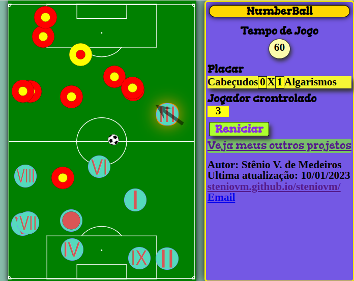Jogo de Futebol onde você controla os algarismos.
O efeito Doppler
Simula o efeito Doppler. Defina a posição inicial e a velocidade da fonte e a posição inicial e a velocidade do observador e observe o padrão de ondas emitidas pela fonte à medida que as ondas atingem o observador.
O efeito Doppler e Sonic Boom

Permite explorar o efeito Doppler para som e Sonic Boom. Pode-se ajustar a velocidade da fonte e do observador de som.
O efeito Doppler, com gráficos
Simula o efeito Doppler. Defina a posição inicial e a velocidade da fonte e a posição inicial e a velocidade do observador e observe o padrão de ondas emitidas pela fonte à medida que as ondas atingem o observador.
O experimento da gota de óleo de Millikan

Essa simulação é uma versão simplificada do experimento realizado por Robert Millikan no começo dos anos 1900.
O Macaco e o Caçador
Simula a clássica situação de um macaco e um caçador. O caçador atira um dardo tranquilizante que deve acertar o macaco, mas este larga o galho da árvore e começa a cair direto. Como a arma deve ser apontada para que o dardo atinja o macaco?
O macaco e o tratador

A simulação retrata o clássico problema físico de se atingir um alvo em queda livre.
O pêndulo balístico

Um pêndulo balístico é um dispositivo usado para determinar a velocidade de uma bala.
O pêndulo balístico "Quiz"

A velocidade inicial não é mostrada - ela deve ser determinada pelo usuário.
O pêndulo cônico

Um pêndulo cônico consiste em um objeto preso a uma corda e movendo-se em um círculo horizontal. O comprimento da corda é fixo, ajuste o raio, a velocidade da animação e o ângulo de visão.
O Triângulo Retângulo - Teorema de Pitágoras

Observe as relações que existem em um triângulo retângulo, como o Teorema de Pitágoras. Altere o cateto x, o cateto y ou a hipotenusa do triângulo e veja os outros dois sendo alterados. Observe tanto em coordenadas retângulares quanto polares.
Objetos curvos

Essa é uma simulação do contato entre objetos circulares em duas dimensões para detectar as forças de interação de contato entre eles.
Óculos colorido

Veja o mundo através de uma coloração diferente (usando um óculos como filtro colorido), entenda a natureza das cores.
Ohmímetro

Esta simulação permite estudar o funcionamento da função ohmímetro de um multímetro digital. Na simulação somente a função ohmímetro está ativa.
Olho Humano: Defeitos da Visão

Esta simulação permite estudar os defeitos da visão (miopia e hipermetropia) e suas correções. Há 6 opções de olhos. Os olhos da simulação ou são míopes ou hipermétropes.
Onda de choque

Demonstra a formação de uma onda de choque quando um corpo se desloca com velocidade maior que a do som nesse meio.
Onda de Luz

Aprenda mais sobre a luz como uma onda eletromagnética e como relacionar sua frequência e comprimento de onda aos campos eletromagnéticos.
Onda de pêndulo em duas dimensões

Uma animação simples mostrando o movimento da onda de pêndulo em duas dimensões.
Onda electromagnética
Mostra uma onda eletromagnética num plano de polarização, que se propaga no eixo x com representação dos vetores campo elétrico e campo magnético.
Onda electromagnética

Mostra uma onda eletromagnética num plano de polarização, que se propaga no eixo x com representação dos vetores campo elétrico e campo magnético.
Onda em Corda

Discuti as propriedades de onda utilizando um vocabulário comum e preve o comportamento das ondas em diferentes meios e nos terminais de reflexão.
Onda quadrada

A aplicação mostra de forma prática a série de Fourier na formação de uma onda quadrada com base na sobreposição de várias ondas.
Ondas

Simula a propagação de uma onda senoidal com ajuste de frequência, Amplitude, Comprimento de onda, Fase e escala do gráfico.
Ondas de superfície
Uma simulação de uma onda de superfície. Pode-se ajustar a amplitude, o comprimento de onda e a velocidade da onda. Mostra que o movimento da partícula na onda é circular.
Ondas Eletromagnéticas

Essa é uma simples animação representando uma onda eletromagnética. Os vetores em verde mostram as veriações dos campos elétricos e os vermelhos do campo magnético.
Ondas em uma cavidade

Ilustra a superposição de vários modos dentro de uma cavidade, como a de um laser ou cordas vibrantes. A animação é feita a partir da soma de vários modos estacionários.
Ondas estacionárias

Mostra, sob várias perspectivas, um conjunto de esferas que oscila formando uma onda estacionária.
Ondas estacionárias

Mostra ondas estacionárias em cordas e em colunas de ar abertas e fechadas. Pode-se escolher uma corda ou colunas de ar, bem como o harmônico específico. Mostra as ondas de deslocamento transversal e longitudinal.
Ondas Estacionárias

Visualize a formação de ondas estacionárias em uma corda bem como quanto espaço é necessário para encaixar o 1º e o 2º harmônico dessa onda estacionária.
Ondas estacionárias em cordas

Ondas estacionárias em cordas. Pode-se ajustar a frequência vibracional, a densidade linear e a tensão da corda.
Ondas estacionárias em um Tubo
Simula o movimento de particulas em um tubo sendo percorrido por duas ondas longitudinais, como um som, e a sobreposição destas formando uma onda estácionária.
Ondas estacionárias em uma Corda
Simula o movimento de uma corda sendo percorrido por duas ondas transversais, e a sobreposição destas formando uma onda estácionária.
Ondas estacionárias longitudinais
Mostra os harmônicos produzidos num tubo de ar como exemplo de ondas estacionárias, ilustrando também o movimento das moléculas durante o processo de oscilação.
Ondas estacionárias transversais
O usuário pode escolher se a reflexão se dá na extremidade livre ou na fixa, qual ou quais as ondas que quer observar:
Ondas Interferentes

Visualize as ondas combinadas que são formadas quando duas ondas se sobrepõem.
Ondas Longitudinais

Ondas longitudinais e estacionárias animadas.
Ondas Tutorial

Tutorial sobre os fundamentos das ondas mecânicas. Incorpora muitas simulações muitas informações gerais sobre ondas.
Ondas: Intro

Simula ondas com água, som e luz para ver como estão relacionadas. Discuti as propriedades das ondas usando vocabulário comum.
Operações com Números Complexos
Realiza operações com numeros complexos em um plano carteziano e polar.
Óptica Geométrica

Explica como uma imagem é formada por lentes ou espelhos, convergentes ou divergentes, utilizando diagramas de raios.
Orbitais do hidrogênio

Mostra o gráfico da função densidade de probabilidade dos orbitais do hidrogênio para varias situações de exitação.
Órbitas e Energia
Mostra a energia associada à Terra enquanto ela orbita o Sol. Pode-se alterar a velocidade inicial da Terra. Mostra três gráficos, todos em função do tempo: da energia cinética da Terra, da energia potencial gravitacional do sistema Terra-Sol e da energia mecânica total, que é a soma da energia cinética com a energia potencial gravitacional.
Órbitas elípticas e a 2ª Lei de Kepler

Uma simulação de um planeta orbitando um sol. Pode-se ajustar a velocidade inicial do planeta, a distância inicial do centro do planeta ao centro do sol e a massa do sol. A órbita será elíptica, circular, parabólica ou hiperbólica, dependendo das condições iniciais. Mostra a 2ª Lei de Kepler do traço do movimento planetário para ver a órbita elíptica dividida em oito fatias de área igual, cada uma varrida em tempos iguais.
Os Polos Celestes
Na esfera celeste existem dois pontos que parecem não girar, o Polo Norte Celeste e o Polo Sul Celeste, que são projeções do eixo da Terra. Aqui é demonstrado como a posição dos polos celestes dependem da latitude geográfica do observador.
Oscilação Amortecida

Apresenta uma oscilação amortecida com o auxílio de um gráfico e com apresentação dos valores das variáveis envolvidas no fenômeno.
Oscilação de uma Mola

Observe como a massa afeta o período de oscilação de algo em uma mola.
Oscilação harmónica

Utiliza um lapis presso a uma mola para desenhar uma senoide numa folha de formulário continuo.
Oscilações forçadas

A simulação permite comparar lado a lado dois sistemas sujeitos à oscilações forçadas. É possível simular o fenômeno da ressonância por meio da escolha da frequência com a qual o estímulo é aplicado.
Oscilações forçadas (Ressonância)
Um pêndulo mola é movimentado por ação externa sendo esse movimento assumido como harmônico. Assim descreve esse movimento através da função coseno como oscilações forçadas.
Oscilações horizontais

Investigar os fatores que afetam a amplitude, frequência, período e frequência angular de um disco sem atrito oscilando em uma superfície horizontal presso a uma mola.
Oscilações horizontais com amortecimento

Investigar os fatores que afetam a amplitude, frequência, período e frequência angular de um disco sem atrito oscilando em uma superfície horizontal presso a uma mola com amortecimento.
Oscilações no parquinho

Em manutenção - Estude as oscilações enquanto Annie se balança em um parquinho.
Oscilador harmônico simples

Simula uma oscilação harmônica de um corpo bem como as variáveis relacionadas ao fenômeno, como velocidade, amplitude e energias plotando em um gráfico.
Oscilador harmônico simples - Helicóptero

Simulação um fenômeno de oscilação harmônica no contexto de um corpo humano suspenso por uma mola pressa a um helicóptero. É possível acompanhar a variação das grandezas e variá-las.
Osciladores

Apresenta diversos sistemas ocilatórios mecânicos, sempre utilizando a conservação de energia mecânica.
Osciladores acoplados

Permite comparar o comportamento de dois sistemas formados por osciladores acoplados, isso é, sistemas nos quais a oscilação de um dos corpos está relacionada ou restrita pela oscilação do outro.
Osciloscópio

Simula o funcionamento de um osciloscópio mostrando o desvio de um feixe catótico (elétrons) ao passar por campos elétricos regulados por funções de ondas.
Osmose

A simulação mostra o deslocamento de água através de uma membrana semi-permeável entre duas regiões, uma de maior concentração de soluto e uma cm menor concentração.
Ótica do olho humano

Demonstra a ótica do olho humano e várias lentes que podem ser usadas para corrigir a visão defeituosa.
Pacote Quente Pacote Frio

Mostra reações endotérmicas e exotérmicas ao misturar substâncias em bolsas de termicas de primeiros socorros.
Padre Brown em Aceleração Constante

Encontrar a relação entre a distância percorrida e o tempo de viagem para o Padre Brown numa bicicleta que parte do repouso e acelera a uma taxa constante.
Padre Brown em Velocidade Constante

Encontrar a relação entre a distância percorrida e o tempo de viagem para o Padre Brown numa bicicleta a uma velocidade constante.
Padrões de adição de vetores
Permite somar vetorialmente vetores que representam movimentos circulares, o resultado é a formação de padrões bem complexos e interessantes.
Padrões de batida

Gera duas ondas sonoras de frequências proximas e bem definidas e apresenta os gráficos das ondas e da sobreposição delas.
Paquímetro

Movimente o cursor de um paquímetro para aprender como utiliza-lo e lé-lo.
Pára-quedismo

Uma simulação do arrasto do ar (resistência do ar) encontrado durante o paraquedismo.
Para-raios

Aprenda sobre carga elétrica, campo elétrico e potencial elétrico em uma situação envolvendo um raio atingindo um para-raio.
Paradoxo hidrostático

Simula dois experimentos que mostram como a pressão no fundo de um recipiente depende apenas da da altura da coluna de liquido, e não do formato do recipiente, e como isso forma um aparente paradoxo com o peso do recipiente.
Paralelogramo de Forças

Permite mudar a tensão sobre um os fios que passam por polias e sustentam um peso, mostrando a soma vetorial de três forças se equilibrando.
Paralelos e Meridianos da Terra

Mostra o globo terreste, onde é possivel gira-lo livremente. Permite encontrar as coordenadas (latitudes e longitudes) de qualquer ponto.
Parque da Proporção

Usa o significado de razão e de proporção em diferentes contextos.
Partícula carregada em um campo elétrico

Esta é uma simulação de uma partícula carregada sendo atirada em um campo elétrico uniforme.
Partícula carregada em um campo magnético

Esta é uma simulação de uma partícula carregada eletricamente sendo atirada em uma região com cmapo magnético. É possível explorar a relação entre massa, carga, velocidade, intensidade do campo magnético e o raio da trajetória da partícula.
Partícula carregada em um campo magnético 3D

Esta é uma simulação em três dimensões do movimento de uma partícula em uma região de campo magnético.
Partículas de Alta Energia

Descubra a relação entre velocidade e energia cinética no contexto de um acelerador de partículas.
Pássaro Chinês

Mostra o funcionamento de um pássaro chinês, um brinquedo que utiliza o calor ambiente e um reservatório de agua para gerar um movimento semelhante a um passaro ciscando.
Patos Doppler

Aprenda mais sobre o efeito Doppler em um contexto no qual patos estão cruzando um lago.
Pêndulo

Trata-se de uma simulação física de um pêndulo.
Pêndulo Balístico
Um pêndulo balístico é um dispositivo que pode ser usado em investigações policiais para determinar a velocidade de um projétil. A bala atinge um corpo preso a uma corda e fica presa nesse corpo, fazendo com que ele oscile até uma altura máxima, que pode ser utilizada para determinar a velocidade do projétil.
Pêndulo caótico

Um pêndulo amortecido é um sistema caótico. Em um sistema caótico o comportamento futuro é altamente dependente das condições iniciais do sistema. Qualquer pequena variação nas condições iniciais é capaz de causar comportamentos bastante diversos.
Pêndulo com campo de direção

Trata-se de uma simulação de um pêndulo mostrando o gráfico de fases e o campo de direções associado à equação diferencial.
Pêndulo Cônico - Uma bola em uma corda
Mostra o movimento de uma bola presa a uma corda. A bola descreve um movimento circular em um plano horizontal.
Pêndulo Cônico: 3D

Um pêndulo cônico consiste em um objeto preso a uma corda e movendo-se em um círculo horizontal. Ajuste o comprimento da corda, a velocidade, a velocidade da animação e o ângulo de visão.
Pêndulo de força de reação

Simulação de um pêndulo com forças de reação juntamente com uma comparação com uma simulação baseada em equações do movimento.
Pêndulo de Foucault

Traz uma simulação do experimento do Pêndulo de Foucault, cujo objetivo era demonstrar a rotação da Terra ao redor do seu próprio eixo.
Pêndulo de Maxwell

Apresenta o experimento conhecido como Pêndulo ou roda de Maxwell e tem como objetivo demonstrar a conservação da energia ou sua dissipação quando há atrito no sistema.
Pêndulo de Newton
Simula uma experiência muito conhecida que demonstra a conservação do momento e a conservação da energia.
Pêndulo de Newton

Simula uma experiência muito conhecida que demonstra a conservação do momento e a conservação da energia.
Pêndulo de Torção

É possível estudar o período de oscilação em função: da massa, da constante torcional do fio, da amplitude angular de oscilação e das dimensões de cada corpo.
Pêndulo de Waltenhofen

Um corpo de metal maciço efetua um movimento de pêndulo passando pelos dois polos de um eletroimã. Ao ligar o eletroimã o movimento é interrompido após pouco tempo por causa do campo magnético. Se o disco tiver entalhes, o tempo para a imobilização é estendido, ou seja, o efeito de freio é fortemente reduzido.
Pêndulo Duplo

Essa é uma simulação de um pêndulo duplo. Para grandes oscilações é um sistema caótico, mas para pequenas oscilações é um sistema linear.
Pêndulo Duplo

Simula um pêndulo duplo sem amortecimento desenhando a trajetória e indicando sua imprevisibilidade.
Pêndulo Duplo com motor de física

Simulação de um pêndulo duplo utilizando uma engine física realista.
Pêndulo Duplo Invertido

Essa é uma simulação física da vibração de um pêndulo duplo invertido no qual o suporte vibra rapidamente na direção vertical.
Pêndulo Duplo móvel

Essa é uma simulação física de um sistema de pêndulo duplo na qual o suporte pode ser movido.
Pêndulo Duplo Rígido

Essa é uma simulação de dois corpos rígidos unidos formando um pêndulo duplo.
Pêndulo em mola
Mostra a variação das grandezas associadas à oscilação de uma massa suspensa de uma mola - elongação, velocidade, aceleração, força e energia - durante a oscilação.
Pêndulo esférico

Simula o movimento de um pêndulo em três dimensões, também conhecido como pêndulo esférico, sem amortecimento.
Pêndulo Físico

Permite o estudo do movimento de oscilação de um pêndulo físico formado por uma haste com 17 pequenos orifícios dispostos ao longo de uma linha central longitudinal e simétricos em relação ao furo no centro da barra.
Pêndulo Móvel

Um pêndulo preso a um ponto de suporte móvel ou "bloco âncora". Altere parâmetros como gravidade, comprimento do pêndulo, amortecimento, amplitude, frequência e força de vibração periódica.
Pêndulo PocketLab

Ajuste a massa de um peso de pêndulo, o comprimento do pêndulo, o ângulo de deslocamento e o campo gravitacional onde o pêndulo está balançando e veja como essas variáveis afetam a taxa de oscilação de um pêndulo.
Pêndulo PocketLab com previsão

Examine o efeito do comprimento no período de um pêndulo.
Pêndulo simples
Mostra a variação da elongação, da velocidade, da aceleração tangencial, da força e energia, durante a oscilação de um pêndulo.
Pêndulo Vibratório Invertido

Essa é uma simulação de um pêndulo no qual o pivô está vibrando rapidamente na direção vertical. Surpreendentemente a posição do pêndulo na posição vertical acima do suporte é estável, dessa forma, o sistema também é conhecido como pêndulo invertido.
Pêndulos

Investigue os fatores que afetam a taxa na qual um pêndulo oscila. Altere o comprimento do pêndulo, o ângulo de liberação e o corpo celeste no qual o pêndulo está oscilando.
Pêndulos acoplados

Simula a dinâmica de pêndulos acoplados por uma haste com ajuste de varios parâmetros.
Pêndulos ligados
Mostra dois pêndulos ligados através de uma mola com um baixo coeficiente de elasticidade. É característico desse sistemas que a energia da oscilação se transfira alternadamente de uma parte do sistema para a outra parte do sistema.
Pensamento Computacional
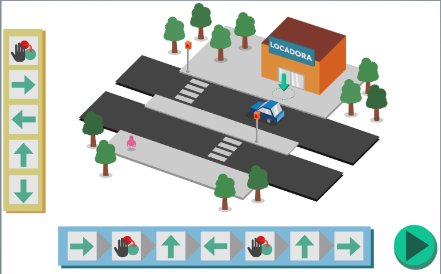Faça um algorítimos para ajudar o personagem a devolver seu VHS para a locadora.
Percorrendo o Lopping

Aprenda mais sobre movimento circular no contexto de uma montanha russa percorrendo um looping.
Perda de energia em ressaltos

Investiguem a quantidade de energia perdida por uma bola quando ela quica, ou seja quanta energia é perdida quando a bola é lançada de diferentes alturas.
Perda de energia em salto com previsão

Investiguem a quantidade de energia perdida por uma bola quando ela quica, ou seja quanta energia é perdida quando a bola é lançada de diferentes alturas.
Perda de energia no salto

Investigue a quantidade de energia perdida por uma bola quando ela quica. Mudarão a altura inicial da bola e veja como isso afeta a quantidade de energia perdida e a porcentagem da energia original perdida.
Periodic Table (of awesome)
A Tabela Periódica da Física Minuciosa
Pesando Doces no laboratório

Colete dados sobre o número de bombons em um recipiente e a massa correspondente do sistema e use a representação gráfica para encontrar uma equação que pode ser usada para fazer previsões.
Pescaria - anzou na profundidade certa

Ao ir pescar, conecte diferentes materiais ao anzou para faze-lo flutuar ou afundar. Aprenda como a densidade de um corpo ou mateiral irá determinar se ele flutua ou afunda na água.
Peso aparente (e a força de empuxo)
Ilustra o conceito de peso aparente e como ele pode estar relacionado ao empuxo.
Peso versus Massa - Determinação da Gravidade

Encontrar a relação entre a massa da garrafa de água e a gravidade no planeta. Mude a quantidade de água na garrafa e veja como a força da gravidade muda. Essa virtualização não ocorre na Terra.
Pi

Mostra graficamente o numero Pi como a relação entre o diamêtro e a circunferência.
Pilha

A simulação é uma demonstração de uma pilha de objetos caindo em um apoio em forma de vértice.
Pilha Atrair

Essa é uma simulação de vários objetos atraindo-se mutualmente por meio de interação gravitacional.
Pinguim com fome

Esse é um jogo para duas pessoas nas quais deve-se fazer com que os pinguins cheguem aos bolos mas evitem as bombas.
Pintura com Ciano, Magenta e Amarelo – Pigmentos CMY

A simulação permite a utilização de pigmentos de cores ciano, magenta e amarelo para colorir uniformes de escolas.
Pista de boliche

Entenda como ocorre a transição entre o movimento de deslizamento e o de giro ao arremessar uma bola em uma pista de boliche.
Pista de corrida

Use as setas para conduzir o carro pela pista com o menor número de movimentos.
Planeta mais próximo da Terra (em média)
Simula as órbitas dos três planetas interiores do sistema solar orbitando o Sol mas vistos da Terra. Além disso, mostra as distâncias desses planetas à Terra.
Plano inclinado
Mostra o movimento de um corpo subindo um plano inclinado a velocidade constante permitindo a observação das forças que atuam sobre o corpo nessas condições.A inclinação, o peso do corpo e o coeficiente de atrito podem ser alterados dentro de certos limites.
Plano inclinado

Esta aplicação mostra o movimento de de um corpo ao "subir" um plano inclinado com velocidade constante permitindo a observação das forças que atuam sobre o corpo nessas condições.
Plano inclinado

Permite o estudo do movimento de um bloco em um plano inclinado sob diferentes condições de gravidade, inclinação, massa e atrito.
Plano inclinado - Deslisamento

Investigue a relação entre o ângulo de inclinação e a aceleração do objeto. Varie o ângulo e a massa do objeto sem atrito.
Playground de Satélites

Explore diferentes aspectos do movimento de satélites. Varie a massa, o raio orbital e o corpo que o satélite está orbitando.
Poder da Lâmpada

Varie a resistência de uma lâmpada e a diferença de potêncial no circuito. Veja como esses fatores afetam a corrente através da lâmpada, a energia gasta e, consequentemente, a luminosidade.
Poder da Luz com Laboratório de Previsão

Investigue a relação entre potência e tensão para uma lâmpada ideal.
Polaridade da Molécula

Prevé e indica a polaridade molecular considerando polaridade da ligação e a geometria molecular.
Polarização - Atividade Óptica

Esta simulação permite estudar a atividade óptica de uma substância em função do comprimento de onda (da cor) da luz utilizada, da concentração da solução e do comprimento que a luz percorre dentro da solução.
Polarização da Luz

Ondas não polarizadas passam por uma fenda vertical, deixando apenas seus componentes verticais. Esta onda transversal vertical se aproxima de uma fenda vertical. Girando a fenda, apenas uma componente da onda pode passar.
Polarização de Lata de Alumínio

A simulação demonstra como um corpo eletricamente carregado é capaz de atrair um corpo neutro.
Polias

Encontre a relação entre o número de polias usadas e a força necessária para levantar uma massa. Altere o número de polias, o planeta e a massa.
Polígonos Regulares
Forme Polígonos Regulares Convexos e Estrelas Poligonais Regulares.
Ponte de Wheatstone
Permite determinar o valor de uma resistência desconhecida a partir do equilíbrio da Ponte de Wheatstone.
Ponte levadiça

Aprenda sobre o equilíbrio de torques no contexto de uma ponte levadiça medieval.
Ponte suspensa

Observe como as forças necessárias para suportar uma ponte suspensa mudam à medida que um objeto se move pela ponte.
Ponto de ebulição - Altitude

Mostra um gráfico com a temperatura de ebulição da agua em função da altitude, uma coluna de mércurio variando com a pressão na altitude escolhida e um termômetro mergulhado na água em ebulição.
Ponto de ebulição - Pressão atmosférica

Mostra um gráfico com a temperatura de ebulição da agua em função da pressão, também um termômetro mergulhado na água em ebulição e ilustração de um panela de pressão ou de uma camera de vácuo.
Ponto de orvalho

Mostra em um gráfico a relação entre a humidade atmosférica relativa e a temperatura e então calcula o ponto de orvalho e humidade absoluta.
Porque um processo adiabático muda de temperatura?
Demonstra um processo adiabático observando um único átomo em um cilindro e com isso tente responder à pergunta feita.
Posição e Deslocamento

Aprenda a diferença entre distância percorrida e deslocamento utilizando vetores, além disso, compreenda o significado de módulo dos vetores.
Potência e Eficiência Mecânica

Em manutenção - Explore a energia cinética e a potencial rebocando objetos em um declive sem atrito.
Potencial elétrico de cargas pontuais

Apresenta o potencial elétrico gerado por cargas elétricas puntiformes.
Potenciômetro
Simula o funcionamento de um potenciômetro, isso é, um resistor cuja resistência pode ser variada.
Pousando um foguete
Simula uma bola acoplada a um foguete. A bola é abandonada de uma altura de 40 m e quando atinge 20 m o foguete é acionado. Acompanhe a posição, velocidade e aceleração da bola por meio de gráficos.
Prática de adição e subtração de vetores

O simulador tem como objetivo somar e subtrair vetores de forma prática.
Prática de Sobreposição de Pulso de Onda

Interferência de dois pulsos de onda em uma corda. Escolha as formas dos pulsos movendo manualmente pontos e mova os pulsos para ver a sobreposição.
Pressão

Simula o funcionamento de uma câmera de pressão positiva e negativa, com dois tipos de bomba de ar e várias esclas de medida de pressão.
Pressão atmosférica - Altitude

Mostra um gráfico com a pressão atmosférica em função da altitude e uma coluna de mércurio variando com esta pressão
Pressão capilar

Simula um experimento mostrando a pressão capilar atraves de tubos soprados por uma pessoas. Pressão capilar é a diferença em pressão através da interface entre dois fluidos imiscíveis.
Pressão do pneu

Como a ar pode sustentar um caminhão? Encontre a pressão no pneus em razão da massa do caminhão.
Pressão em fluidos Lab

Examine a relação entre a profundidade e a pressão em um fluido.
Pressão em um fluido estático
Traz quatro sensores de pressão: no ar, no recipiente com água, no recipiente com mercúrio no recipiente com líquido desconhecido. Controle a posição dos sensores de pressão no interior desses fluidos.
Pressão hidrostática
Mostra um modo para medir a pressão hidrostática no interior de um líquido utilizando um tubo manométrico em U.
Pressão hidrostática

Mostra o modo como se pode medir a pressão hidrostática no interior de um líquido recorrendo a um tubo manométrico em U.
Prevendo a velocidade em um ponto em uma rampa

Use um detector de movimentopara encontrar a aceleração de um carro em uma ladeira. Em seguida, use essa aceleração para prever a velocidade em um determinado ponto ao longo da rampa.
Primeira e Segunda Derivada de uma Função
Desenha o gráfico de uma equação e sua primeira e segunda derivada.
Primeira Lei de Kepler
Mostra a orbita de planetas ao longo do tempo podendo ajustar valores.
Primeira lei de Newton

Mostra as consequências da inércia nos movimentos dos corpos na ocorrência de uma parada brusca ou no início de um movimento.
Primeira Lei de Newton

Aprenda sobre a primeira lei de Newton que diz que um objeto em movimento tende a permanecer em movimento a menos que sofra a ação de uma força externa.
Primyphos - Fatoração Prima
Encontre os numeros primos que fatoram numeros para subir a escada.
Princípio das alavancas
Mostra uma alavanca interfixa à qual podem ser aplicadas pequenos pesos de valor unitário e varias posições.
Princípio das alavancas

Mostra uma alavanca interfixa à qual podem ser aplicadas pequenos pesos de valor unitário 1,0 N.
Princípio de Bernoulli

Possibilita verificar o princípio de Bernoulli mediante a variação de diversos fatores relevantes ao fenômeno em um tubo de largura variável.
Princípio de Fermat: Reflexão

Esta simulação permite verificar que, segundo o Princípio de Fermat, na reflexão da luz o caminho percorrido pela luz entre dois pontos situados em um meio, mas passando por um ponto em um espelho será aquele para o qual o tempo de percurso é mínimo.
Princípio de Fermat: Refração

Esta simulação permite verificar que, segundo o Princípio de Fermat, na refração da luz o caminho percorrido pela luz entre dois pontos situados em meios diferentes será aquele para o qual o tempo de percurso é mínimo.
Princípio de Huygens

Explica com base no princípio de Huygens o fenômeno da difração.
Princípio de Pascal

Demonstra o princípio de Pascal que diz que a pressão aplicada a um ponto de um fluido é transmitida a todos os demais pontos.
Princípio do menor tempo

A aplicação pretente responder ao questionamento: "Como a luz decide qual caminho percorrer até chegar a um objeto?". A física nos diz que ela obedece ao princípio do menor tempo, retratado nessa simulação pelo problema do guarda salva vidas.
Princípios de Pascal

Veja como equilibrar massas diferentes em um sistema fechado e cheio de fluido com vasos comunicantes de raios diferentes. Este o principio do elevador hidráulico.
Prisma

Mostra a dispersão da luz, formando um espctro colorido comumente chamado de arco-iris, ao atravesar um prisma. Podendo regular variáveis
Prisma
Demonstra como um prisma funciona para a dispersão da luz. Dispersão ocorre porque o índice de refração varia dependendo do comprimento de onda da luz. Algo estranho parece acontecer quando a dispersão é alta, o ângulo do prisma é grande e o meio ao redor do prisma tem um baixo índice de refração.
Prismas

Esta simulação permite estudar o comportamento de um raio de luz ao incidir em um prisma. É possível verificar que o desvio sofrido por um raio de luz em um prisma passa por um mínimo.
Probabilidade Plinko

Conta o número de bolas em um escaninho e relacione isso à probabilidade de cair nesse compartimento.
Problema de equilíbrio: barra sustentada por cabo

Um problema de equilíbrio ajustável envolvendo uma barra uniforme com uma massa sobre ela. A barra tem um eixo na extremidade esquerda e é sustentada na extremidade direita por um cabo. A massa da barra e da caixa, o comprimento da barra, a posição da caixa e o ângulo do cabo podem ser ajustados.
Problema de refração

Mostra por que vêmos dois pontos na parte inferior do vidro quando o ângulo de incidência original é pequeno o suficiente, por que o segundo ponto fica mais brilhante quando o ângulo crítico de incidência é atingido.
Processos Isotérmicos vs Adiabáticos
Veja a diferença entre processos à temperatura constante (isotérmicos) e processos adiabático. Observe os caminhos diagrama PV, nos processos isotérmicos não tem variação de temperatura, portanto a variação de energia interna é zero, mas nos processos adiabáticos o calor transferido é zero.
Processos Isotérmicos vs Adiabáticos - versão Química
Veja a diferença entre processos à temperatura constante (isotérmicos) e processos adiabático. Observe os caminhos diagrama PV. Esta é a versão Química da simulação, com o sinal do trabalho oposto ao definido pelos físicos. Na versão Química, o trabalho é positivo se o trabalho é realizado no sistema pela vizinhança.
Processos isotérmicos, isobáricos e isocóricos
Investigue as transformações isobáricas (pressão constante), isocóricas (volume constante) e isotérmicas (temperatura constante).
Processos nos gases ideais
Mostra relações entre pressão,volume e temperatura em transformações isobáricas, isocóricas e isotérmicas em um gás confinado
Projéteis

Encontre as relações que afetam a distância horizontal percorrida por um projétil. Modifique a altura inicial, a velocidade inicial e o ângulo em que o projétil é disparado.
Projétil horizontalmente lançada

Demonstra as componentes horizontal e vertical de um lançamento horizontal de um corpo (cacho de bananas) afim de atingir um macaco.
Projétil horizontalmente lançada 2

Demonstra o lançamento de um projétil (missel) com possibilidade de variação de diversas grandezas envolvidas.
Projétil verticalmente lançado

Demonstra para diferentes velocidades iniciais o fenômeno do lançamento vertical para atingir diferentes alturas máximas.
Propagação da função de onda

Simula a propagação da função de onda de uma partícula por potenciais como: Potencial degrau, Barreira de potencial, Poço de potencial e Oscilador harmônico.
Propagação de epidemias

Simula a dinâmica de propagação de epidemias e pandemias (como da covid-19) a partir de um modelo de partículas interagentes. As pessoas são representadas por bolinhas que interagem entre si, podendo transmitir doenças ao entrar em contato outra.
Propriedades do capacitor

Investigue as diferentes mudanças que podem ser feitas em um capacitor de ar e os resultados que ocorrem devido a essas mudanças. Calcule a capacitância em cada situação.
Propriedades dos Gases

Descrever o comportamento das partículas de gás confinado. Como as variáveis P, V, N e T.
Proteção contra raios

Simula e demonstra o funcionamento de um dispositivo de proteção para raios que pode ser instalado em redes de alta e média tensão.
Pulando em um Carrossel
Mostra um carrossel visto de cima e uma garota chamada Sarah que salta sobre o carrossel e consequentemente gira juntamente com ele.
Quadrilátero Cíclico (Quadrilátero Inscrito)
Mova os vértices do quadrilátero inscrito pressionado e arrastando com o mouse e acompanhe os ângulos.
Quadrilátero Tangencial (Quadrilátero Circunscrito)
Mova os vértices do quadrilátero circunscrito pressionado e arrastando com o mouse.
Quebra-cabeça - Colisão 1D - interativos
Permite que a quantidade de movimento dos veículos e do sistema seja marcada por meio de barras e depois é possível verificar se a marcação foi feita de forma correta.
Quebra-cabeça - determine as cargas
Com base nos gŕaficos de campo elétrico e de potêncial elétrico encontre o valor de duas cargas.
Quebra-cabeça - determine dois valores de carga
Com base na representação do campo elétrico em volta das cargas, encontre o valor de duas cargas.
Quebra-cabeça - determine o valor da carga
Com base na representação do campo elétrico em volta das cargas, encontre o valor de uma carga.
Quebra-cabeça - Espelho oculto - imagem real e virtual
Determine a distância focal de um espelho oculto, concâvo ou convexo, movendo um objeto ao longo do eixo do espelho e observando os raios notáveis.
Quebra-cabeça - Espelho oculto - imagem virtual
Determine a distância focal de um espelho oculto, concâvo ou convexo, movendo um objeto ao longo do eixo do espelho e observando os raios notáveis.
Quebra-cabeça - Lente Convergente
Determine a distância focal de uma lente convergente movendo um objeto ao longo do eixo da lente e observando os raios notáveis.
Quebra-cabeça - Lente oculta - imagem real ou virtual
Determine a distância focal de uma lente oculta, convergente ou divergente, movendo um objeto ao longo do eixo da lente e observando os raios notáveis.
Quebra-cabeça - Lente oculta - imagem sempre real
Determine a distância focal de uma lente oculta, convergente ou divergente, movendo um objeto ao longo do eixo da lente e observando os raios notáveis.
Quebra-cabeça - Posição do observador - objeto além do foco
Em qual dos locais mostrados na simulação você pode colocar o olho para ver TODA a imagem do objeto?
Quebra-cabeça - Posição do observador - objeto além do foco do espelho
Em qual dos locais mostrados na simulação você pode colocar o olho para ver TODA a imagem do objeto?
Quebra-cabeça - Posição do observador - objeto entre foco e o centro
Em qual dos locais mostrados na simulação você pode colocar o olho para ver TODA a imagem do objeto?
Quebra-cabeça - Três correntes
Existem três fios paralelos longos e retos, um passando por cada vértice de um triângulo equilátero. Uma representação da força eletromagética resultante que o fio experimenta é mostrada. Classifique os fios com base na magnitude de suas correntes.
Quebra-cabeça de cargas
Existem três partículas carregadas, uma em cada vértice de um triângulo equilátero com a representação da força elétrica resultante. Classifique as partículas com base na magnitude de suas cargas.
Queda livre

Demonstra corpos de diferentes dimensões geométricas e presumivelmente massas diferentes em uma situação de queda livre e apresenta o tempo de cada em cada uma das situações utilizando a Torre de Pizza na itália.
Queda Livre em um tubo

Colete e análise de dados de queda livre num tubo. Lançe massas de diferentes alturas e calcule a velocidade.
Queda Livre PocketLab

Observe a relação entre a altura da qual um objeto é solto e o tempo que leva para atingir o solo em um planeta com gravidade desconhecida
Queda-Livre

Permite simular e medir o tempo de queda livre de pessos de 15, 30 e 45 g na gravidade da Terra, Lua e Marte até 100 cm de altura.
Questionário de gráficos de oscilação

É mostrado um gráfico de movimento para um objeto oscilante. Pode ser de posição, velocidade, aceleração ou força. De quatro outros gráficos de grandesas diferente deve escolher aquele que corresponde ao movimento mostrado no gráfico original.
Radiação

Mostra os tipos de radiação emitida por uma amostra radioativa e suas propriedades eletromagnéticas e interação com a matéria.
Radiação de corpo negro
Mostra o espectro de luz emitido por um corpo negro em função do comprimento de onda. Ajuste a temperatura para ver como a mudança de temperatura altera a quantidade de luz emitida, bem como o pico de comprimento de onda da luz. Mostra também a cor aproximada de um corpo negro nessa temperatura.
Radiano

Demostra atraves do circulo trigonométrico o conceito de radiano.
Raio catódico

Simula o efeito que um campo magnético pode ter sobre raios catódicos, que são feixes de eletróns.
Rampa do Galileu (com som)
Emite um beep toda vez que a bola pssa por uma das linhas verticais na rampa, de forma similar aos sinos na rampa de Galileu.
Rampa E Piano

Aprenda a relação entre força, trabalho e energia ao utilizar máquinas simples, como por exemplo, um plano inclinado.
Rastros de Partículas

Compreenda como forças magnéticas aplicadas a partículas carregadas eletricamente fazem com que elas se desloquem em trajetórias circulares e como o rastro dessas trajetórias proporcionam indícios de suas naturezas.
Razão e Proporção

Trabalha os conceitos de razão e proporção e usa a linguagem matemática para descrever uma relação entre duas quantidades.
Reação nuclear

Mostra os processos de Fussão, Fissão, Transmutação e reação em cadeia nuclear.
Reagentes, Produtos e Excesso

Reconhece que os átomos são conservados durante uma reação química.
Redes de Difração

Esta simulação permite estudar a difração da luz em redes de difração. Há três opções de comprimentos de onda (cores), uma rede com 80 linhas/mm permite determinar os comprimentos de onda.
Referencial

Acompanha o movimento de um ponto de uma bicicleta do ponto de vista de dois referênciais diferentes.
Refletindo Ondas

Visualize o progresso de uma onda ao longo de uma corda e a maneira como o pulso da onda reflete em diferentes limites. Altere a amplitude, a frequência, o número de ondas, a tensão na corda e a densidade linear da corda.
Reflexão

Traz uma simulação que retrata a lei da reflexão no qual um feixe incidente é refletido segundo um ângulo igual ao de incidência. É possível variar alguns dos parâmetros relacionados ao fenômeno.
Reflexão de onda em uma corda

Mostra de forma bastante prática como ocorre a reflexão em cordas quando suas extremidades são fixas ou livres.
Reflexão de pulso de onda (extremidades livres e fixas)

Um pulso de onda ricocheteando na extremidade de uma corda. A ponta da corda pode ser fixa ou livre, e há opções para mostrar as ondas não perturbadas incidentes e refletidas.
Reflexão e o papel do tempo
Digamos que você tenha dois pontos e queira que a luz viaje de um ponto a outro, refletindo em um espelho plano ao longo do caminho. Utilize o gráfico de tempo percorrido para encontrar o ponto de reflexão que fornece o trajeto mais rápido.
Reflexão e refração

Mostra a reflexão e a refração de um raio de luz incidindo de um meio para outro. Ajuste o índice de refração de cada um dos dois materiais, bem como o ângulo de incidência.
Reflexão e refração das ondas luminosas (Princípio de Huygens)
Explica a reflexão e refração das ondas luminosas através do princípio de Huygens.
Reflexão e transmissão de ondas
Simula de uma onda viajando através de uma corda e sendo refletida. Escolha se entre ser refletida em uma extremidade fixa, uma extremidade livre, outra corda mais leve ou outra corda mais pesada.
Reflexão em um espelho plano
Ajuste o ângulo do espelho e veja o que acontece com o feixe refletido! Determine o ângulo quando cada observador pode ver a luz.
Reflexão total

Mostra o fenômeno da reflexão total da luz de um laser em um jato de água oblicuo.
Reflexão total interna (fibra óptica)
Simula as multiplas reflexões que ocorrem em uma fibra otica, varie o indice de refração da fibra e o ângulo de incidencia do feixe de luz para encontrar a situação limite que a fibra pode funcionar.
Reflexão, o papel do tempo e a lei da reflexão
Observe a relação entre a minimização do tempo de propagação e a lei da reflexão.
Reflexão, refração e dispersão

Apresenta os fenômenos da reflexão, da refração e da dispersão da luz ao incidir um feixe na interface entre dois meios com medidas dos ângulos envolvidos.
Reflexões
Mostra a refleção de uma onda em uma corda, bem como a separação das ondas incidentes e refletida.
Refração

Apresenta um feixe de luz sofrendo refração ao passar de um meio para outro. É possível variar parâmetros relacionados ao fenômeno.
Refração

Esta simulação permite estudar a refração da luz em diferentes materiais. O arranjo “experimental” simulado se assemelha ao que é normalmente utilizado em laboratórios de ensino de física.
Refração

Apresenta um feixe de luz sofrendo refração ao passar de um meio para outro. É possível variar parâmetros relacionados ao fenômeno.
Refração
Apresenta um feixe de luz sofrendo refração ao passar de um meio para outro. É possível variar parâmetros relacionados ao fenômeno.
Refração da luz
Mostra o raio refletido e o raio refratado e calcula os ângulos correspondentes.
Refração da Luz

Investigue as mudanças no ângulo (ângulo de incidência e ângulo de refração) que ocorrem quando a luz muda de um meio para outro.
Refração e o papel do tempo
Digamos que você tenha dois pontos e queira que a luz viaje de um ponto a outro, refletindo em um espelho plano ao longo do caminho. Utilize o gráfico de tempo percorrido para encontrar o ponto de reflexão que fornece o trajeto mais rápido. Altere os indices de refração dos dois meios e depois arraste o ponto de interface.
Refração em três camadas
Mostra na trajetória de um raio de luz ao atravesar uma de material com faces paralelas e alcaçar um terceiro meio, mostrando os efeitos da refração de entrada e saida de multiplos meios.
Refração em um bloco retangular
Mostra na trajetória de um raio de luz ao atravesar um bloco com faces paralelas, mostrando os efeitos da refração de entrada e saida.
Refração em uma Lâmina de Faces Paralelas

A simulação permite estudar a refração da luz e o desvio lateral de um raio de luz que incide em uma lâmina de faces paralelas. O ângulo de incidência pode ser variado.
Refração, o papel do tempo e a lei de Snell
Digamos que você tenha dois pontos e queira que a luz viaje de um ponto a outro, refletindo em um espelho plano ao longo do caminho. Utilize o gráfico de tempo percorrido para encontrar o ponto de reflexão que fornece o trajeto mais rápido e compare com a Lei de Snell. Altere os indices de refração dos dois meios e depois arraste o ponto de interface.
Regiões em um tubo de Crookes

Simula cinco diferentes tubos, ou ampolas, de Crookes (experimento elétrico num tubo de raios catódicos, que mostra que esses raios se comportam como particulas ou seja, são eletrons) mostrando que com diferentes gases o raios podem mudar sua largura e sua cor.
Regra de Fleming

Simula um experimento que mostra a ação de uma força eletromagnetica induzida em uma haste percorrida por uma corrente estando imersa em um campo magnético.
Regressão por Quadrados Mínimos

Cria um gráfico a partir de pontos usando a regressão de mínimos quadrados.
Relação carga/massa do Elétron

Essa é uma simulação do experimento realizado por J. J. Thomson para determinar a razão carga/massa de um elétron.
Relativistic Space Sheep
Veja o Princípio da Equivalência em ação!
Relógio de pêndulo

Essa é uma simulação do mecanismo de um relógio de pêndulo.
Representação gráfica isobárica da Lei de Gay-Lussac

Simula uma expansão isobárica mostrando o diagrama PV associado a essa transformação.
Representação gráfica isocórica da Lei de Charles

A simulação apresenta uma expansão isocórica, ou isovolumétrica, mostrando o diagrama PV associado a essa transformação.
Representação gráfica isotérmica da Ley de Boyle-Marriote

Simula uma transformação isotérmica mostrando o diagrama PV associado a essa transformação.
Resfriamento Evaporativo

Esta é uma simulação de resfriamento evaporativo, água quente é adicionada ao recipiente e com o passar do tempo nota-se que apenas as moléculas menos agitadas permanecem nele.
Resistência de um Fio

Investigue os fatores que afetam a resistência de um fio. Ajuste o comprimento, o diâmetro e o material do qual o fio é construído e veja como a resistência varia.
Resistência do Fio à Tensão com Previsões

Encontre a resistência de um fio determinando a tensão que deve colocar no fio para criar uma corrente de 1 ampere. Mude a espessura do fio para ver como afeta a resistência.
Resistência e resistividade de um Fio

Determine a resistividade de um fio com base na corrente que passa por diferentes comprimentos de fio (Lei de Ohm), use a área da seção transversal para encontrar a resistividade do material.
Resistência elétrica

Prevé como alterar as variáveis, área, comprimento e resistividade (material) de um condutor irá afetar sua resistência.
Resistência em um Fio

Prevé como alterar as variáveis, área, comprimento e resistividade de um condutor irá afetar a resistência.
Resistência interna

Simula e compara dois circuitos puramente resistivos de corrente continua onde é possivel variar e acompanhar a variação da tensão, resistencia e corrente.
Resistência interna com previsão

Determine a resistência interna de uma bateria, bem como seu potencial eletroquímico, e a corrente máxima dela bateria.
Resistor dependente de luz

Mostra como varia a corrente em um fotoresistor (resistor variavel pela incidencia de luz) submetido a uma tensão fixa quando sua iluminação é alterada.
Resistores Não-Ôhmicos

Esta simulação permite o estudo da corrente elétrica alternada em função da tensão alternada aplicada em um resistor (filamento de uma lâmpada).
Resistores Ôhmicos

Esta simulação permite o estudo da corrente elétrica em função da tensão aplicada em um resistor. Há 6 resistores diferentes.
Ressonância

Apresenta a formação dos harmônicos sonoros em um tubo para duas situações distintas.
Ressonância de Coluna de Ar com Ondas Longitudinais

Permite observar duas ondas estacionárias. Pode-se ajustar o comprimento do tubo e da onda.
Ressonância de Colunas de Ar

Mostrar como funciona o processo de ressonância de ondas sonoras em colunas de ar.
Ressonância em sistemas atômicos

apresenta a solução das equações de Bloch ópticas no regime estacionário. Ressonancia atomicos superior bloch optica otica
Ressonância em uma Cavidade com Ar

Nesta simulação um alto-falante colocado na boca de um cano produz som com frequência bem definida. A frequência pode ser escolhida no intervalo de 300 Hz à 1000 Hz através de um cursor.
Ressonâncias em sistema de três níveis

Ressonancia equações bloch autler townes 3 niveis óptica atômica mecânica quântica
Resultante de forças (Adição de vectores)
Mostra gráficamente como somar vetores.
Reta Numérica: Distância

Representa a reta numérica mostrando a diferença entre números através da distância na reta.
Reta Numérica: Inteiros

Usa números positivos e negativos para representar quantidades em múltiplos contextos. Descreve a localização de um ponto em uma linha numérica em relação a outro número.
Reta Numérica: Operações

Raciocinar sobre adição e subtração de números inteiros em termos de localização de números na re+ta numerica.
Rock Candy - Palitos de cristais de açúcar

Ajuste alguns parâmetros e observe como são formados cristais em um barbante mergulhado em uma solução de água e açúcar.
Rolando - o problema da bola de boliche
Você já percebeu que muitas vezes ao arremessar uma bola de boliche, primeiro ela desliza e só depois começa a rolar? Essa simulação mostra as grandezas físicas envolvidas nesse movimento e ajuda a elaborar uma explicação para esse fenômeno.
Rolando - quatro exibições
Simula o movimento de rolamento sem deslizamento que é o movimento típico de pneus de carros e bicicletas.
Roldanas fixas e roldanas móveis

Mostra o ganho de força ao utilizar roldanas móveis e compara com roldanas fixas.
Rotação de uma porta giratória
Demonstra por meio de vetores indicando a força aplicada e da posição de aplicação o torque e a velocidade angular resultante.
Rotação, Deslizamento, Rolamento e Atrito

Rolamento com e sem deslizamento. Pode-se alterar o tipo de objeto (esfera sólida, cilindro sólido, etc.), a massa, o raio, o coeficiente de atrito e a velocidade inicial.
Rotação: Movimento de Rolagem

Movimento de rolamento de vários objetos. Selecione um ou mais objetos, a massa e o raio do(s) objeto(s), ângulo de inclinação.
Sabão

Mostra como o sabão ajuda a tirar manchas de tecidos, escolha entre o tipo de mancha e o tipo de solvente e veja o comportamento das moleculas.
Salto de esqui

Aprenda sobre a conservação da energia no contexto de um salto de ski.
Satélites geoestacionários

Simula a orbita de um satélite sobre o equador Terrestre, mostrando que à uma distância bem determinada o satélite permanece sobre um ponto fixo do planeta.
Satélites Geoestacionários

Aprenda mais sobre satélites geoestacionários e suas aplicações para comunicação.
Segunda Lei de Kepler
Mostra a orbita de planetas ao longo do tempo podendo ajustar valores.
Segunda lei de Newton

Por meio de simulação do movimento de caminhões sujeitos à forças constantes é possível perceber a relação entre a massa e a aceleração adquirida por eles.
Segunda Lei de Newton
Simula uma calha de ar tal como as utilizadas em laboratório para movimentos com aceleração constante. Os valores da massa do carrinho, da massa suspensa e do atrito, podem ser modificados.
Segunda Lei de Newton

Permite o estudo da segunda lei de Newton ao aplicar uma força horizontal constante sobre um corpo que pode se movimentar sobre uma superfície horizontal. Uma escolha de parâmetros conhecidos (gravidade, coeficiente de atrito, força e massa) permite a verificação da segunda lei de Newton.
Seleção Natural

Descrever quais características alteram a capacidade de sobrevivência de um organismo (coelhos) em diferentes ambientes.
Semicondutor intrínseco

Simula, a nivel atômico, a passagem de corrente por um semicondutor ligado em diferentes polaridades, mostrando os saltos eletrônicos.
Semicondutores

Mostra a estrutura atômica de diferentes tipos de semi-condutores.
Seno, Cosseno e Tangente de um Ângulo
Escolha entre seno, cosseno e tangente. Após isso mova o ponto para ter ângulos diferentes, o gráfico assumirá valores correspondentes ao ângulo descrito.
Séries de decaimento radioativo
Mostra a sequência de decaimento de diversos isotopos radiativos.
Sheep Bounce
Ovelha como um gás ideal - para a ciência!
Sifão - fluxo de água

Investigue alguns fatores que afetam o fluxo e a velocidade de saída da água que sai de um sifão.
Silício

Mostra estruturas cristalinas, a nivel atômico, de atômos de silicio.
Simetria
Escolha um valor de N, você verá N cópias de um padrão repetido simetricamente ao redor de um círculo. Pausar para ver uma imagem estática.
Simulação de Água

Mostra como as moléculas de água aderem umas às outras e como isso muda com a temperatura.
Simulação de Corpo Livre

Em manutenção - Aprenda a desenhar diagramas de corpo livre.
Simulação de espelho esférico do iPad

Simulação de espelho côncavo e convexo otimizada para uso em dispositivos móveis.
Simulação de fusão e ebulição

Nessa simulação um cubo de gelo é derretido e continuamente aquecido até que chegue à ebulição.
Simulação de lente para iPad

Simulação de lente côncava e convexa otimizada para dispositivos móveis.
Simulador de Consumo - Cemirim

Simulador de consumo de energia elétrica residencial, rural, comercial e residencial. Em uma lista estensa de aparelho defina quantos de cada e por quanto tempo os aparelho ficam ligados e tenha o cálculo do consumo mensal ou diário.
Simulador de Consumo - Enel

Simulador de consumo de energia elétrica residencial. Cômodo a cômodo defina quais e por quanto tempo cada aparelho fica ligado e tenha o cálculo do consumo mensal.
Simulador de onda simples

Mostra uma onda transversal simples em uma corda ou ondas longitudinais no gás.
Simulador de Ondas Estacionárias

Permite criar ondas estacionárias em cordas e tubos com varias opções de ajustes e visualizações.
Simulador de projéteis

A aplicação é uma simulação de lançamento de foguetes. É possível controlar a altura de lançamento, o ângulo e velocidade inicial.
Sintese subtrativa e aditiva

Mostra como a formação de cores secundárias e terciárias por meio de mistura de cores primarias, tando no sistema aditivo (RGB, luzes) quanto subtrativo (CMYK, pigmentos).
Sistema adiabático

Simula uma compressão adiabática, que ocorre rapidamente sem trocas de calor com o meio externo, mostrando o diagrama PV.
Sistema Binário - Gravitação
As velocidades dos dois objetos são inicialmente iguais e opostas. Mova os objetos e altere suas massas. Esses objetos interagem por meio da gravidade, então você pode ver a força gravitacional em cada um.
Sistema da 2ª Lei de Newton

Investigue os fatores que afetam a aceleração de um objeto em uma superfície horizontal sem atrito. Varie parâmetros como força motriz e massa total e veja como a aceleração é afetada.
Sistema de roldanas
Faça subir ou descer um objeto suspenso e observe uma mola mostrando a tensão no fio. Podem ser alterados os valores do peso do objeto e das roldanas.
Sistema de roldanas

Analisa o funcionamento de um sistema de polias móveis e a redução da força proporcionada por ele.
Sistema massa-mola

Simula um sistema massa-mola com diversas opções de parâmetros, como com ou sem amortecimento, e diversas opções de gráficos.
Sistema Solar

Mostra a tragetória dos corpos celeste nos sistemas Geocêntrico de Ptolomeu e heliocêntrico de Copérnico.
Sistema Solar Interior
Simula as órbitas dos quatro planetas interiores do sistema solar enquanto orbitam o Sol.
Slinky Lab

Uma corda pressa a um gerador de frequência. ajuste a densidade, tensão, amortecimento e periodo da onda
Sob Pressão

Descrever como a pressão varia no ar e na água em função da profundidade.
Sobreposição de ondas

A aplicação permite simular a sobreposição de onda variando fatores como frequência e fase das ondas.
Sobreposição de ondas de diferentes frequências

A aplicação permite simular a sobreposição de onda variando fatores como frequência e fase das ondas.
Sobreposição de ondas de igual frequência

A aplicação traz a simulação da sobreposição de ondas de mesma frequência, sendo possível variar o período das ondas e suas frequências.
Sobreposto

Duas ondas de frequência ligeiramente diferente. O que acontece quando elas são sobrepostas uma à outra? Para discutir batidas sonoras e interferências construtivas e destrutivas.
Soda - sem gás vs com gás

Ajuste paramêtros como: pressão, volume, quantidade de CO2 e Temperatura em uma garrafa de refrigerante e veja como varia a concentração de gás dissouvido no liquido.
Sólido platónico

mostra os dados (d4-tetraedro, d6-cubo, d8-octaedro, d12-dudecaedro e d20- icosaedro) como Sólidos Platónicos. Permite girar os dados.
Sólidos Platónicos
Veja Poliedros Regulares de varios ângulos.
Soluções Ácido-Base

Investiga combinações diferentes de força/concentrações que resultem em valores de pH iguais. Descreve como instrumentos comuns ajudam a identificar se uma solução é um ácido ou base, se é forte ou fraco, se é concentrado ou diluído.
Som

Gera uma onda sonora, permite regular a forma e a frequência de onda alem de usar a própria voz.
Soma dos Ângulos de um Triângulo
Mova três pontos e acompanhe os ângulos do triângulo formado por eles.
Some um 10

Desenvolve estratégias de matemática mental ao separar e juntar números.
Stellarium

Planetário de código aberto que mostra um céu realista em três dimensões igual ao que se vê a olho nu, com binóculos ou telescópio. Incluindo constelações, coordenadas, horários e varias outras informações
Super elevador

Traz uma simulação interativa de um elevador que pode ficar sujeito a diferentes acelerações para que sejam verificadas as consequências dessa aceleração sobre uma pessoa.
Superposição de Ondas Transversais

Simulação da superposição de duas ondas movendo-se no mesmo meio.
Survival Curves
Compare as vidas e expectativas de vida de diferentes animais!
Suspensão do carro

Essa é uma simulação em duas dimensões de uma suspensão automotiva.
Sustentação (aerodinâmica)

Demonstra como ocorre o processo de sustentação numa situação em que há passagem de ar por um objeto com uma aerodinâmica comparável a uma asa de avião.
Tabela periódica

Mostra a tabela periódica do elementos químicos com bastante detalhamento, incluindo o comportamento dos elementos ao longo da variação de temperatura.
Tabuleiro de Galton

Mostra o funcionamento da máquina e da distribuição das bolinhas, a qual tem a ver com a distribuição binomial.
Tacada certeira

Aprenda qual a condição para que uma força atue como força centrípeta e provoque um movimento circular em um corpo em um contexto de um jogador de hockey dando uma tacada no disco.
Tangentes ao Gráfico de uma Função
Desenha o gráfico de uma equação e uma reta tangente.
Tarefa de classificação - classificação por aceleração
Simula cinco diferentes representações cada uma correspondendo a uma configuração diferente de movimento com aceleração constante, associe cada uma delas à correta baseando-se no módulo da aceleração.
Tarefa de classificação - classificação por força líquida
Mostra cinco representações diferentes, cada uma correspondendo a um cenário diferente. Classifique com base na magnitude da força resultante, do maior ao menor.
Tarefa de classificação - classificação por resistência
Mostra cinco representações, cada uma correspondendo a um cenário diferente. Sua tarefa é classificá-los com base na resistência, do maior à menor.
Taxas Unitárias

Interpreta razões de unidades mistas (por exemplo, $/kg). Defini a taxa unitária e determina um método para calculá-la.
Tela Sensível ao Toque

Aprenda sobre capacitores em série e em paralelo ao analisar o funcionamento de telas touch-screen.
Telégrafo

Explore o código morse e descubra como sinais podem ser transmitidos por grandes distâncias itilizando-se máquinas de telégrafo baseadas no eletromagnetismo.
Telescópio astronómico
Simula um telescópio de refração astronômico simples, constituído por duas lentes, que se designam respectivamente por objetiva e ocular.
Telescópio Cassegrain

Aprenda sobre as leis da reflexão para espelhos esféricos e como a forma e o tamanho de um telescópio impacta na capacidade de observação.
Telescópio de Galileu

Mostra o caminho percorrido por feixes de luz notáveis (e seus prolongamentos) num telescópio galileano (ou um binóculo, ao observar um objeto à media distância
Telescópio Kepler

Mostra o caminho percorrido por feixes de luz notáveis (e seus prolongamentos)num telescópio kepleriano ao observar uma espaçonave alienigena.
Telescópio newtoniano

Mostra o caminho percorrido por feixes de luz notáveis (e seus prolongamentos) num telescópio newtoniano ao observar a espaçonave Enterprise.
Tempo de Reação

Permite o estudo do tempo de reação humano ao acionar os dois cronômetros simultaneamente. Após um tempo aleatório o cronômetro 1 para, então o usuário deve parar o cronômetro 2 para medir seu tempo de reação. A simulação mostra o tempo de reação (diferença entre os dois cronômetros).
Tensão, corrente e resistência

Simula um circuito de corrente continua simples, com o fluxo de cargas, com pilhas e lâmpadas. as lâmpadas podem ser ligadas em série, paralelo ou de forma mista.
Teorema de Pitágoras

Várias demostrações do Teorema de Pitágoras atraves de figuras geometricas
Teorema de Pitágoras 1
Altere os tamanhos dos catetos de um triângulo retângulo e acompanhe os tamanhos dos quadrados dos catetos e da hipotenusa.
Teorema de Pitágoras 2
Mostra um triângulo retângulo. Mova o ângulo reto do triângulo pressionado e arrastando com o mouse.
Teoria de Bohr para o átomo de hidrogénio
Mostra a órbita e o numero quântico de um eletrom em diversos niveis de energia para o atômo de hidrogênio. Tanto para o modelo corpuscular quanto ondulatório.
Terceira lei de Newton

O aplicativo mostra por meio de dinamômetros as consequências da terceira lei de Newton, conhecida por ação e reação.
Terceira Lei de Newton

Em manutenção - Explore a mudança de forças para mover um carrinho pesado para posições exatas.
Termístor

Mostra como varia a corrente em um termitor (resistor variavel pela temperatura) submetido a uma tensão fixa quando sua temperatura é alterada.
Termômetro
Mostra um termômetro com escala em Kelvin, Celsius e Fahrenheit. Varie a temperatura de 0 K a 600 K e veja passando por diversos fenômenos do universo.
Termómetro de Galileu

Simula o funcionamento de um Termómetro (ou termoscópio) de Galileu, que consiste em uma coluna de agua com bolhas de vidro, essas bolhas possuem densidade levemente diferentes, de forma que afundam ou flutuam de acordo com a temperatura.
Teste a si mesmo - Espelho oculto
Selecione o tipo de espelho (plano, concâvo ou convexo) oculto e descubra sua distância focal
Teste a si mesmo - Lente oculta
Selecione o tipo de lente (convergente ou divergente) oculta e descubra sua distância focal
Teste de fricção

Aprenda sobre a força de atrito e qual a força necessária para fazer com que objetos sobre uma superfície comecem a se deslocar.
Teste de queda livre

Demonstra, com a ajuda de efeitos sonoros, o tempo de queda de corpos a diferentes alturas.
Teste você mesmo - encontre a distância focal
Encontre a distância focal de um espelho concâvo movendo o objeto e observando os raios notáveis e a imagem.
Testes de Balística

Pratique conceitos de conservação da quantidade de movimento e energia analisando o caso de um pêndulo balístico.
Tiro com arco

Aprenda mais sobre como prever a trajetória de projéteis ao tentar acertar o alvo com uma flecha.
Torque de Garrafa de Água

Mova um objeto de massa desconhecida em uma régua métrica. até que o sistema atinja o equilíbrio e encontrer a água
Torque e Equilíbrio - Balança

Construa, calibre e teste uma balança construída com uma régua métrica, dois grampos de suspensão, um grampo de suporte, um suporte de suporte e algumas massas conhecidas.
Torque na Gangorra

Aprenda como corpos de diferentes massas podem se equilibrar em uma gangorra.
Torre de Basculamento

Explore a queda de objetos com e sem resistência do ar. Ajuste a densidade do ar, o tamanho do objeto, a massa do objeto e o campo gravitacional.
Torre de despejo com Gráficos

Observe como diferentes fatores afetam a taxa na qual objetos reais cairiam na presença da resistência do ar. Crie gráficos de tempo por posição, tempo por velocidade e tempo por aceleração. Esta torre está localizada em um planeta nos confins do universo.
Tour Trigonométrico

Defini funções trigonométricas para qualquer ângulo mostrando o gráfico, seno e cosseno.
Trabalho

Mostra a realização do trabalho por uma força levando em consideração diversas variáveis.
Trabalho de força no espaço

Descubram a relação entre o trabalho realizado por uma força e a velocidade adquirida pelo astronauta Wally que experimenta a força. Ajustar a intensidade da força, a que distância a força será aplicada e a massa do astronauta e meça a velocidade final.
Trabalho de um guindaste

Descubra a relação entre o trabalho que é feito e as mudanças na altura que ocorrem em um objeto sendo suspenso por um guindaste. Ajustar a quantidade de energia adicionada ao objeto.
Trabalho de uma mola

Descubram a relação entre o trabalho realizado e o alongamento de uma mola.
Traçando Retas

Explica como a inclinação de uma linha representada graficamente pode ser calculada. Desenha a linha no gráfico dada uma equação.
Trajetórias de corpos

Permite traçar trajetórias de corpos em órbitas gravitácionais e evidencia as condições para que os corpos descrevam essa trajetória.
Tramela de Arquimedes - Máquina de fazer nada

Essa é uma simulação da máquina de não fazer nada de Arquimedes.
Trampolim

Aprenda sobre a conversão de diferentes modalidades de energias potenciais e cinética ao analisar o movimento de um jovem em um trampolim.
Transferência de Calor - condução

Examine os fatores que afetam a taxa de transferência de calor (por condução) através de uma barreira que separa dois gases.
Transferência de calor com laboratório de previsão

Examine as temperaturas das fontes quente e fria afetam a taxa de transferência de calor (por condução) através de uma barreira que separa dois gases.
Transferência de energia por condução

Simula a transmissão de calor por condução em uma barra acompanhando a temperatura em diferentes pontos com a ajuda de termômetros e outras velas que se despregam ao serem aquecidas.
Transferência de energia por convecção

Simula a transmissão de calor por meio da convecção, na qual há movimento de fluido em decorrência da diferença de temperatura.
Transferência de energia por radiação

Simula o funcionamento de um fogão solar com a possiblidade de escolha entre hemisfério norte e sul.
Transformações de energia numa mola

Investigue a transformação de energia potencial elástica em energia cinética. Ajuste a massa do jogador de hóquei lançado pela mola, a constante elástica da mola e a compressão inicial da mola.
Transformações Gasosas

Esta simulação representa um cilindro que pode ser preenchido parcialmente com um gás (dentre 4 opções) nas CNTP. Cada gás tem uma quantidade fixa de moles.
Transformações Geométricas Simples
Reflexão Axial, Reflexão Central, Translação e Rotação
Transformador

Simula montagens de um transfomador, podendo trocar os solenoides e o regular o gerador de entrada para acompanhar a tensão de saida.
Transformador CA

Aprenda como é feita a conversão de alta tensão produzida em usinas para baixa tensão utilizada em residências, por exemplo.
Transformadores

Esta simulação permite o estudo do funcionamento de um transformador de voltagem. Diversas combinações de bobinas podem ser utilizadas no primário e secundário do transformador.
Transições atômicas com pulsos de luz

Mostra um conjunto de átomos sendo estimulados por um pulso de luz laser representado por uma função gaussiana. A dinâmica das transições atômicas é simulada a partir da solução da equação de Liouville-von Neumann para um sistema de dois níveis.
Travessia de rio com laboratório de previsão

Veja como cruzar um rio com um barco de brinquedo. Antes de soltar o barco, ajuste a velocidade em relação à água. observe o movimento relativo em um ambiente bidimensional.
Travessia de um rio por barco

Veja como cruzar um rio com um barco de brinquedo. Antes de soltar o barco, ajuste a velocidade em relação à água e o ângulo em que sua proa aponta em relação à costa. observe o movimento relativo em um ambiente bidimensional.
Tree of Life Explorer
Explore as espécies da Terra e as relações entre elas facilmente.
Treinamento de mergulho

Aprenda sobre as condições de flutuação e sua relação com a pressão e a gravidade.
Trenó foguete

Ajuste o impulso do foguete, o peso, o arrasto do ar e o atrito para alterar o movimento do trenó.
Três polarizadores - o que há por trás da cortina?
Determine o ângulo do eixo de transmissão do polarizador oculto atráves da simulação do que acontece quando luz incide em uma sequência de três polarizadores. Ajuste os ângulos dos polarizadores anterior e posterior. O gráfico mostra a intensidade da luz em cada etapa da transmissão.
Três polarizadores (luz incidente não polarizada)
Simula o que acontece quando luz com intensidade maxima incide em uma sequência de três polarizadores. Ajuste os ângulos de cada polarizador individualmente. O gráfico mostra a intensidade da luz em cada etapa da transmissão.
Triângulo de Impedância
mostra o triângulo de impedância para um circuito RLC em série. A impedância (Z) do circuito é a hipotenusa do triângulo. A resistência é o lado horizontal do triângulo. O lado vertical é a soma dos vetores de reatância indutiva e reatância capacitiva. A corrente máxima é a tensão máxima dividida pela impedância.
Triângulo Esférico
Mostra como são os ângulos e lados de um triâgulo sobre uma esfera.
Tubo de Crookes - Cruz de Malta

Simula um tubo, ou ampola, de Crookes, que é um experimento elétrico num tubo de raios catódicos, que mostra que esses raios se comportam como particulas (eletrons).
Tubo de Newton

Compara a queda de objetos com massas diferentes (um martelo e uma pena) em três situações distintas, na Terra com atmosfera, na Terra num ambiente de vácuo e na Lua.
Tubos de Raios Catódicos de Thompson

Veja um modelo do experimento de Thomson que usa um tubo de raios catódicos com campos magnéticos e elétricos. meça a deflexão do feixe sob diferentes condições e determine a razão entre a carga e a massa das partículas no feixe.
Tubos de Ressonância

Visualize a formação de ondas estacionárias em um instrumento de sopro. Encontrer as frequências fundamentais, bem como alguns harmônicos superiores.
Turbina eólica

Aprenda a respeito do conceito de eficiência e como ele se relaciona à geração de energia por uma turbina eólica.
Turd the Target

O nefasto “Birdman” iniciou um bombardeio aéreo no campo de futebol da escola. Cabe a você realizar cálculos de movimento de projéteis para alimentar o “Sr. Robot” para que ele possa se posicionar adequadamente no campo para coletar os excrementos em seu balde antes que sujem o campo
Turd the Target 2 – Turd-a-Pult!

Frustrado por suas tentativas de lançar projéteis horizontalmente no original “Turd the Target”, Birdman criou um “Turd-a-Pult” (catapulta). Para impedir o Turd-a-Pult, você deve usar seu canhão de portal para colocar portais para interceptar cocô no ar. Se você for bem-sucedido, cada bosta entrará no portal e será depositado com segurança no “Portal-Potty”. Cabe a você realizar cálculos de movimento de projéteis para alimentar o “Sr. Robot” para que ele possa apontar a arma do portal e interceptar os cocôs voadores.
Tutorial de Movimento Harmônico Simples

Várias etapas sobre Movimento Harmônico Simples, mostrando derivações das equações para posição, velocidade, aceleração e período de um objeto em movimento harmônico simples.
Um bloco e uma polia
Demonstra o movimento de queda de um bloco preso a uma polia bem como o movimento de giro descrito por essa polia.
Um bloco e uma polia, com gráficos de barra de energia
Demonstra o movimento de queda de um bloco preso a uma polia bem como o movimento de giro descrito por essa polia, além disso, por meio de gráficos, é possível acompanhar a energia dos dois corpos ao longo do movimento.
Um carrinho de balística
Mostra um carro que durante seu movimento retilíneo e uniforme atira uma bola para cima. Por meio do movimento descrito pela bola é possível concluir várias coisas a respeito da sua velocidade.
Um cilindro de aceleração
Mostra um cilindro de raio R que acelera para a direita em decorrência da aplicação de uma força sobre ele.
Um disco em uma plataforma giratória
Simula um disco em uma vitrola (ou toca-discos) com aceleração angular. Um objeto colocado sobre o disco acompanha o movimento circular por alguns instantes, mas depois acaba escapando. As forças sobre o objeto podem ser acompanhadas por meio de gráficos.
Um exemplo de ciclo termodinâmico
Retrata um ciclo termodinâmico específico para um gás ideal.
Um exemplo de dilatação do tempo
Mostra uma nave espacial percorrendo a distância entre a Terra e Plutão, de 5 horas-luz, a velocidade relativistica (ajustável).
Um exemplo do Efeito Doppler
Uma ambulância passa por um cidadão parado na via pública. As condições de "captação" do som pelo ouvido do sujeito, são diferentes conforme a ambulância se aproxima ou afasta dele.
Um filme de ondas e um gráfico
Observe uma onda em uma corda ao longo do tempo e o gráfico de posição de um ponto desta corda. Ajuste a frequência e a amplitude da onda e a tensão e densidade linear da corda.
Um pêndulo simples
Demonstra a oscilação de um pêndulo, um gráfico registrando o ângulo de oscilação pelo tempo. Pode-se alterar o comprimento do pêndulo.
Um pêndulo simples, com amortecimento
Demonstra a oscilação de um pêndulo com amortecimento, um gráfico registrando o ângulo de oscilação pelo tempo. Pode-se alterar varios parâmetros.
Um polarizador (luz incidente polarizada)
Simula o que acontece quando luz polarizada com intensidade maxima incide em um polarizador. Ajuste os ângulos de polarização e do polarizador. O gráfico mostra a intensidade da luz em função do ângulo do eixo de transmissão do polarizador.
Uma bola em uma mola
Demonstra o comportamento oscilatório de uma massa presa a uma mola tendo a sua posição registrada em um gráfico.
Uma bola em uma mola - com amortecimento (atrito)
Demonstra o comportamento oscilatório de uma massa presa a uma mola sujeita à força de atrito enquanto oscila. É possível acompanhar a amplitude de oscilação por meio de um gráfico.
Uma bola em uma mola - gráficos de energia
Demonstra o comportamento oscilatório de uma massa presa a uma mola tendo a sua energia registrada em um gráfico.
Uma onda de primavera (semelhante à onda de pêndulo)
Demonstra o resultado de massas presas a molas individuais oscilando com fases ligeiramente diferentes. O resultado é a formação de padrões aleatórios surpreendentes.
Uma onda longitudinal
Mostra uma onda longitudinal em um tubo de ar. Ajuste a frequência e a amplitude da onda.
Uma onda longitudinal em uma mola
Mostra uma onda longitudinal em uma mola. Ajuste a frequência e a velocidade da onda.
Uma onda transversal
Demonstra a oscilação de uma onda transversal e por meio de um gráfico, mostra como varia a amplitude dessa onda a cada instante de tempo.
Uma partícula carregada movendo-se em três dimensões
Mostra o caminho espiral seguido por uma partícula carregada positivamente em um campo magnético uniforme. Também são mostrados os dois componentes do movimento: o movimento circular e o movimento a velocidade constante, que combinados produz uma espiral.
Uso histórico de energia nos EUA
A aplicação permite visualizar o histórico de uso de energia pelos Estados Unidos desde 1950.
Vareta pendurada

A simulação mostra uma vareta pendurada com uma massa em sua extremidade e a outra extremidade presa a uma mola. O sistema pode oscilar sujeito à gravidade.
Vasos comunicantes

Movimente vasos comunicantes para ver como a o nível se mantem igual, apesar de formatos diferentes.
Vazão da torneira

Descubram a fórmula que relaciona a vazão à velocidade da água e o raio da torneira.
Vela solar (pressão de radiação)
Simula um satélite ou sonda espacial que utiliza uma vela solar como forma de propulsão. Ajuste a massa da nave e o comprimento de cada lado da vela.
Velocidade Angular

Aprenda mais sobre o conceito de velocidade angular e como ela está relacioanda à velocidade linear.
Velocidade Constante vs. Aceleração Constante
Permite a comparação por meio de gráfico de dois movimentos, um deles com velocidade constante e o outro com aceleração constante.
Velocidade de Repulsão

Observe a velocidade máxima que um objeto pode obter quando é eletricamente repelido por uma carga semelhante.
Velocidade de Satélite

Observe a relação entre o raio orbital de um satélite e a velocidade que ele deve ter para manter sua órbita circular.
Velocidade do som

Demonstra, por meio da visualização de um raio, o tempo em que a onda sonora correspondente demora para chegar ao observador. É permitido variar a distância do observador ao ponto atingido pelo raio.
Velocidade do som

Demonstra, por meio da visualização de um raio, o tempo em que a onda sonora correspondente demora para chegar ao observador. É permitido variar a distância do observador ao ponto atingido pelo raio.
Velocidade dos cheiros

Teste o tempo que demora para sentir diversos cheiros emanados a uma certa distância de você, determine a velocidade que os cheiros se espalham no ar.
Velocidade Relativa

Aprenda mais sobre velocidade relativa ao observar como o movimento entre dois objetos é percebido por diferentes observadores em diferentes posições.
Velocidade Relativa: Barco Atravessando um Rio

Esta é uma simulação destinada a ajudar os alunos a compreender os conceitos de velocidade relativa e adição de vetores.
Velocidade relativa: corrida em uma calçada em movimento
Simula a velocidade relativa entre duas corredoras (Mia e Brandi) em uma dimensão, Mia corre em uma esteira móvel.
Velocidade térmica com laboratório de previsão

Observe a relação entre velocidade e temperatura de um gás ideal.
Velocidade Térmica simples em gás ideal

Explore as velocidades médias das partículas em um gás ideal. Controle a massa e a temperatura das partículas.
Velocista

Aprenda mais sobre atrito estático, cinético e deslizamento analisando o movimento de um velocista ao longo de uma corrida.
Vetores inteiros
Mostra diferentes maneiras de observar os vetores de posição e velocidade para uma bola que experimenta o movimento de um projétil.
Violão - Velocidade de ondas em cordas

Descobrir as relações entre a densidade linear e a tensão na corda com a velocidade da onda ao longo dela tocando violão.
Violino

A simulação interativa permite aprender mais sobre a formação de harmônicos sonoros ao observar de perto o som produzido por um violino.
Visão Colorida

Determina a cor que a pessoa vê através de combinações de luz vermelha, verde e azul. Descreve a cor da luz capaz de passar por filtros coloridos diferentes.
Visualização 3D de uma onda eletromagnética
Mostra uma onda eletromagnética plano-polarizada com vetores de cores diferentes para o campo elétrico e para o campo magnético. veja sob varias pespectivas.
Voltímetro

Esta simulação permite estudar o funcionamento da função voltímetro de um multímetro digital. Na simulação somente a função voltímetro está ativa.
Volume da Esfera
Princípio de Cavalieri - Veja o volume e a área de uma esfera e de um cone em relação à área.
What is a Day
Um vídeo interativo explorando dias estelares, solares e normais.
Zoológico de Partículas Subatômicas

Aprenda mais sobre a variedade de partículas subatômicas existentes e suas características e propriedades.
 - Stenio V.M. Fundador do SciSimuLab. Professor e redator de física e desenvolvedor web voltado para soluções em ensino de ciências.
- Stenio V.M. Fundador do SciSimuLab. Professor e redator de física e desenvolvedor web voltado para soluções em ensino de ciências. - Renam. Colaborador do SciSimuLab. Professor e redator de física e desenvolvedor de computação embarcada.
- Renam. Colaborador do SciSimuLab. Professor e redator de física e desenvolvedor de computação embarcada. - Walter Fendt. Pagina de simulações desenvolvida pelo professor Walter Fendt com projetos de Matemática, Física e Astronômia em varios idiomas.
- Walter Fendt. Pagina de simulações desenvolvida pelo professor Walter Fendt com projetos de Matemática, Física e Astronômia em varios idiomas. - LabFis-IFC, Laboratório Virtual de Física da Universidade Federal do Ceará.
- LabFis-IFC, Laboratório Virtual de Física da Universidade Federal do Ceará.